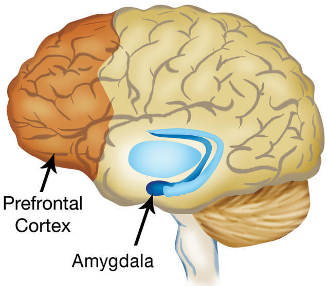
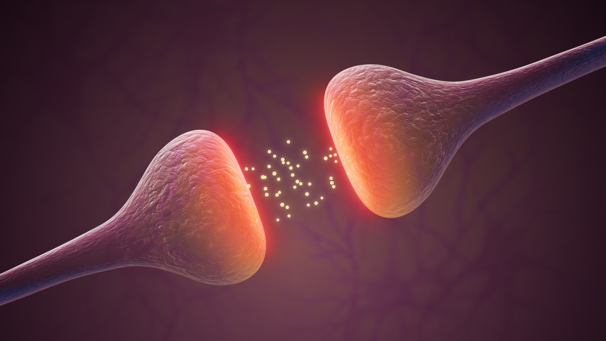
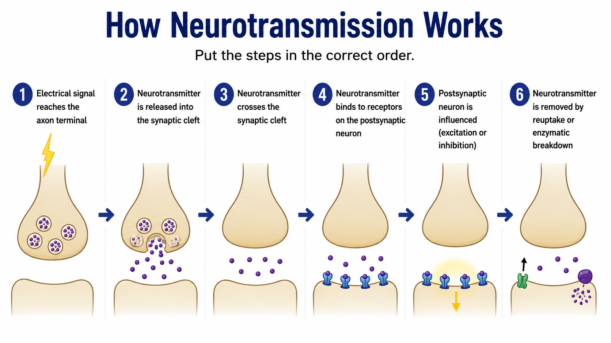
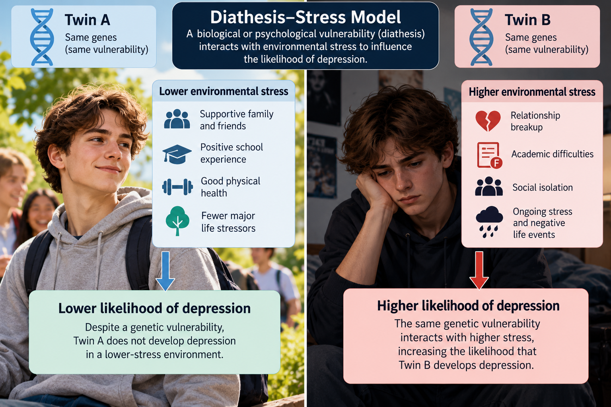
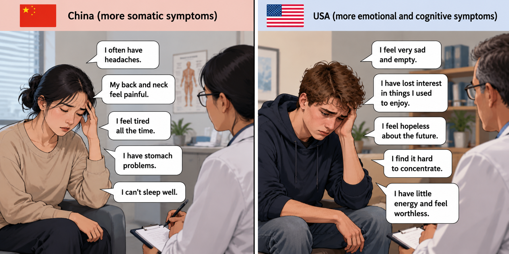
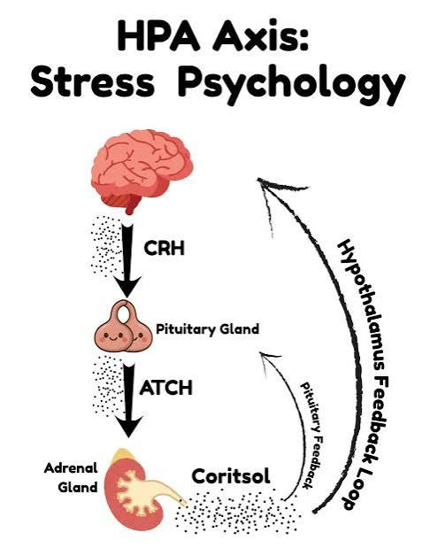
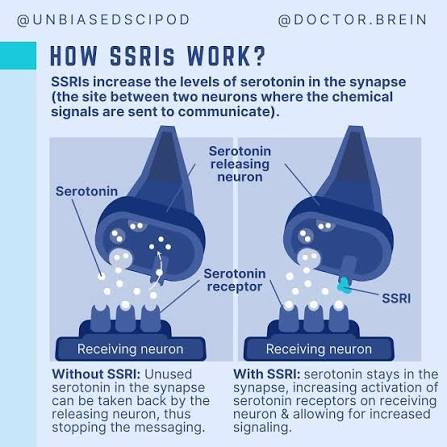

Two health problems will guide this unit: Major Depressive Disorder and problematic social-media use. We will investigate why they develop, how psychologists study them, and what can be done to help.
Maya has been diagnosed with Major Depressive Disorder (MDD). She has experienced persistent low mood, loss of interest in activities she previously enjoyed, difficulty sleeping and problems concentrating. But knowing that Maya has MDD does not explain why she developed it.
What could be contributing to Maya's depression?
Leo spends increasing amounts of time checking social media, including when he intends to study or sleep. He often reaches for his phone when stressed and finds it difficult to reduce his use even when it interferes with other parts of his life. But describing Leo's behavior does not explain why it developed.
What could be contributing to Leo's behavior?
Throughout this unit, our selected mental health disorder is Major Depressive Disorder (MDD). Our selected health problem is problematic social-media use. The IB guide uses social media addiction as one possible health problem. In this course, we will generally use the more cautious term problematic social-media use rather than assuming that every pattern of excessive use should automatically be classified as an addiction.
Some people may have greater biological vulnerability to depression. Psychologists can investigate factors such as genetic vulnerability, brain function and neurotransmission. But finding a biological process associated with depression does not automatically prove that it caused Maya's MDD.
How Maya interprets experiences may also matter. For example, repeatedly interpreting setbacks as evidence that 'nothing will ever improve' could contribute to patterns of thinking associated with depression. Cognitive models such as Beck's attempt to explain this through schemas and automatic thoughts.
Experiences can also contribute to vulnerability. Persistent stress, major negative life events or difficult social circumstances may increase the risk of depression. However, experiencing adversity does not mean that a person will inevitably develop MDD.
Maya's depression does not need to have one single cause. Biological vulnerability, patterns of thinking and environmental experiences may interact.
Leo sees friends and influencers repeatedly checking, posting and receiving attention online. Observing other people being rewarded can make behaviors more likely to be copied, while likes, replies and other responses may reinforce Leo's own behavior. Social Learning Theory examines exactly this process: learning by observing rewarded behavior.
Leo often checks social media when he feels stressed. If scrolling temporarily reduces unpleasant feelings, using social media may become a coping response that is repeated. This creates an important question: does stress contribute to problematic use, can problematic use contribute to stress, or can both occur?
Leo's behavior also occurs within a social environment. Peer expectations, constant access to technology and patterns of online interaction may influence when and how often he uses social media. The behavior therefore cannot be understood only by looking at Leo as an isolated individual.
Problematic social-media use can also have multiple influences. Social learning, stress and the wider social environment may interact.
Their problems are different, but psychologists can ask similar questions.
For both Maya and Leo, we can ask:
This is why Health & Well-being is not simply a list of disorders, theories and treatments.
Psychologists are trying to explain health outcomes using evidence.
Psychologists are also interested in how common health problems are.
But prevalence becomes psychologically interesting when we ask why rates change or differ.
For example:
What might explain an increase in recorded problematic social-media use over time?
Why might recorded rates of depression differ between populations?
Possible explanations could involve genuine differences in risk or exposure, but psychologists must also consider measurement, diagnosis, access to healthcare, reporting and cultural context.
A prevalence difference is therefore something to explain — not an explanation by itself.
If psychologists understand processes contributing to a health problem, they can ask whether changing those processes may help.
For MDD, we will examine both biological treatment and psychological treatment.
For problematic social-media use, we will examine strategies designed to reduce problematic behavior.
But an intervention sounding reasonable does not prove that it works.
We must ask:
This is why the unit examines both the explanation and the effectiveness of treatment and prevention.
We will investigate:
We will investigate:
We will investigate:
How can psychology explain, measure and improve health and well-being?
Every theory, study and intervention in this unit helps us answer part of that question.
What MDD is, why it matters, and why it is more than ordinary sadness.
Major Depressive Disorder (MDD) is a clinical condition characterised by persistent low mood and/or loss of interest or pleasure (anhedonia) that interferes with daily functioning.
A diagnosis requires five or more symptoms during the same two-week period, including either depressed mood or loss of interest/pleasure, and the symptoms must cause significant distress or difficulty in everyday functioning.
Sadness is a normal human emotion, whereas MDD is a disorder involving a persistent and impairing pattern of symptoms.
River has not seemed like themselves for the past three weeks. They do not necessarily describe themselves as sad. Instead, they say they feel “numb” and that things they used to enjoy—playing basketball, gaming with friends and going out on weekends—do not feel enjoyable anymore. They have stopped joining their friends after school and spend much more time alone.
River is also sleeping badly, feels tired almost every day, has difficulty concentrating in class, and has begun saying that they feel worthless and that they “can’t do anything right.” Their schoolwork is falling behind and they are struggling to manage their normal daily routine.
River is showing several symptoms associated with MDD, including loss of interest or pleasure, sleep disturbance, fatigue, difficulty concentrating, feelings of worthlessness, and clear impairment in everyday functioning. The symptoms have also persisted for more than two weeks and are interfering with daily life.
The important point: depression does not always look like obvious sadness. For some people, a major feature is anhedonia—a loss of interest or pleasure in things that previously mattered to them—which may be experienced as emptiness or emotional numbness.
People diagnosed with the same disorder may show very different symptom profiles. Recognizing symptoms helps us identify MDD, but psychologists also want to understand the mechanisms that may explain why depression develops and persists.
Sort each characteristic into the correct category.
How depression is identified and measured — and the challenges psychologists face when turning symptoms into data and diagnoses.
Depression cannot be measured directly like height or temperature. Psychologists and clinicians therefore measure indicators of depression, such as reported symptoms, how frequently they occur, their severity, and their effect on everyday functioning.
IB Connection — Measurement
Measurement is the process of turning a psychological construct into something that can be recorded or quantified.
Major Depressive Disorder (MDD) is identified through clinical assessment. There is currently no single biological test that can diagnose MDD.
A clinician talks with the individual about their symptoms, how long they have lasted, their severity, their impact on everyday functioning, previous episodes, and other relevant information.
Clinicians use standardized diagnostic systems to guide their assessment:
These systems provide standardized criteria that clinicians can use when assessing whether a person's symptoms fit a recognized disorder such as MDD.
Self-report measures ask people standardized questions about their own symptoms. Their responses can then be recorded and scored. Two widely used measures are the Patient Health Questionnaire-9 (PHQ-9) and the Beck Depression Inventory-II (BDI-II).
Clinicians also consider:
MEASUREMENT ≠ DIAGNOSIS
A questionnaire can measure reported depressive symptoms and contribute evidence to an assessment. A questionnaire score by itself is not the same thing as a clinical diagnosis.
The PHQ-9 is a real psychological questionnaire. Explore how its questions and response scale turn reported experiences into numerical data. The purpose here is to understand psychological measurement, not to diagnose yourself or anyone else.
The BDI-II uses a different approach from the PHQ-9. Instead of asking about frequency, each item presents four statements representing increasing levels of symptom severity. Select the statement that best describes how you have been feeling during the last two weeks, including today.
Commit to an answer before revealing the explanation.
SAME SCORE ≠ SAME SYMPTOM PROFILE
SAME SCORE ≠ SAME CAUSE
SAME SCORE ≠ SAME TREATMENT NEEDS
IB Connection — Measurement & Individual Differences
The same measurement output can result from different combinations of reported symptoms. Measurement records an indirect indicator, and individual differences mean identical scores do not necessarily imply identical symptom profiles, causes or treatment needs.
Reliability asks whether psychological measurement produces reasonably consistent results.
Consider this question: If the same person were assessed again, or if different clinicians assessed the same person, would the result be similar?
Researchers wanted to see whether people would receive the same MDD diagnosis when assessed again.
MDD received a kappa score of about 0.28, which is considered low.
In simple terms: the diagnoses were not very consistent. A person might receive an MDD diagnosis in one assessment but not receive the same diagnosis when assessed again.
This suggests that diagnosing MDD may not always be very reliable.
Important: A kappa of 0.28 does not mean that clinicians agreed only 28% of the time.
For now, remember:
Low kappa score = low consistency = lower reliability.
This provides evidence that standardized diagnostic criteria do not guarantee perfect agreement between assessments. Reliability can also depend on the assessment procedure, sample, clinicians and context.
STANDARDIZATION → can improve consistency
STANDARDIZATION ≠ perfect reliability
IB Connection — Reliability
Reliability concerns the consistency of psychological measurement or diagnosis.
Validity asks whether the interpretation made from a psychological measure or diagnosis is justified — particularly whether it adequately represents the construct it is intended to assess. Keeping “accuracy” in mind is fine as a simple memory aid, but HL answers need this fuller definition.
A questionnaire may reliably produce a score, but researchers must still ask whether that score validly represents the depressive symptoms or construct they want to measure.
Imagine someone reports sleep problems, exhaustion, difficulty concentrating, and appetite changes. A depression questionnaire produces a high symptom score. Does this automatically prove that depression is causing those symptoms?
Reliability
Is the measurement reasonably consistent?
Validity
Does the evidence justify the interpretation we are making from the measurement?
Standardized criteria and questionnaires can reduce subjectivity, but they cannot automatically eliminate bias.
People from different cultural backgrounds may describe, interpret, or express psychological distress differently. This can influence whether symptoms are recognized as depression.
Social expectations surrounding gender may influence how symptoms are reported or interpreted.
A clinician's assumptions or expectations can potentially influence how information is interpreted.
Standardization can reduce subjectivity, but symptoms still have to be reported and interpreted by people. Psychological measurement and diagnosis can therefore still be influenced by context and bias.
IB Connection — Bias
Bias refers to systematic distortion that can affect how research is conducted, interpreted, or applied.
Identify problems in how depression is diagnosed.
How genes, brain processes, and chemical messengers may increase vulnerability to depression.
Biological explanations examine how genetic inheritance, brain processes and chemical messengers may contribute to vulnerability to Major Depressive Disorder (MDD). Importantly, biological factors may increase risk or vulnerability — they do not mean that depression is biologically predetermined. Keep this distinction in mind as you work through the evidence.
Depression can run in families, which suggests that genetic differences may contribute to a person’s vulnerability to developing MDD.
This does not mean that there is a single ‘depression gene.’ Depression is polygenic: many genes may each make a small contribution to vulnerability. A person may therefore inherit a greater or lower susceptibility to depression rather than inheriting depression itself.
Genes also do not act independently of experience. Two people with similar genetic vulnerability can have different outcomes because their environments, experiences and other biological factors differ.
Imagine that depression has occurred several times in Noah’s family. His mother and grandfather have both experienced MDD.
This family history could mean that Noah has inherited some genetic vulnerability. But it does not mean that Noah will inevitably develop depression.
Noah’s outcome may also depend on factors such as stressful life events, relationships, social support and other biological differences. Genetic vulnerability changes probability; it does not determine a person’s future.
Because depression is polygenic, psychologists should not expect to find one gene that explains whether someone develops MDD.
Instead, many genetic differences may contribute small amounts of vulnerability. Genetic explanations therefore describe differences in risk, not a simple gene-to-disorder pathway.
McGuffin and colleagues compared depression concordance in identical (monozygotic or MZ) twins and non-identical (dizygotic or DZ) twins.
MZ twins share almost all of their genes, while DZ twins share roughly half of their segregating genes on average.
The researchers reported probandwise concordance of approximately 46% for MZ twins and 20% for DZ twins.
The higher concordance among MZ twins is consistent with genetic differences contributing to vulnerability to depression.
The most important comparison is that concordance was higher for MZ twins than DZ twins.
Because MZ twins are more genetically similar, this pattern is consistent with a genetic contribution to depression.
But notice something equally important: MZ concordance was about 46%, not close to 100%.
If genes completely determined whether someone developed depression, we would expect identical twins to show much greater similarity. The fact that many identical twin pairs differed shows that genes are not sufficient by themselves.
Twin studies cannot perfectly separate genes from environment. Identical twins may experience more similar environments than non-identical twins, so greater MZ concordance cannot automatically be attributed entirely to genetics.
The evidence therefore supports genetic influence, but it does not tell us that genes alone caused the difference.
Decide what each claim is allowed to conclude. No peeking back until you have committed to an answer.
Researchers have found differences in the activity and functioning of several brain regions in people experiencing depression.
Two useful examples are the prefrontal cortex and the amygdala.
These findings can help psychologists understand biological processes associated with depressive symptoms. However, finding a brain difference does not automatically tell us whether that difference caused the depression, resulted from it, or developed through an interaction with other factors.

Two brain areas commonly discussed in research on depression: the prefrontal cortex and amygdala.
The prefrontal cortex is involved in processes such as planning, decision-making, attention and regulating thoughts and emotions.
Differences in prefrontal functioning have been associated with depression. This could help explain why some people with MDD experience difficulties such as persistent negative thinking, poor concentration or difficulty regulating emotional responses.
For example, imagine someone receives one piece of criticism at work and then spends the entire evening repeatedly thinking, ‘I’m useless. I always get everything wrong.’ Difficulties in the systems involved in regulating attention and thought may contribute to why negative information becomes difficult to disengage from.
This does not mean that the prefrontal cortex contains a ‘depression center.’ It is one part of a much larger network.
The amygdala is involved in detecting and processing emotionally important information, particularly information related to threat and negative emotion.
Research has associated depression with differences in amygdala responses to emotional information. This may help explain why some people with depression show increased sensitivity to negative emotional cues.
For example, someone with depression might receive nine positive comments and one critical comment but find that the criticism captures their attention and produces a particularly strong emotional response.
The amygdala does not simply ‘create negative emotion,’ and depression cannot be reduced to an overactive amygdala. Its activity is part of interacting brain systems.
The prefrontal cortex and amygdala interact with wider brain networks.
It can therefore be useful to think about depression in terms of systems involved in processing emotional information and regulating thought and attention, rather than imagining that one brain region causes the disorder.
Brain findings provide evidence about biological processes associated with depression, but they need to be interpreted alongside cognitive, environmental and genetic evidence.
For each claim, choose the conclusion the evidence actually licenses.

Neurotransmitters are chemical messengers that allow neurons to communicate across synapses.
Neurotransmitters are chemical messengers that neurons use to communicate. When a neuron fires, it releases neurotransmitter molecules into the small gap between neurons, called the synapse. The neurotransmitter crosses the synapse and binds to receptors on another neuron, influencing its activity. Some neurotransmitter molecules are then taken back into the neuron that released them — a process called reuptake.
Neuron releases neurotransmitter
↓
Neurotransmitter crosses the synapse
↓
Binds to receptors
↓
Influences the next neuron
↓
Some is taken back up (reuptake)
One neurotransmitter that has been extensively investigated in relation to depression is serotonin (5-hydroxytryptamine, 5-HT). Serotonin signaling is involved in several functions relevant to Major Depressive Disorder (MDD), including mood-related processing, sleep, and appetite — all commonly disrupted in depression.
Serotonin affects brain areas involved in emotion. Increased serotonin signaling can reduce the amygdala’s response to negative or threatening information, reducing negative emotional reactions. For example, if a student receives criticism from a teacher, they may experience a less intense emotional reaction rather than immediately feeling extremely upset or threatened.
Serotonin also influences activity in the prefrontal cortex, a region involved in regulating thoughts and emotional responses. For example, after receiving that criticism, the student may be better able to control their emotional response, think about the feedback calmly and shift their attention back to their work rather than continuing to focus on the negative comment.
Researchers proposed that reduced activity in monoamine neurotransmitter systems, particularly serotonin, might contribute to depressive symptoms. Monoamines are a group of neurotransmitters that includes serotonin, noradrenaline (norepinephrine), and dopamine. This idea developed into the monoamine hypothesis of depression, one of the most influential biological explanations for MDD.
The monoamine hypothesis was later simplified in popular accounts into the idea that depression is caused by a “chemical imbalance” — specifically, having “too little serotonin.” However, depression cannot accurately be explained as simply having low serotonin. Current evidence suggests MDD involves much more complex interactions among neurotransmitter systems, neural circuits, genetics, cognition, and environmental experiences.
A useful way to hold this together:
Neurotransmitter system → communication between neurons → functioning of neural networks → psychological processes and behavior → possible contribution to depressive symptoms
This is a proposed contribution, not a proven single causal pathway. An association does not establish causation, and no single neurotransmitter explains MDD on its own.
Explaining MDD entirely through genes, brain activity, or neurotransmitters would be reductionist — reducing a complex disorder to simpler processes while overlooking other important influences. Because MDD is influenced by interacting biological, cognitive, social, cultural and environmental factors, a purely biological explanation may identify important mechanisms but neglect other levels of explanation.
Genetic evidence: McGuffin et al. (1996) supports genetic vulnerability because MZ concordance was higher than DZ concordance. However, MZ concordance was only about 46%, not 100%, showing that genetic similarity alone cannot determine who develops MDD.
Brain-imaging evidence: Research can identify brain differences associated with MDD, but cannot by itself establish whether those differences caused depression or resulted from it.
Neurotransmitter evidence: Neurotransmitter systems are biologically relevant, but the simple claim that MDD is caused by a single chemical imbalance is inadequate.
Evidence from beyond biology: Stressful life experiences, cognitive processes, and cultural and environmental differences provide additional evidence that a complete explanation cannot rely on biology alone. The effectiveness of psychological treatments such as Cognitive Behavioral Therapy (CBT) in reducing depressive symptoms also supports explanations beyond a purely biological account.
This raises the next question: what happens when a vulnerability interacts with stressful life experiences?
Vulnerability to depression can interact with stressful environmental experiences — the Diathesis–Stress Model explains how.
Evaluate the evidence for biological explanations of depression.
How vulnerability and environment interact to influence mental health.
Imagine two students who both fail an important examination — the same stressful event. One is disappointed for a few days, talks it through with friends, and starts planning a resit. The other cannot stop thinking about the result, stops attending classes, and describes feeling worthless for weeks afterwards.
Notice first what this example does not show: responding differently to an event is not the same as developing Major Depressive Disorder (MDD) or not developing it. A strong emotional reaction to failing an exam is an ordinary response, not a diagnosis. But people do differ in how low they become and for how long, and this slide introduces the Diathesis–Stress Model as one explanation of why the probability of developing MDD can differ between people: it combines pre-existing vulnerabilities, life circumstances, coping resources, and the support available to each person.
The Diathesis–Stress Model proposes that a person's underlying vulnerability interacts with stressful experiences to influence their probability of developing a psychological disorder such as MDD. Neither ingredient alone tells the whole story — the model's central claim is about how they combine.
Diathesis (vulnerability). A pre-existing susceptibility that may increase the likelihood of developing depression. It is present before the stressful event arrives, and it can take several forms:
Example: a student whose mother and grandmother have both experienced depression.
Inherited susceptibility exists in the person before any current stressor occurs, so it is genuinely pre-existing — though a family history is a risk marker, not proof that this individual inherited a specific vulnerability.
Example: a student who habitually interprets a friend's short reply as “they must be annoyed with me” and replays the thought for days.
Negative thinking habits are stable patterns that exist before the stressful event and shape how it is interpreted — the same ambiguous event is processed differently by different people.
Example: someone whose early experiences included prolonged insecurity or loss.
Earlier experiences can contribute to later vulnerability, for example by shaping how safe, capable, or supported a person expects the world to be when new stress arrives.
Stress. Difficult experiences or environmental demands that may increase psychological strain. Examples include bereavement, relationship breakdown, prolonged unemployment, financial insecurity, and social isolation. What counts as stressful depends partly on the person and their circumstances — the same demand is not experienced identically by everyone.
Interaction. The effect of stress may depend partly on a person's vulnerability, and the influence of vulnerability may depend partly on their experiences. For example, one demanding term of revision pressure may be manageable for a student with few vulnerabilities, while the same term overwhelms a classmate whose negative thinking turns every small setback into proof of failure. The stress is similar; its effect is not.
Probability. The model describes changes in risk, not certain outcomes. Vulnerability and stress shift the likelihood of developing MDD; they do not guarantee it or rule it out.
Common confusion. A family history of depression is one possible source of vulnerability — but having a family history does not guarantee a high diathesis, and having no family history does not mean having no vulnerability. Cognitive and developmental factors can create vulnerability in anyone.
The diagram below shows four conceptual combinations. It is a simplified conceptual illustration of how the model is usually interpreted — not a validated numerical prediction, and not evidence that vulnerability and stress add together in a mathematically established formula.
What does interaction actually mean here? An interaction means the relationship between one factor and the outcome may differ depending on the level of the other factor. If vulnerability and stress simply added together, a given amount of stress would raise risk by roughly the same amount regardless of vulnerability. In an interaction, the same amount of stress is associated with a larger change in risk for someone with higher vulnerability than for someone with lower vulnerability — which is why two people can pass through the same event with different outcomes. The exact shape of that combination varies across studies and individuals; the diagram shows the general logic, not a universal rule.
Example A — Same stress, different vulnerability
Two students experience a similar relationship breakup in the same term. Student A has several pre-existing vulnerability factors: a family history of depression and a persistent tendency to interpret setbacks as evidence of personal failure. Student B has fewer identified vulnerabilities.
According to the model, the same stressor can be associated with different levels of depression risk because the students' vulnerabilities differ. The interaction means the effect of the breakup depends on who is experiencing it: for Student A, the event may interact with negative thinking that turns the loss into a general verdict on themselves, so their probability of developing MDD is potentially greater. Student B may experience real distress that gradually fades, giving a relatively lower probability. The model does not claim that Student A will definitely develop depression or that Student B cannot — it predicts different probabilities, not different destinies.
Vulnerability: A — family history plus persistent negative interpretations; B — fewer identified vulnerabilities.
Stressor: a similar relationship breakup for both students.
Proposed interaction: the effect of the breakup on risk depends on each student's vulnerability.
Predicted difference: A's probability potentially greater, B's relatively lower — neither outcome is certain.
Example B — Similar vulnerability, different stress
Two people have similar underlying vulnerabilities: a moderate family history of depression and a tendency toward negative thinking. Person X experiences a busy but manageable period of academic pressure, with stable relationships and finances. Person Y experiences bereavement, financial insecurity, and a relationship breakdown within the same year.
Here the vulnerabilities are held constant and the stress differs. The model predicts that Person Y's probability of developing MDD is potentially greater, because the same level of vulnerability is combined with more serious and more prolonged environmental demands — several difficulties at once, each still unresolved when the next arrives. Person X's risk is relatively lower, though not zero: even manageable pressure is not the absence of stress.
Vulnerability: similar for both people.
Stressor: X — one manageable demand; Y — several serious, partly overlapping difficulties.
Proposed interaction: with vulnerability constant, the amount and duration of stress change the risk.
Predicted difference: Y's probability potentially greater — without any claim that X is safe or that Y will develop MDD.
Rumination is repetitive thinking about distressing experiences, emotions, or problems, often without moving toward effective problem-solving.
A student receives a disappointing examination result. That evening they repeatedly think — and think again — about the result, what it says about them, and what might go wrong next. The examination is finished, but their attention keeps returning to it, and no plan for preparing differently ever forms. This is why rumination can act as a cognitive vulnerability: it keeps attention on negative information, makes it harder to disengage from distressing thoughts, and can maintain low mood — particularly when combined with stressful experiences.
Rumination
“Why am I always such a failure? What if everything goes wrong?”Constructive reflection
“Which questions did I struggle with, and how can I prepare differently?”Both involve thinking about a negative event, so they can look similar from the outside. They differ in focus and direction. The ruminating thought is repetitive, evaluative and self-focused — it returns to the same conclusion about the person rather than moving anywhere. The reflective thought is specific and future-oriented — it identifies something concrete to do next. Repeating the first kind of thought for an evening typically maintains distress; the second kind can reduce it by converting the setback into a plan.
Research has reported associations between rumination and activity in the prefrontal cortex, the amygdala, and the default mode network (DMN) — regions involved in attention control, emotional processing, and internally focused thought respectively. Some researchers propose that rumination persists because of interactions between these systems: difficulty disengaging attention from negative material, and repetitive self-focused thought. These are proposed explanations supported by observed associations, not settled proof of one mechanism. The details matter less for this model than the core idea: thinking patterns are one way vulnerability can be cognitive rather than genetic.
Adjust the sliders to explore how vulnerability and stress interact to influence risk. This is a conceptual model — it does not calculate an individual's actual chance of depression.
Relative risk of developing MDD:
Lower
Read the fine print. This is a conceptual teaching tool, not a clinically validated risk calculator. It cannot predict an individual's probability of developing MDD, and there is no universal threshold of vulnerability or stress at which risk “switches on”.
Set vulnerability high but stress low — what happens to risk?
The estimate stays relatively low. A vulnerability on its own is not treated as enough to produce a high probability of MDD.
Evidence often cited here is McGuffin et al. (1996): identical (MZ) twins share essentially all their genes, yet their probandwise concordance for depression was about 46%, not 100%. That pattern supports a genetic contribution to depression while showing it is not genetically determined. Be careful about what it does not show: it does not directly demonstrate a particular vulnerability–stress interaction, and it does not establish that environmental stress is a necessary condition for depression — only that genes alone do not determine the outcome.
Now keep vulnerability high and increase stress — what changes?
The estimate rises substantially. When a person with high vulnerability encounters significant stress, the model predicts a greater risk than either factor alone would suggest. This is the core prediction of the interaction: the effect of the stress depends on the vulnerability it meets.
Set vulnerability low but stress high — is MDD guaranteed?
No. The model is probabilistic, not deterministic. With lower vulnerability, the probability of MDD is reduced — but sufficiently extreme or prolonged stress can affect anyone, there is no stress level that guarantees either outcome, and the model does not promise protection to any individual.
Case
Sarah is 19 years old. Her mother and aunt have both been diagnosed with depression. Sarah has always tended to worry excessively and interpret ambiguous events negatively. Last month, her close friendship group dissolved after a conflict, and she has been spending most of her time alone. She has also been sleeping poorly and finding it difficult to concentrate on her university work. Sarah plays football twice a week.
1. Identify Sarah's possible vulnerabilities.
Two kinds. First, a family history of depression (her mother and aunt) — a biological risk marker. Note the distinction: family history is not direct evidence that Sarah personally inherited a specific genetic vulnerability; it shows elevated family risk, which can reflect shared genes or shared environment. Second, a cognitive vulnerability: a long-standing tendency to worry excessively and interpret ambiguous events negatively. Both were present before the recent events, which is what makes them vulnerabilities rather than reactions.
2. Identify her environmental stressors.
The main stressor is the dissolution of her close friendship group after a conflict — a significant relationship loss. Its consequence, spending most of her time alone, is social isolation, which can itself act as an ongoing stressor. Her poor sleep and difficulty concentrating are better described as signs of strain than as separate stressors, though they can make coping with the original stressor harder.
3. Explain how these factors might interact.
Her cognitive vulnerability shapes how the stressor is processed: a tendency to interpret ambiguous events negatively can turn a friendship conflict into evidence that she is unlikeable, deepening the loss. The isolation then removes social contact that might otherwise buffer the stress — leaving her alone with repetitive negative interpretations. The interaction prediction is that this combination carries a higher probability of a depressive episode than the same stressor would for someone without these vulnerabilities — a prediction about probability, not a conclusion that Sarah has, or will develop, MDD.
4. Identify an existing protective factor.
Sarah plays football twice a week. That routine provides social contact, physical activity, and structure — all of which can lessen the impact of the friendship loss by keeping other relationships and a regular schedule in place. It is a real protective factor even though her vulnerability and the stressor remain.
5. Explain why the case does not establish that Sarah has MDD.
A scenario describes risk factors, not a diagnosis. The Diathesis–Stress Model predicts probabilities — it cannot tell you that a particular person has a disorder. Some details in the case (poor sleep, poor concentration) overlap with depression symptoms, but a diagnosis requires a clinical assessment against criteria such as symptom number, duration, and impairment — none of which a paragraph can establish. The case is useful for identifying vulnerabilities, stressors, interactions, and protective factors; it is not evidence about Sarah's diagnostic status.
Protective factors are influences that may reduce vulnerability, lessen the impact of stress, or support recovery and coping. The model is not only about two risk factors stacking up — what a person has around and inside them also shapes the outcome:
Example: a student experiencing bereavement has trusted friends and family members who provide emotional and practical assistance.
Support can lessen the impact of the stressor itself — grief is shared rather than carried alone, practical burdens are reduced, and someone is present to notice if the person is struggling.
Example: a student facing examination pressure uses realistic planning, problem-solving, and support rather than repeatedly avoiding the problem.
Coping changes the person's response to the same demand: a problem broken into planned steps usually strains a person less than the same problem avoided, which lets stress accumulate.
Example: someone experiencing prolonged difficulties can obtain appropriate professional or community support.
Access turns potential help into actual help. Without it, even strong support networks and effective services cannot act — knowing help exists and being able to reach it are different things.
No guarantee. Protective factors reduce risk rather than guaranteeing protection against depression — someone can have strong support and still develop MDD, just as low vulnerability does not guarantee safety.
In the case of Sarah, what protective factor does she already have, and how might adding another change her risk?
Sarah plays football twice a week, which provides social contact, physical activity, and routine — these are protective. If she also had a close friend she could confide in, or accessed university counselling, additional protective factors could reduce her risk by providing social support and coping resources, even though her vulnerability and the friendship stressor remain.
What would evidence for this model look like? Ideally: a measure of vulnerability, a measure of stress, and a measure of depression outcomes, showing that their combination predicts outcomes better than either alone. Two studies are often discussed — for different reasons.
Aim and sample: to estimate the contribution of genes to liability to DSM-IV major depression. The researchers studied 177 people with major depressive disorder (probands) from the Maudsley Hospital Twin Register in London, together with their same-sex co-twins. Assessments of the co-twins were carried out by researchers blind to zygosity and to the proband's history.
Findings: probandwise concordance for major depression was 46% in monozygotic (MZ) twins and 20% in dizygotic (DZ) twins — a large difference, since MZ twins share essentially all their genes and DZ twins about half. But concordance was far from 100% even in MZ pairs.
Interpretation: the pattern supports a genetic contribution to depression without genetic determinism — identical genes produced the disorder in both twins less than half the time. This is consistent with a probabilistic, multifactorial account.
Limitations: the study was not a direct test of the Diathesis–Stress Model — it measured genetic similarity and depression, not how vulnerability and stress combine, so it cannot show that a particular vulnerability–stress interaction occurred or that stress is necessary. The hospital-based sample may not represent depression in the wider population, and zygosity was established before routine DNA testing.
Aim: to test why stressful experiences lead to depression in some people but not others — specifically, whether a variant of the serotonin transporter gene (5-HTTLPR) moderates the effect of stressful life events on depression.
Participants and design: the Dunedin Multidisciplinary Health and Development Study — a representative birth cohort of 1,037 children born in Dunedin, New Zealand, in 1972–73, assessed repeatedly from age 3, with 96% of the cohort still participating at age 26. This prospective design means stress was measured before the outcomes, not recalled afterwards.
Genetic measure: 847 cohort members (all of European ancestry, to avoid confounds from population stratification) were genotyped for the 5-HTTLPR polymorphism: 17% carried two short alleles, 51% one short and one long, 31% two long alleles.
Stress measure: stressful life events between the 21st and 26th birthdays were recorded with a life-history calendar covering 14 kinds of event (employment, financial, housing, health, and relationship stressors). 30% reported no such events, 25% one, 20% two, 11% three, and 15% four or more — with no significant difference between genotype groups, so carriers were not simply attracting more stress. Childhood maltreatment was also measured.
Outcome measure: past-year depression at age 26 assessed with the Diagnostic Interview Schedule, yielding both symptom scores and DSM-IV major depressive episode diagnoses (17% of the sample met criteria), plus measures of suicidal ideation and informant reports from people who knew each study member well.
Reported findings: among carriers of a short allele, depression symptoms and diagnoses increased with the number of life events; among those with two long alleles, they did not. For example, among cohort members experiencing four or more stressful life events, about 33% of short-allele carriers were diagnosed with a major depressive episode compared with about 17% of those with two long alleles. The authors concluded this was evidence of a gene-by-environment interaction — and they themselves noted that the finding awaited replication.
Limitations: the study is observational, so it cannot prove causation; it tested a single candidate gene chosen in advance; and the genotyped sample was one ancestry group within one national cohort, limiting generalizability. There was no main effect of the gene alone — risk appeared only in combination with stress, which is exactly why the finding attracted so much attention.
Replication status — read this before citing Caspi et al. The specific 5-HTTLPR×stress finding has not been consistently replicated, and it must not be treated as an established fact. Risch et al. (2009) re-analysed data from 14 studies (over 14,000 participants) and found no interaction, while confirming that stressful life events themselves are strongly associated with depression risk. Culverhouse et al. (2018) combined 31 datasets (over 38,000 participants of European ancestry) and found no support for the interaction in any subgroup examined. Other meta-analyses have reported support for the interaction, but they have been criticized for combining studies with very different measures and statistical models. The overall picture: the original result remains contested, and the consistent finding across all sides is that stress matters and the gene alone does not.
The broader Diathesis–Stress framework does not depend on this one genetic candidate. Independent lines of evidence — twin studies showing genetic contributions without determinism, the strong association between stressful life events and depression, and research linking cognitive styles such as rumination to depression risk — all support the general idea that vulnerability and stress jointly shape risk, whatever the specific biological markers turn out to be.
Strength 1 — Integrative explanation. The model combines biological, cognitive, developmental, and environmental influences rather than reducing depression to a single cause. Each restricted account leaves evidence out: a purely genetic account struggles with the ~46% MZ concordance (genes alone do not decide), while a purely environmental account struggles with why people exposed to the same events differ. The Diathesis–Stress framework can accommodate both at once — which is exactly what McGuffin et al.'s non-deterministic concordance and the strong life-events effect both require.
Strength 2 — Individual differences. The model explains why people exposed to similar stressors can have different outcomes. In Example A, the same breakup carried different probabilities for two students; in Caspi et al., carriers of the same allele were not uniformly depressed — risk depended on the stress they experienced. Single-factor models have no natural way to express this.
Strength 3 — Practical applications. If vulnerability, stress, and protective factors can be identified, prevention and early intervention can be targeted: monitoring students with family histories during high-stress periods, teaching coping strategies, and strengthening access to support. Identifying risk factors does not guarantee that interventions will work — but it gives them a place to start.
Limitation 1 — Measurement. Vulnerability and stress are difficult to operationalize. Consider two people who are both “unemployed”: one has savings, a supportive family, and expects to find work soon; the other faces financial insecurity, has no one to turn to, and has been searching for a year. Which is experiencing “the same stress”? Depending on how researchers measure it — events counted, severity rated, or impact self-reported — studies can reach different conclusions about the same lives.
Limitation 2 — Causality. Finding that vulnerable people under stress experience more depression does not prove the interaction caused the depression. Stress exposure may itself relate to vulnerability (for example, some genes may influence the situations people enter, a possibility Caspi et al. themselves acknowledged), and depression can generate stressors as well as result from them. Prospective designs such as Dunedin's — measuring stress before outcomes — strengthen the inference, and yet the key specific finding still failed to replicate, a reminder that even strong designs do not settle questions on their own.
Limitation 3 — Prediction. The model cannot precisely predict which individual will develop MDD. In Caspi et al., among short-allele carriers with four or more stressful life events — the highest-risk profile reported — about two-thirds were not diagnosed. Elevated risk is a statement about probabilities in groups, not about a named person's future, which is also why the simulator's bar must not be read as a personal risk calculator.
Limitation 4 — Oversimplification. A two-variable diagram hides real complexity: people carry multiple vulnerabilities at once, stress comes in different forms and durations, and resilience and protective factors interact with both. Some people with high vulnerability and high stress never develop MDD — the four-box illustration cannot capture why without adding more factors than a simple diagram can hold.
Can the model predict exactly who will develop MDD?
No. The model is probabilistic: individual vulnerabilities and stressors are difficult to measure precisely, people exposed to apparently similar combinations can still have different outcomes, and even the highest-risk profiles in research (such as Caspi et al.'s short-allele carriers with four or more life events) included many people who were not diagnosed.
1. State what a diathesis is, and give one biological and one cognitive example of vulnerability to depression.
A diathesis is a pre-existing vulnerability that may increase the likelihood of developing a disorder such as MDD — present before the stressful event, and affecting probability rather than certainty. A biological example: an inherited susceptibility, suggested by a family history of depression. A cognitive example: a persistent negative thinking style, such as habitual rumination or interpreting ambiguous events as personal failures.
2. Amir's father was diagnosed with depression when Amir was a child, and Amir tends to blame himself when things go wrong. His hours at his part-time job were recently cut, and his income has become unpredictable. Using the Diathesis–Stress Model, explain why Amir's probability of developing MDD may be higher than a colleague's who experienced the same cut in hours.
Amir's vulnerabilities: a developmental/biological risk marker (a parent with depression — a family history marker, not proof of inherited vulnerability) and a cognitive vulnerability (self-blaming interpretations). The stressor: reduced hours and unpredictable income — financial insecurity. The interaction: because of his self-blaming style, the same event may be processed as further personal failure, and because of the family history his baseline risk may already be elevated — so the identical cut in hours meets more vulnerability in Amir than in his colleague, producing a potentially higher probability of MDD. The colleague with the same stressor but fewer vulnerabilities has a relatively lower probability — though neither outcome is guaranteed, and the model predicts risk, not diagnosis.
3. A student claims that Caspi et al. (2003) proved that a genetic vulnerability always requires environmental stress for depression to develop. Identify two problems with this claim.
Problem 1 — it overstates what the study found: even in Caspi et al.'s own data the pattern was probabilistic (among short-allele carriers with four or more life events, only about a third were diagnosed), so the study showed changed probability, not a requirement that stress always be present. Problem 2 — the finding has not held up as established: Risch et al. (2009) and Culverhouse et al. (2018) found no support for the 5-HTTLPR×stress interaction in large combined datasets, so a claim of “proof” treats a contested, non-replicated finding as fact. The claim also misreads the model itself: the Diathesis–Stress framework describes changed probabilities, not a universal rule that stress is necessary.
Tom has a family history of depression and has always been a perfectionist who sets unrealistically high standards. After losing his job, he has been unable to find new employment for three months. He has withdrawn from friends and feels hopeless about the future.
Real-life parallel: many people experience job loss without developing MDD. Tom's pre-existing vulnerabilities (family history plus perfectionism) make him more susceptible to its effects, and the sustained unemployment and social withdrawal represent ongoing stress rather than a single event.
Using the Diathesis–Stress Model, explain Tom's situation. Use the terms diathesis, stress, interaction, vulnerability, and probability.
Show model answer
Tom has a diathesis (underlying vulnerability) that is both genetic (family history of depression) and cognitive (perfectionist tendencies and unrealistically high standards). He has experienced significant stress: job loss followed by three months of unemployment, with social withdrawal extending the strain. The model proposes an interaction — his pre-existing vulnerability means the effects of this sustained stress are greater for him than they would be for someone without it, and the isolation itself removes protective support. The combination increases the probability of developing MDD, though it does not guarantee it: the outcome remains probabilistic, and protective factors such as renewed social contact or access to support could influence it.
Use the diathesis-stress model to explain each scenario.
How neurons communicate chemically, and what we can and cannot conclude about serotonin and depression.
Drag the steps into the correct order, then check your answer.

Serotonin is a neurotransmitter, meaning it is one of the chemical messengers neurons use to communicate. Serotonin signaling is involved in a wide range of functions, including mood, sleep, appetite and aspects of emotional processing. This is one reason psychologists have been interested in its possible relationship with depression.
When a neuron releases serotonin, it enters the tiny gap between neurons called the synapse. Some of the serotonin binds to receptors on the receiving neuron, influencing its activity. Serotonin does not simply remain in the synapse indefinitely: some is taken back into the neuron that released it through a process called reuptake.
This gives us the basic process we need to understand the debate about depression. If serotonin is involved in functions that are often disrupted in MDD, such as mood, sleep and appetite, could differences in serotonin signaling contribute to depression?
That is a reasonable hypothesis. But there is an important difference between saying that serotonin may be involved in depression and saying that depression is caused by having too little serotonin. The second claim is much stronger and requires much stronger evidence.
The simple serotonin hypothesis proposed that depression results from abnormally low serotonin activity. In other words, low serotonin was not merely associated with depression; it was proposed as part of its cause.
That gives psychologists something they can test. If low serotonin were a general cause of depression, we would expect people with depression to consistently show evidence of reduced serotonin functioning. We might also expect experimentally reducing serotonin availability to increase the likelihood of depressive symptoms.
Researchers can therefore ask whether these predictions are actually supported by the evidence. This is important because showing that serotonin plays a role in mood does not, by itself, show that insufficient serotonin causes MDD.
This question becomes particularly interesting when we consider selective serotonin reuptake inhibitors (SSRIs), a widely used class of antidepressants.
SSRIs reduce the reuptake of serotonin after it has been released. This leaves serotonin available in the synapse for longer and changes serotonin signaling. For some people with depression, treatment with an SSRI reduces their symptoms.
It is tempting to reason backwards from this and say: if increasing serotonin helps depression, depression must have been caused by too little serotonin.
But that conclusion does not follow. A treatment can change a biological system and improve a condition without identifying what originally caused the condition. A painkiller can reduce a headache, for example, but that does not mean the headache was caused by a deficiency of painkillers.
SSRIs therefore provide evidence that altering serotonin signaling can influence depressive symptoms. They do not, by themselves, prove that a serotonin deficiency caused those symptoms in the first place.
There is another reason the simple explanation becomes difficult.
SSRIs begin affecting serotonin reuptake relatively quickly, whereas improvement in depressive symptoms, when it occurs, generally develops more slowly. If simply increasing the amount of serotonin available in the synapse directly corrected the underlying problem, we might expect improvement to follow that change much more closely.
The delay suggests that antidepressant effects involve processes occurring after the initial change in serotonin signaling. We do not need to conclude from this that serotonin is unimportant. Rather, it tells us that the explanation “low serotonin caused the depression, and the SSRI simply corrected the shortage” is probably too simple.
This brings us to the evidence for the serotonin hypothesis itself.
In 2022, Moncrieff and colleagues published a major umbrella review examining several areas of research that had been used to investigate the relationship between serotonin and depression. Instead of relying on one experiment, they considered different types of evidence that should help us judge whether the serotonin-deficiency explanation holds up.
For example, researchers have investigated whether people with depression consistently show lower serotonin activity, whether differences in serotonin receptors or transporters are consistently associated with depression, and what happens when serotonin availability is experimentally reduced.
Across these areas, Moncrieff and colleagues concluded that the evidence did not consistently support the idea that depression is caused by abnormally low serotonin.
That finding needs to be interpreted carefully. It does not demonstrate that serotonin has nothing to do with depression. Nor does it demonstrate that SSRIs cannot be effective. Instead, it challenges a much more specific claim: that depression can be explained as a straightforward serotonin deficiency.
This leaves us with a more nuanced biological explanation. Serotonin signaling may be involved in depression and in how antidepressant treatments influence symptoms, but the evidence does not support reducing MDD to a simple chemical shortage.
A researcher claims: “SSRIs increase serotonin and relieve depression. Therefore, depression is caused by low serotonin.” Is this a valid conclusion?
SSRIs block the reuptake transporter. What happens to serotonin in the synaptic cleft?
SSRIs change serotonin reuptake relatively quickly, while improvement in depressive symptoms usually takes longer. Which conclusion is most justified?
Decide whether each piece of evidence supports, challenges, or does not directly establish the claim that “depression is caused by low serotonin.”
Moncrieff et al. (2022) concluded that the evidence they reviewed did not consistently support the claim that depression is caused by low serotonin. Is the following conclusion justified?
“Since low serotonin does not cause depression, SSRIs are useless.”
Order the steps of how neurotransmission works.
Beck’s cognitive model proposes that the way a person interprets experiences can contribute to depression.
Previous experiences may contribute to underlying negative schemas — organized beliefs about ourselves and the world. These schemas can influence how new situations are interpreted and can make negative automatic thoughts more likely.
Imagine Sofia receives a lower grade than she expected on an important test.
Sofia already has a negative schema about herself: she believes that she is not intelligent enough.
Because of this underlying belief, the disappointing grade may trigger an automatic thought such as:
‘I knew it. I’m a failure.’
Another student receiving exactly the same grade might think:
‘I didn’t prepare well enough this time. I need to change how I study.’
The event is the same, but the interpretation is different. Beck’s model focuses on how underlying beliefs can influence the meaning a person gives to experiences.
Beck proposed that depression is often associated with negative thinking in three related areas:
The self: negative beliefs about who I am.
For Sofia:
‘I’m a failure.’
The world: negative beliefs about experiences or the environment around me.
For Sofia:
‘Nothing ever works out for me.’
The future: negative expectations about what will happen next.
For Sofia:
‘I’m never going to succeed.’
These three patterns form the negative cognitive triad.
The important idea is not simply that someone has an occasional negative thought. The model proposes that persistent patterns of negative interpretation can contribute to and maintain depressive symptoms.
If Sofia repeatedly interprets setbacks as evidence that she is worthless, that the world is against her and that her future is hopeless, these interpretations may contribute to persistent low mood, hopelessness and withdrawal.
Withdrawal can also reduce opportunities for positive experiences. For example, if Sofia stops studying, seeing friends or participating in activities because she expects failure, she may experience fewer events that challenge her negative beliefs.
This helps explain how patterns of thinking and behavior may reinforce one another over time.
Beck’s model is valuable because it provides a clear psychological explanation for how patterns of interpretation may contribute to depression.
It can help explain why two people experiencing a similar event may respond differently. The event itself does not automatically determine the emotional outcome; existing beliefs can influence how the event is interpreted.
The model also has practical value. If negative interpretations contribute to depressive symptoms, psychologists can try to identify and change these patterns. This idea helped provide the theoretical basis for cognitive behavioral therapy (CBT).
Research has also found associations between negative thinking patterns and depression, providing support for the idea that cognition is relevant to the disorder.
One limitation is that negative thinking and depression can influence each other.
For example, negative schemas and automatic thoughts may contribute to the development or maintenance of depressive symptoms.
But experiencing depression may also make negative thoughts more frequent.
This makes causality difficult to establish. If negative thinking and depression occur together, we cannot automatically conclude that the thinking caused the disorder.
Beck’s model is therefore useful for understanding an important psychological process involved in depression, but it is not a complete explanation of every case. Biological vulnerability, stressful experiences and other factors may also contribute.
Gotlib and Joormann (2010) reviewed extensive evidence that people with depression show biased attention towards negative stimuli, biased memory for negative events, and difficulty disengaging from negative material, supporting Beck’s claim that biased processing maintains depression.
Rueger and colleagues (2011) found that negative cognitive styles predicted depression in adolescents, supporting the idea that schemas can develop early and predispose individuals to depression when activated by stress.
Complete the key elements of Beck's cognitive model.
Why do some people develop depression after difficult experiences while others do not?

The diathesis-stress model proposes that vulnerability and environmental stress interact to influence depression risk. Even individuals with similar genetic vulnerabilities may experience different outcomes depending on their environments.
Why might losing a job, experiencing financial hardship or becoming socially isolated increase someone's risk of depression? And why do people facing similar circumstances sometimes have very different outcomes?
Environmental explanations examine how life experiences and social circumstances may contribute to Major Depressive Disorder (MDD). Rather than locating the explanation entirely within the individual, they consider the conditions in which people live.
These conditions can increase depression risk, but they do not determine who develops the disorder. To understand their influence, psychologists examine stressful experiences, the processes through which they affect people, and the research evidence connecting them to depression.
Psychologists distinguish between two broad types of stressor.
An acute stressor is a relatively sudden or time-limited event, such as bereavement, relationship breakdown or losing a job.
A chronic stressor is an ongoing difficulty, such as financial insecurity, persistent family conflict or long-term social isolation.
These categories often overlap. A single event can produce consequences that continue long after the event itself. For example, losing a job may initially be an acute stressor. However, financial pressure, uncertainty, disruption to daily routine and reduced contact with colleagues may continue for months.
The psychological impact of stress depends partly on its severity, duration and accumulation. Several overlapping difficulties can place greater demands on a person's coping resources than one isolated event.
Identifying a stressful experience is only the beginning of an explanation. Psychologists also want to understand the processes through which that experience might contribute to depressive symptoms.
Employment provides more than income. It can offer structure, social relationships, rewarding activity, a sense of purpose and some control over everyday life.
Unemployment may disrupt several of these simultaneously. Financial worries can become persistent, daily routines may disappear, and reduced contact with colleagues can increase isolation.
These changes may contribute to low mood, hopelessness and withdrawal, particularly when unemployment continues for a prolonged period.
Financial insecurity can expose people to persistent stress concerning housing, food, bills and other essential needs.
It may also restrict access to healthcare, leisure activities and supportive resources. Someone experiencing prolonged financial pressure may have fewer opportunities for rest, recovery and positive experiences.
The relationship is therefore not simply that having less money produces depression. Economic hardship can create several overlapping conditions that increase psychological vulnerability.
Social relationships provide emotional reassurance, practical assistance and a sense of belonging.
When these relationships are absent or disrupted, people may have fewer opportunities to share difficulties, receive encouragement or participate in rewarding activities.
Isolation can therefore contribute to depressive symptoms through loneliness, reduced support and fewer positive experiences.
Ongoing family conflict, discrimination, unstable housing and other prolonged difficulties can expose individuals to repeated psychological strain.
Unlike a temporary stressful event, chronic adversity may offer little opportunity for recovery. It can also reduce a person's sense of control over their circumstances.
Over time, this sustained pressure may increase vulnerability to depression.
Environmental influences frequently occur together. Consider someone who loses their job. The resulting financial difficulties may create relationship conflict, while the loss of workplace relationships increases isolation. The person is now dealing with several connected pressures rather than one independent stressor.
Environmental explanations therefore examine both individual experiences and the wider circumstances that can maintain psychological strain.
Environmental stress does not affect everyone equally. Two people might experience the same job loss yet differ in their financial resources, social relationships, coping strategies and underlying vulnerabilities.
Protective factors are conditions or resources that may reduce the impact of stressful experiences. Examples include:
Social support can act as a stress buffer. For example, a person who loses their job may still experience considerable stress. However, supportive friends may provide reassurance, while family members may offer practical assistance. These resources can reduce the psychological burden even though the unemployment itself remains unresolved.
Protective factors reduce risk rather than guarantee protection.
George Brown and Harris (1978) investigated the relationship between stressful life experiences, social circumstances and depression among women in London.
Their research included a community sample of 458 women from Camberwell, South London, alongside women experiencing a recent onset of depression.
The researchers used detailed interviews to investigate severe life events and ongoing difficulties. Events were assessed in the context of each woman's circumstances rather than relying only on her emotional reaction to them.
This allowed the researchers to examine whether stressful experiences were more common before the onset of depression.
Women who developed depression were more likely to have experienced severe life events or major ongoing difficulties beforehand.
Brown and Harris referred to these experiences as provoking agents.
They also identified vulnerability factors that appeared to increase risk when provoking agents occurred. These included lacking a close, confiding relationship, losing one's mother before age 11, having three or more young children at home, and not working outside the home.
These findings suggested that environmental adversity and personal circumstances could interact in influencing depression risk.
Not every woman exposed to severe adversity developed depression.
The research provided evidence that stressful life experiences and social circumstances are associated with the onset of depression.
It supports environmental explanations while also suggesting that individual vulnerability affects responses to adversity.
However, the findings do not establish that stressful events independently caused depression.
Suppose researchers discover that unemployed people report higher levels of depression than employed people. Several explanations are possible.
Environmental contribution: Unemployment may increase depression risk through financial pressure, reduced social contact and disrupted routines.
Reverse causation: Existing depressive symptoms may make it harder to find or maintain employment.
Third variables: Other influences, such as chronic illness or earlier adversity, may increase both unemployment risk and depression risk.
These possibilities illustrate why correlation does not automatically establish causation.
Brown and Harris strengthened the environmental argument by examining whether stressful experiences occurred before depression began. Establishing this temporal order makes an environmental contribution more plausible.
However, their research was observational and relied partly on retrospective accounts. It could not eliminate alternative explanations, including third variables and possible recall bias.
Their sample also limits generalization because it focused on women from a particular social and historical context.
The justified conclusion is that stressful life experiences are associated with increased depression risk, rather than that the study conclusively proved a single causal pathway.
Environmental explanations become more complete when considered alongside biological and cognitive influences.
The Diathesis–Stress Model proposes that environmental stress interacts with an underlying vulnerability, or diathesis, to influence the probability of developing depression.
Vulnerability may be biological, such as inherited susceptibility, or cognitive, such as persistent negative schemas and a tendency to interpret setbacks negatively.
Consider two people experiencing prolonged unemployment. One has a family history of depression and tends to interpret setbacks as evidence of personal failure. The other has fewer identifiable vulnerabilities and more effective coping resources.
The same environmental experience may therefore have different psychological consequences.
The model does not suggest that either person is certain to develop or avoid depression. Instead, it explains why environmental stress may have different effects depending on individual vulnerability and available protective factors.
Environmental explanations identify circumstances and experiences associated with increased depression risk. They also have practical value because some risks may be reduced through social support, improved living conditions and access to services.
However, several limitations must be considered.
Observational research cannot always distinguish whether adversity contributes to depression, depression contributes to adversity, or other variables influence both.
Stress is difficult to measure objectively. The same event may have different meanings and consequences depending on an individual's circumstances. Brown and Harris attempted to address this by assessing events in their social context.
Environmental explanations alone cannot fully account for why people exposed to similar adversity experience different outcomes. Biological susceptibility, cognitive processes, coping resources and protective factors also matter.
A comprehensive understanding of MDD therefore considers interactions between environmental experiences, biological vulnerability and cognitive processes.
Consider the claim: "Depression is mainly caused by difficult life experiences. Biological explanations are therefore unnecessary."
To what extent is this claim justified? Develop a reasoned response that explains environmental contributions, considers biological or cognitive vulnerability, uses relevant psychological evidence and reaches a justified conclusion.
Choose only the conclusions the evidence licenses.
Match each environmental factor to the correct mechanism.
Why might depression appear more common in some countries than others?

Depression may be communicated through emotional or physical symptoms. Cultural expectations can influence which symptoms people report first, affecting clinical recognition and diagnosis.
Imagine two countries carry out research into depression.
Does this mean people in Country A are three times as likely to experience depression? Not necessarily. To understand why, it helps to separate three quantities that are often confused.
These three numbers can differ even within one population — and they can differ for very different reasons between populations.
All figures in these examples are hypothetical and used for teaching. They are not real reported statistics.
It is tempting to treat any reported figure as an accurate measure of “how much depression there is”. But each way of counting depression captures a slightly different group of people.
| How depression is counted | Who is included | Who tends to be missed |
|---|---|---|
| Recorded (diagnosed) | People formally diagnosed and recorded by services | People who never seek help, are not recognized, or are seen outside formal services |
| Survey (questionnaire) | People scoring above a cut-off in a population survey | People whose distress the questionnaire does not capture; it may also count people who would not meet full diagnostic criteria |
| Careful clinical assessment | People assessed by trained clinicians using standardized interviews and criteria | Still an estimate: sampling and assessment are never perfect, but this is closest to “actual prevalence” and is expensive and rare |
Suppose careful clinical studies showed that about 5% of adults in both Country A and Country B actually meet the criteria for depression. Now suppose:
Nothing about the underlying depression changed between the countries. The recorded and surveyed numbers differed because of help-seeking, recognition, stigma and measurement. This is why a difference in recorded or surveyed rates is not the same thing as a difference in actual depression.
Key idea: before asking “which country has more depression?”, ask “which number are we comparing, and was it produced the same way in both places?”
Depression does not always look like someone saying, “I feel sad.” A somatic symptom is a physical symptom — for example persistent tiredness, headaches, changes in sleep or appetite, or aches and pains — that a person experiences in the body. Somatic symptoms are common in depression and are part of its standard symptom picture.
Culture can influence several things:
Imagine two university students experiencing similar difficulties.
Student A tells a doctor: “I feel hopeless, and nothing makes me happy anymore.” Student B tells a doctor: “I’m exhausted all the time. I can’t sleep properly, and I keep getting headaches.”
Both students might be experiencing depression, but they described their difficulties differently. It would be a mistake to conclude that Student B only has physical symptoms. Reporting physical symptoms does not mean someone lacks emotional symptoms — those symptoms may be present but not mentioned, not noticed, or not yet put into words. Equally, physical symptoms can have many non-psychiatric causes, such as anemia or a thyroid problem, so a clinician must investigate rather than assume depression.
If a clinician relies only on the presenting complaint, or uses a questionnaire focused on emotional wording, Student B’s depression may be less likely to be recognized — even though their difficulties are just as real. Recognizing depression therefore means assessing the full range of symptoms, not just the one a person mentions first.
An important caution: it would be wrong to claim that “Western people express depression emotionally, while Asian people express it physically.” People within every culture vary, group-level tendencies are not rules for individuals, and patterns change over time as societies change.
Stigma refers to negative attitudes, judgments or social consequences attached to a characteristic or condition. Saying that stigma “affects reporting” is too vague; it is more useful to describe the mechanism:
Fear of judgment → reluctance to disclose symptoms or seek professional help → fewer recorded diagnoses.
The same mechanism can affect different kinds of data in different ways:
Key point: anonymous surveys can reduce some reporting barriers without eliminating reporting bias. Lower numbers are not automatically more accurate, and higher numbers are not automatically more truthful.
Ravi lives in a community where seeking help for mental-health difficulties is seen as a sign of weakness. He recognizes that he feels persistently low and has lost interest in things he used to enjoy, but he tells no one. When he finally visits a doctor for tiredness, he mentions only the physical symptoms and says nothing about his mood. A survey conducted door-to-door would also find him reluctant to admit to depressive symptoms, though he might answer more honestly on a fully anonymous form.
Ravi’s depression is real either way. Whether it appears in a dataset depends on how, and in what context, he is asked.
Psychologists often identify depression using questionnaires and diagnostic criteria. But a questionnaire developed in one cultural setting does not automatically work the same way elsewhere. Using the same questionnaire in two countries does not, by itself, mean it measures depression equivalently in both.
Several things can differ even when the words look identical:
Researchers call this idea measurement invariance: the concept that a measure operates comparably across groups. In simple terms, it asks whether the same score means the same thing in each group — whether people with the same underlying level of depressive symptoms would tend to receive similar scores, and whether the questions relate to each other in the same way. You do not need the statistics behind it; the key idea is that comparability has to be demonstrated, not assumed.
Imagine a questionnaire asks people to rate, from 0 to 3, statements such as “I feel sad” and “I feel worthless”. In Country C, participants are cautious about endorsing strong emotional statements and rarely choose the highest options, so the average score is low. In Country D, participants use the full range of options, so the average score is higher.
It would be easy to conclude that Country D has more depression. But the difference may come from a response style (how people use the scale) rather than from more severe symptoms. The scores are not measuring the underlying construct in exactly the same way in both groups.
Distinguishing two possibilities: a difference in scores can reflect (a) measurement bias — the instrument behaves differently across groups — or (b) a genuine difference in symptom severity. Good research tries to rule out (a) before claiming (b).
Two separate 2001 publications by Gordon Parker and colleagues are often confused, so it is important to keep them apart.
This paper, “Depression in the planet’s largest ethnic group: the Chinese” (published in the American Journal of Psychiatry), is a review. It brings together and interprets existing studies and reviews on emotional distress, depression, neurasthenia and somatisation in Chinese subjects. A review does not collect new participants; it evaluates and synthesises what other researchers have already found.
The review examined the claim that Chinese people tend to deny depression or express it somatically, and asked what might explain such a tendency. It highlighted that the evidence is hard to interpret because “the Chinese” are a highly heterogeneous group, and because many factors affect how data are collected: how illness is defined, how samples are chosen, how cases are found, differences in help-seeking, the idiomatic expression of distress, and the stigma of mental illness. The authors concluded that the available evidence does support a tendency to deny or somatise depression, but noted that Western influences on Chinese society had likely changed how depression is expressed since the early 1980s.
This separate paper, “Do the Chinese somatize depression? A cross-cultural study” (published in Social Psychiatry and Psychiatric Epidemiology), is original empirical research: the researchers collected their own data. They studied two sets of depressed outpatients — one group of Malaysian Chinese and one group of Australian Caucasian patients — matched by age and sex.
They asked each patient to nominate the prime symptom they presented with when they first sought help, and had them complete an inventory of both somatic and cognitive symptoms, ranking the three items that best captured their distress.
About 60% of the Malaysian Chinese patients nominated a somatic symptom as their main presenting complaint, compared with about 13% of the Australian patients. The Australian patients were more likely to nominate depressed mood, cognitive and anxiety items.
Crucially, the inventory revealed a more detailed picture: the Chinese patients scored only somewhat higher on somatic items, but were much less likely to affirm cognitive items of depression, producing significantly lower total inventory scores. Both groups reported a high rate of somatic and related items (such as insomnia).
These percentages describe the particular clinical samples, not entire national populations.
The study shows that cultural context can influence what patients present with and how they respond to symptom questions. It does not show that the groups had different underlying biology, different rates of depression, or a distinctly “Chinese” way of experiencing symptoms — indeed, the authors questioned a culture-specific somatic explanation, suggesting instead that depressed patients across cultures tend to experience and report bodily symptoms.
A strength is that it is a direct cross-cultural comparison with matched groups, giving concrete evidence that symptom presentation can differ between clinical samples.
Limitation — Samples: the participants were outpatients who had already sought help, so they may not represent people with depression in the wider population, and those who never attend services are absent.
Limitation — Groups: Malaysian Chinese patients cannot stand in for all Chinese people, and Australian patients for all Western populations; each group is internally varied.
Limitation — Interpretation: the study measured reported symptoms and presenting complaints. It cannot establish that one group experiences depression more often, or with different biological mechanisms.
Limitation — Causality: a difference between two cultural groups does not prove that culture alone produced it, because many other factors (socioeconomic circumstances, migration, service context) also differed.
Not every cross-cultural difference is a measurement artifact. Populations really can differ in their exposure to the environmental risks and protective factors such as unemployment, poverty, isolation, chronic adversity and social support. Culture and social context help shape which of these a person meets.
These are the same pathways — unemployment, poverty, isolation and chronic adversity — through which environments shape risk. Applying them here shows how context, not culture as an abstract force, can genuinely change the probability of depression.
Diathesis–stress reminds us that risk depends on an interaction between stressors and pre-existing vulnerability. A population with more exposure to stressors may show higher average risk, but culture does not determine any individual’s outcome, and two people in the same community can have very different outcomes.
Key idea: differences in measured rates can combine genuine differences in risk with differences in reporting and measurement — often both are present at once.
Culture can influence not only how depression is expressed, but how people understand it and what help they consider appropriate. Beliefs about what causes distress — a medical condition, a spiritual problem, a family or social matter — can shape decisions about:
Imagine two students, Maya and Lina, both experiencing persistent low mood, loss of interest, sleep problems and difficulty concentrating.
Maya has grown up where mental health is discussed openly. She visits a doctor, describes her emotional symptoms and is comfortable considering CBT or medication. Lina has grown up where emotional difficulties are usually discussed privately within the family. She initially speaks to her parents and would prefer family involvement when considering professional support.
Neither response is automatically better or worse. These are illustrations of how beliefs and expectations can influence help-seeking, not rigid categories. People from the same cultural background often make different choices, and individual preference matters.
For psychologists, this means assessing depression in a culturally responsive way: considering beliefs, preferences and circumstances without assuming that everyone from a particular background shares them.
Measurement: Can depression be assessed comparably across cultural settings? A questionnaire or diagnostic interview is only comparable if there is evidence that it works the same way in each group. Translation, interpretation, response styles and construct validity all affect whether a score means the same thing for everyone. Measurement invariance is the evidence researchers look for.
Bias: Could diagnostic assumptions, questionnaire design or reporting practices systematically distort results? If a measure under-recognizes culturally shaped presentations of distress, if stigma suppresses disclosure, or if clinicians apply one cultural template, then results may be skewed in a consistent direction rather than being random.
Perspective: How might beliefs about mental health influence symptom interpretation and help-seeking? Different cultural frameworks lead people to notice, explain and respond to distress differently, which affects what they report and what help they seek. Recognizing Perspective supports culturally responsive assessment rather than a single “correct” view.
Causality: Finding a difference between cultural groups does not establish that culture itself caused that difference. Group differences may reflect measurement, reporting, socioeconomic conditions or other factors that differ alongside culture. Claiming culture as the cause requires evidence that other explanations are ruled out.
A strong evaluation separates distinct claims rather than listing generic limitations.
Culture can influence symptom presentation. Studies such as Parker, Cheah and Roy (2001) show that patients from different cultural groups may present with and report symptoms differently — for example, nominating somatic rather than emotional complaints.
Culture can influence reporting and help-seeking. Stigma, beliefs about the causes of distress and the acceptability of help all shape whether people disclose symptoms and seek services, which affects recorded and surveyed rates.
Genuine differences in risk may also exist. Populations can differ in exposure to economic insecurity, social support, discrimination, conflict and access to protective resources. So a difference between groups is not automatically an artifact.
Comparable measurement is hard to establish. Without evidence of measurement invariance, a score difference may reflect the instrument rather than the underlying construct.
Generalizability is limited. Many studies use clinical samples (people who have already sought help), which do not represent whole populations; those who never attend services are missing.
Cultural groups are not uniform. Treating “Western” or “Chinese” people as internally identical hides large variation and risks stereotype.
Attributing differences to culture is difficult. Culture tends to travel alongside socioeconomic status, migration history and service context, so isolating culture as the cause of a group difference is rarely straightforward.
| Possible explanation | How it could affect recorded rates |
|---|---|
| Cultural expression | Symptoms may be described in ways that are less readily recognized |
| Stigma and help-seeking | People may avoid disclosing symptoms or seeking diagnosis |
| Measurement and diagnostic bias | A questionnaire or diagnostic process may not work equivalently across populations |
| Genuine differences in risk | Different stressors, vulnerabilities or protective factors may truly change risk |
These explanations are not mutually exclusive — more than one may operate at the same time.
Before reading, predict how culture affects depression.
Use the diathesis-stress model to explain each scenario.
How might different influences combine to increase vulnerability to MDD?
Work through this page from top to bottom. Read Daniel’s case and complete each activity as you reach it.
All students:
HL students only:
Write your answers in ONE Word document, using the activity headings to organize your work.
Answer each question before revealing its model answer. Use the models afterward to check your understanding.
ManageBac: Upload ONE completed Word document (.docx).
MDD is best explained by considering how biological, cognitive and environmental influences interact — never by crowning one explanation the winner. These scenarios train the IB skill of using psychological knowledge to explain real-life situations: identify each influence in Daniel's story, combine them through the diathesis–stress model, and refuse every single-cause shortcut along the way.
You have learned several explanations of Major Depressive Disorder:
Psychologists do not usually ask: "What is the one cause of depression?" Instead, they ask: "How might different influences combine to increase vulnerability?" Daniel's case is built to reward exactly that question — and to punish single-cause answers.
Daniel is 21 years old. For most of his life, Daniel has been a high-achieving student. However, he has always been extremely self-critical and often believes that mistakes mean he is not good enough.
Daniel’s mother experienced MDD, and he has worried that he may also develop depression.
During his final year of university, Daniel failed an important exam and later lost his part-time job. Over several months, he began spending more time alone and stopped doing activities he previously enjoyed.
Daniel now reports:
Work through the activities on Daniel’s case. Note the ground rule for these scenarios: we explain risk and process — we do not diagnose Daniel.
Identify:
In your document: Answer all three questions below before revealing the model answers, then explain how the factors may interact.
"How might these factors interact to increase Daniel’s risk of MDD?"
Explain the relationship between the factors — do not simply list three factors without explaining their relationship.
In your document: Select the best explanation, then briefly explain why each of the other three options is incorrect.
Which statement best explains Daniel's situation?
A. "Daniel developed depression because he inherited genes for depression."
B. "Daniel developed depression because failing an exam caused depression."
C. "Daniel's biological vulnerability, thinking patterns and stressful experiences interacted to increase his risk."
D. "Daniel developed depression because he chose to withdraw from others."
"Explain how biological, cognitive and environmental factors may interact in the development of MDD."
Write one well-organized paragraph applying all three factors to Daniel’s case. Explain how they interact rather than describing each factor separately.
Plan first: you may use the four-part planning scaffold below before writing your response.
| Factor | What to consider |
|---|---|
| Biological | What vulnerability might Daniel have? |
| Cognitive | How might his thinking influence his response to events? |
| Environmental | What stressful experience has he encountered? |
| Interaction | How might these influences work together? |
In your document: Write a developed response explaining how the three factors interact.
"Compare your answer with the model. Check whether you explained the interaction between the factors, used details from Daniel’s case, and avoided claiming that one factor definitely caused MDD."
In your document: Make at least one meaningful improvement to your response. Briefly explain what you improved.
A student claims: "Daniel developed depression because he failed his exam."
"Why would it be too simplistic to argue that Daniel’s difficulties were caused entirely by failing an exam?"
Explain why the exam alone cannot account for Daniel’s difficulties. Refer to at least one other factor and explain why the evidence does not establish a single cause.
In your document: Write a short evaluation paragraph.
Focus on individual differences and interacting influences: different people respond to the same setback differently, and the available evidence shows what may contribute to MDD — it does not establish that one factor definitely caused it. Use cautious language such as may contribute, may interact, increase vulnerability, and increase the probability.
In your document: Complete the sentence in your own words.
Complete: "MDD is not caused by __________. Instead, it is better understood as __________."
Choose one scenario if you would like an additional challenge. Apply relevant psychological concepts and explain your reasoning. This is not required for your ManageBac submission.
Scenario 1: Maya. 17-year-old; mother and aunt treated for depression; parental divorce; anhedonia, concentration loss, exhaustion; "Nothing is ever going to get better." Questions: biological factors, cognitive processes, environmental contribution, best integrative model. Model answer: familial/genetic vulnerability (McGuffin: higher but non-deterministic concordance); future-hopelessness as Beck's triad with schema filtering; divorce as Brown-&-Harris-type severe event; diathesis–stress integration without claiming proven causation.
Scenario 2: Dr. Patel. Mumbai psychiatrist; fatigue/insomnia/headache patients diagnosed via Western criteria; possible expression differences. Model answer: somatic emphasis vs emotional idioms; stigma and reporting effects; tools non-equivalent across contexts (not automatic underdiagnosis); Parker, Gladstone & Chee (2001) on expression/identification with within-population variation; culturally appropriate assessment plus mood enquiry; Bias/Measurement/Perspective links; expression ≠ biology.
Scenario 3: Alex. Friend's "chemical imbalance, fix your serotonin" claim vs Alex's skepticism. Model answer: SSRI speed vs therapeutic lag; Moncrieff et al. (2022) — no consistent serotonin-deficiency support; treatment ≠ origin; serotonin relevant but not reductive.
Command-term compass: Discuss → evidence, perspectives, reasoned conclusion. Evaluate → judgment via strengths, limitations, evidence. To what extent → how far, with alternatives/limitations weighed.
Paper 3 Graph Practice — HL Students Only
Psychologists use quantitative data to investigate factors associated with depression. In these activities, you will interpret two graphs and consider what the findings can—and cannot—tell us.
Shows the relationship between two numerical variables. Each point represents one paired observation.
Helps identify the direction and approximate strength of an association.
A relationship between two variables does not, by itself, establish causation.
Researchers recorded a perceived stress score (0–10) and a depressive symptom score (0–27) for each of eight students. Higher scores indicate greater reported stress or depressive symptom severity. These symptom scores are illustrative measurements, not clinical diagnoses.
Teacher-created example data. Not findings from a published study.
Question 2: Pattern → Numerical Evidence → Interpretation → Conclusion
Analyze the findings shown in Graph 1 and state a conclusion about the relationship between perceived stress and depressive symptoms.
Write your answer in the same Word document as your Daniel activities before revealing the model answer.
1–2 marks: Limited or inaccurate analysis; attempted but irrelevant conclusion.
3–4 marks: Accurate but insufficiently developed analysis; conclusion not clearly linked to findings.
5–6 marks: Detailed analysis with a conclusion explicitly linked to the findings.
Compares numerical values across separate categories or groups.
Makes differences between groups easy to identify.
Bar graphs show comparisons but do not explain why differences between groups exist.
Researchers compared mean depressive symptom scores between students classified as experiencing lower and higher stress.
Teacher-created example data. Not findings from a published study.
Question 1: Issue → Source Detail → Consequence for Interpretation
Explain one issue that limits the interpretation of the data in Graph 2.
Identify and explain ONE genuine issue, describing it using a specific feature of the source.
Write your answer in the same Word document as your Daniel activities before revealing the model answer.
Only the HL Research Challenge — HL Students Only Psychologists investigate how stressful experiences and social support relate to depressive symptoms. However, understanding psychological research requires more than identifying which group has the highest score. Researchers must consider the relationships between variables, the limitations of their methods, and whether the available evidence supports their conclusions. In this activity, you will examine four sources of evidence and evaluate what they can—and cannot—tell us. Research question: How are perceived stress and social support associated with depressive symptoms in young adults? The activity uses a simulated study involving 120 adults aged 18–25. Read each source, answer the questions in your Word document, and then compare your answers with the model answers. Research note: The data in this activity are simulated for educational purposes. They are not findings from a published study. Participants: 120 adults aged 18–25, recruited through convenience sampling at a university. Research design: Cross-sectional correlational study. Measures: Higher scores indicate greater levels of the measured variable. All three variables were measured at the same time. Two points to keep in mind throughout this activity. First, the depressive symptom scale measures reported symptoms, not confirmed clinical diagnoses. Second, the research is observational: the researchers did not manipulate participants’ stress levels or randomly assign them to experimental conditions. Table 1 shows the mean and standard deviation for each variable across the full sample (N = 120). Statistics calculated from the simulated dataset generated for this activity. Table 2 shows Pearson’s correlation coefficients between the three variables (N = 120). Correlations calculated from the same simulated dataset used in Source 1. Pearson’s correlation coefficient (r) ranges from −1 to +1. The researchers divided the sample into two groups of 60 participants based on their measured perceived stress scores. These groups were not randomly assigned: they were formed from the stress scores participants already had. Bar heights calculated from the same simulated dataset used in Sources 1 and 2. Researchers also conducted semi-structured interviews with 12 volunteers from the original sample to explore how participants understood stress, social support, and emotional well-being. Participant A (fictional example) “When I have several deadlines at once, I start feeling overwhelmed and find it difficult to enjoy anything.” Participant B (fictional example) “Talking to my friends doesn’t solve everything, but it usually helps me feel less alone.” Participant C (fictional example) “Sometimes I feel low before anything stressful happens. Then even small problems become difficult to manage.” These excerpts are fictional examples created for teaching purposes. They are not quotations from real participants. Strong Paper 3-style answers move through the same basic steps: “The data show a positive correlation between perceived stress and depressive symptoms (r = +0.58). This suggests that participants reporting higher stress tended to report more depressive symptoms. However, because the study is correlational and cross-sectional, the findings do not establish that stress caused depression.” Paper 3-Style Practice — HL These are classroom practice questions in a Paper 3 style; they are not official IB examination questions. Answer all four questions in your Word document before revealing the model answers. Question 4 must use evidence from at least three of the four sources. Explain one methodological limitation of the research and how it could affect the interpretation of the findings. Analyze Sources 2 and 3 and state a conclusion about the relationship between perceived stress and depressive symptoms. Discuss how the qualitative findings in Source 4 contribute to understanding the quantitative findings. To what extent do the four sources support the claim that stressful life experiences contribute to depressive symptoms? Use evidence from at least three of the four sources. All three variables were measured by self-report scales. Ask how accurately a 0–40 scale captures a participant’s actual stress, or a 0–27 scale their symptoms. The symptom scale measures reported symptoms rather than diagnosing a condition, so higher scores mean more reported symptoms—not a clinical diagnosis. The sample was recruited by convenience at a single university, and the interview volunteers were self-selected. Convenience and volunteer sampling limit generalizability, and self-report invites response bias, including social desirability—participants may under-report symptoms or over-report support. The correlations and the group comparison show associations, not causes. Stress was measured, not assigned, all variables were measured at the same time, and third variables could explain the patterns. The group difference cannot be read as an experimental effect, and a stronger correlation is not automatically a more important causal relationship. The interviews show what numbers alone can miss: participants describe sequences, such as feeling low before stressors arise, that a cross-sectional dataset cannot reveal. Qualitative evidence adds depth and nuance, while numerical sources add breadth and comparability—each answers questions the other cannot.HL Research Challenge: Stress, Social Support and Depression
Study Information
Source 1: Descriptive Statistics
Variable Mean Standard deviation Perceived stress (0–40) 22.2 7.1 Depressive symptoms (0–27) 12.5 5.8 Perceived social support (0–40) 25.2 6.5 Reading the Table
Source 2: Relationships Between Variables
Relationship Pearson’s r Perceived stress and depressive symptoms +0.58 Social support and depressive symptoms −0.48 Perceived stress and social support −0.35
Source 3: Depressive Symptoms by Stress Group
Group Sample size Mean depressive symptom score SD Lower perceived stress 60 9.2 4.7 Higher perceived stress 60 15.8 5.0 Source 4: Understanding Participants’ Experiences
How to Write a Strong Data Interpretation Answer
Worked Example
Final Challenge: Evaluating the Evidence
Your Word document should contain:
All students
HL students only
Upload ONE Word document (.docx) to ManageBac.
The optional extension scenarios do not need to be included.
Identify problems in this depression treatment study.
SCENARIO
Nina is 18 and has recently started university.
Her father has experienced recurrent depression. During her first semester, Nina experiences several stressful events. She struggles to make friends, fails an important assessment and then learns that her parents are separating.
Over the next several weeks, she stops attending her running club, sleeps badly, struggles to concentrate and begins avoiding friends. She often thinks:
“I always mess everything up. Nothing is going to get better.”
A doctor assesses Nina and records symptoms consistent with Major Depressive Disorder.
Nina’s brother says:
“It is obvious what caused it. Depression runs in our family, so this is genetic.”
Using your knowledge of Major Depressive Disorder, explain Nina’s situation and evaluate her brother’s explanation.
This prompt makes TWO demands.
A. Explain Nina’s situation using relevant psychology.
B. Evaluate her brother’s claim that genetics caused her depression.
Do not simply list everything you know about MDD. Select the psychology that explains this scenario: the family history, the stressful events, the negative thinking and the withdrawal.
Identify the strongest links between scenario details and psychology:
father has recurrent depression
→ possible genetic vulnerability
university adjustment, academic failure, parents separating
→ significant environmental stress
“I always mess everything up”
→ negative view of self / overgeneralized negative thinking
“Nothing is going to get better”
→ negative view of the future
possible vulnerability + major stress
→ Diathesis–Stress Model
withdrawal from friends and running club
→ behavioral withdrawal / reduced positive activity
Focus on the details most useful for explaining the scenario, not a giant list of every symptom.
Identifying psychology is not enough. Explain how or why it applies to Nina.
TOO SIMPLE:
“Nina’s father has depression, so this shows genetic vulnerability.”
BETTER:
“Nina’s family history is consistent with a possible inherited vulnerability to MDD, which may increase her susceptibility but does not determine that she will develop the disorder.”
TOO SIMPLE:
“Nina experiences stress.”
BETTER:
“The academic failure, social difficulties and her parents’ separation provide environmental stressors that may interact with an underlying vulnerability, which is consistent with the Diathesis–Stress Model.”
Follow:
SCENARIO DETAIL
→
PSYCHOLOGY
→
HOW / WHY IT HELPS EXPLAIN THE SITUATION
Bring the explanations together rather than leaving them in separate boxes:
possible genetic vulnerability
+
significant environmental stress
+
negative cognitive processing
→
a more complete explanation of Nina’s situation
Remember:
genetic vulnerability
≠
genetic determinism
one stressful event
≠
proof of cause
negative thinking
≠
proof of cause
A stronger response evaluates the brother’s explanation: genetics may contribute to vulnerability, but it cannot alone explain Nina’s situation. Research (for example, twin research on depression) may be used to support this point, but no named study is required.
Before writing, check that your answer:
□ identifies the main demands of the prompt
□ selects relevant details from Nina’s scenario
□ explains possible genetic vulnerability without treating it as deterministic
□ applies environmental stress to Nina’s experiences
□ applies the Diathesis–Stress Model
□ applies Beck’s cognitive model to Nina’s actual thoughts
□ explains the connection between scenario details and psychology
□ integrates more than one explanation
□ evaluates the brother’s claim
□ reaches a qualified conclusion
How psychologists distinguish heavy social-media use from problematic use, and what the evidence can and cannot establish.
When does social-media use become a genuine psychological concern, and how can we tell?
As you work through this lesson, you will:
Final task: Complete the four-part assignment at the end of the lesson and submit your answers in ONE Word document to ManageBac.
Two students can spend exactly three hours a day on social media and end up in very different places.
So when does social-media use actually become a problem?
This lesson asks three questions: what makes use problematic rather than merely frequent, how researchers measure it, and how strong the resulting evidence is.
Frequent use describes how much time someone spends online. For many people that time is neutral or even welcome — contact with friends, content-based interests, support that might otherwise be unavailable.
Problematic use describes patterns of use that cause real difficulty: impaired control, distress, or repeated harm to schoolwork, sleep and relationships. The question is not how long someone is online, but whether they can stop when they choose to and what the use costs them.
Addiction remains a contested label. Classification systems do recognize some behavioral addictions — ICD-11 includes Gaming Disorder, and DSM-5-TR lists Internet Gaming Disorder among the conditions for further study — but there is no equivalent entry for social media. Researchers therefore describe problematic use as a pattern that can be measured and investigated, not as a disorder a clinician can diagnose.
Read both cases and decide for yourself which student a psychologist would be more concerned about — and why.
Priya posts for about three hours a day, mostly after finishing her homework. She puts her phone away at night, sleeps well, meets friends in person each week, and deleted an app for a week during exams without difficulty.
Marcus spends about the same three hours, but he scrolls first thing in the morning and last thing at night, repeatedly tells himself “ten more minutes,” has tried to cut down before exams and reinstalled the app within days, and his grades and sleep have suffered.
Every check on this page works the same way: commit to your own answer first, then reveal the model response and test your reasoning against it.
The six components come from an addiction-components framework that Andreassen et al. (2012) applied to social-media behavior. They are not diagnostic criteria for a social-media addiction. Researchers use them to describe patterns worth investigating, and displaying several components does not by itself establish a recognized disorder. The components were adapted from substance and gambling research, so their fit to social media remains an open question rather than an established fact.
The platform occupies thinking and planning even when the person is offline — planning the next post during a lesson, replaying comments while trying to work. What matters is not enjoying the platform but having it persistently displace other responsibilities.
More time or more stimulating content is needed to produce the same satisfaction: an evening check that once felt satisfying now feels insufficient unless it stretches for hours. Amount can also rise for ordinary reasons, such as a new interest or a project group moving online, so increasing use on its own is not decisive.
Use escalates specifically to change or escape a mood, so scrolling begins whenever an unpleasant feeling appears rather than for a particular activity. Coping with stress through a pleasant activity is common; the concern is that use becomes the main or only strategy.
After reducing use, the person returns to the previous level, often despite deciding to stop — deleting the app before exams and reinstalling it within days. Reinstalling an app is not automatically relapse; it becomes relevant when it repeats.
Unpleasant feelings such as restlessness or irritability appear when the platform cannot be accessed. Brief frustration at disconnection is common, so a mild reaction on its own is not evidence of anything.
Use repeatedly interferes with everyday life in meaningful ways and continues anyway: losing sleep, missing deadlines, damaging friendships. Consequences that persist despite awareness are among the strongest markers of problematic use, and a single late night does not count.
Andreassen and colleagues set out to develop and evaluate the Bergen Facebook Addiction Scale (BFAS), a short self-report measure of Facebook addiction-related behavior built on the six components. They surveyed 423 college students (227 women; mean age 22.0) at the University of Bergen, Bergen College and the Royal Norwegian Naval Academy in Norway.
The scale began as 18 items, three for each component, each rated from 1 (very rarely) to 5 (very often). For every component the researchers retained the single item with the highest corrected item-total correlation, producing a final six-item scale. Participants completed the BFAS alongside measures of Facebook attitudes, online sociability, personality and sleep.
The scale showed a good one-factor structure in a confirmatory factor analysis, with internal consistency of .83 (Cronbach’s alpha) and a test-retest correlation of .82 over three weeks for a subsample of 153 students. Scores converged with other measures of Facebook activity, which supports their validity. Higher scores were associated with neuroticism and extraversion and lower scores with conscientiousness, and high scorers reported later bedtimes and rising times.
What the study establishes is that this behavior can be operationalized and measured with a standardized scale that produces consistent scores related to other variables. What it does not establish is that a high score indicates a clinical disorder. The sample was young Norwegian students, the data were self-reported and cross-sectional, and the items were written for Facebook rather than social media in general. Because the design is cross-sectional, the links with personality and sleep are associations rather than evidence of causation.
Measuring a construct such as problematic use is a sequence of decisions: define the construct, write items that stand for it, check that scores are reliable and valid, set a threshold for what counts as problematic, and then count who passes it. The threshold is the decisive step.
If 100 students complete a six-item scale scored 1–5, a strict rule might classify 5 of them as problematic (5%), while a looser rule applied to the same responses might classify 18 (18%).
The students and the questionnaire are identical; the prevalence changes because the cut-off changed. These 5% and 18% figures are hypothetical — they illustrate how a threshold changes the count, and they are not published prevalence estimates.
Andreassen et al. reported psychometric properties rather than a single fixed cut-off, and later researchers have applied different threshold rules, so published prevalence figures also reflect measurement decisions rather than behavior alone.
Components rarely appear alone, and the case below combines several of them.
Aya opens her favorite app whenever she comes home feeling stressed by the day. During lessons she often finds herself replaying her last post and planning the next one. She decides she will stop at 9 p.m., but most evenings she is still scrolling at 11, telling herself “just one more.” When her mother takes the phone for an evening, Aya feels restless and snaps at everyone. She scrolls late into the night; the next morning she is tired and her results have slipped, yet the pattern continues.
Aya’s case is written to illustrate the framework, not to diagnose her; a psychologist would need far more information before reaching any judgment.
What the framework does well. It turns a vague concern about “too much time online” into measurable components that researchers can investigate. Its core markers — loss of control and continued use despite harm — capture patterns that genuinely interfere with people’s lives, and scale research such as Andreassen et al. (2012) has checked reliability and validity rather than relying on arbitrary thresholds.
Where it falls short. Heavy but controlled use can resemble components such as mood modification or a failed New Year’s resolution, so applying the framework risks pathologizing ordinary behavior. Restlessness and repeated attempts to change habits are common in adolescence and need not indicate a disorder. Irritability may follow conflict over use rather than being genuine withdrawal. Self-report data carry memory and social-desirability bias, and a Norwegian student sample limits generalization. The components were borrowed from substance and gambling addiction, so ideas such as tolerance and withdrawal may not transfer cleanly to social media, and there is no single accepted threshold, which is one reason prevalence estimates vary. None of this shows problematic social-media use is unreal; it shows that careful language and evidence are required.
Jordan spends around four hours a day on social media. They regularly use it to communicate with friends and share artwork. However, they have recently started checking notifications during lessons and sometimes stay awake later than intended. Jordan says they could stop whenever they wanted but has never seriously attempted to reduce their use.
Work out your own response before you reveal anything: the model answer stays hidden until you ask for it.
Complete all four parts independently in one Word document. Use psychological terminology, specific evidence from the lesson, and your own explanations.
Part 1 — Same Hours, Different Consequences
Priya and Marcus both spend approximately three hours a day on social media.
Explain why a psychologist might be more concerned about Marcus’s behavior. Use specific details from the two cases to show what they reveal about his control and the consequences of his use.
Part 2 — Applying the Six Components
Analyze Aya’s behavior using three components of the framework.
For each component, identify evidence from Aya’s situation and explain how that evidence illustrates the component.
Then explain why observing these behaviors does not, by itself, justify a clinical diagnosis.
Part 3 — Evaluating Psychological Research
Andreassen et al. (2012) developed the Bergen Facebook Addiction Scale.
Explain one strength of the research as a measurement tool and one limitation of using its findings to understand problematic social-media use among adolescents today.
Support both points with specific details from the study.
Part 4 — Making a Justified Judgment
A school principal claims:
“Students who spend more than three hours a day on social media should be classified as addicted.”
Evaluate this claim using psychological evidence from the lesson, and explain why the proposed conclusion may be unjustified.
Propose a better way to identify students who might need support.
Justify your recommendation using concepts and research from the lesson.
Submit one Word document containing Parts 1–4 to the corresponding assignment on ManageBac.
Suggested response lengths:
These are guides, not rigid requirements. Prioritize clear explanations and well-supported reasoning over word count.
Before uploading, students should check that they have:
Classify each behavior as high use or problematic use.
Why recorded rates of problematic social-media use change over time — and how to tell real change from measurement change.
When researchers report that problematic social-media use has “increased,” two very different things could have happened. Either more young people genuinely developed problematic patterns, or the recorded number changed because the way researchers measured, counted or sampled changed. Telling these explanations apart is the main skill on this page.
Imagine two schools investigating problematic social-media use. At one school, teachers are concerned that students are increasingly checking their phones during lessons, staying online late at night, and struggling to concentrate. At another school, teachers have noticed similar behavior but believe it affects relatively few students.
How could we find out whether the problem is actually more common at one school than the other?
Researchers could survey students at both schools using the same questionnaire and criteria for problematic use. They would then calculate the proportion of students who meet those criteria. This is called prevalence.
Suppose 400 students complete the questionnaire at one school, and 40 meet the criteria.
Prevalence (%) = (Number meeting the criteria ÷ Number assessed) × 100
40 ÷ 400 × 100 = 10%
This tells us that 10% of the students surveyed met the research criteria for problematic social-media use. It does not mean that 10% have received a clinical diagnosis, or that everyone who spends several hours online has a problem.
There is also an important distinction between how common a problem is and how many people develop it. Prevalence tells us how many people meet the criteria during a specified period. Incidence tells us how many new cases emerge during that period.
A school could have a relatively high prevalence because students who developed difficulties last year are still experiencing them, even if relatively few new cases appear this year.
Importantly, the percentage also depends on how researchers define problematic use. If they change the criteria or the threshold students must meet, the recorded prevalence could change even if students’ actual behavior stays exactly the same.
A teenager who once used social media for an hour on a shared family computer may now have a smartphone available throughout the day. Checking messages during breakfast, between lessons, while studying, and before sleeping becomes much easier.
Greater access creates more opportunities to use social media, including occasions when someone intended to do something else. For some individuals, repeated checking may develop into difficulty controlling use. However, access alone does not establish problematic behavior: someone can use social media frequently without experiencing significant harm or impairment.
Social media is not simply entertainment. For many teenagers, it is part of maintaining friendships and participating in school life.
A student who stops checking a class group chat might miss plans made by friends or feel excluded from conversations the next morning. The expectation of remaining available can create pressure to keep checking, even during homework or family time. Over time, this pressure may contribute to patterns of use that become difficult to regulate.
This is a plausible explanation for changing prevalence, not evidence that social expectations necessarily caused an increase.
Many platforms are designed to encourage continued engagement through notifications, personalized recommendations, and content that refreshes continuously.
Someone might open an app to reply to a message and then remain there because another video, notification, or conversation repeatedly captures their attention. When there are few natural stopping points, ending a session may require more deliberate self-control.
These features may help explain why some users experience difficulty regulating their behavior. Nevertheless, researchers must distinguish prolonged engagement from problematic use involving impaired control and meaningful negative consequences.
Recorded prevalence can also increase without an equivalent change in people’s behavior. This happens when researchers change how they define, measure, or count problematic use.
Consider two schools surveying similar groups of students. One questionnaire classifies students as problematic users only when they report repeated loss of control and negative consequences. Another also counts frequent checking and spending longer online than intended. The second school could report a higher prevalence even if students’ underlying behavior were similar.
The same problem arises when researchers use different cut-off scores, recruit different types of participants, or ask about different time periods. A survey completed anonymously at home may also produce different responses from one completed in a classroom.
These differences matter because prevalence estimates depend partly on the research methods used to produce them.
Hypothetical figures — for illustration only, not actual research findings.
Imagine one study reports 12% recorded prevalence among teenagers in 2016, and another reports 20% in 2026.
The gap is 8 percentage points (20 − 12 = 8), which is about a 66.7% relative increase on the 2016 figure. Percentage points describe the absolute gap; relative percentage change describes the gap relative to where it started, and reporting one as the other exaggerates or understates the finding.
Two explanations fit these figures: students’ behavior may genuinely have changed, or the later study may have used a broader definition, a lower cut-off or a different sample. Researchers can only choose between them if they know whether both studies used the same operational definition, questionnaire, threshold, age range, sampling method and reference period.
Suppose 500 students complete the same questionnaire. Using a strict threshold, researchers classify 25 students as problematic users, producing a prevalence of 5%. Using a more inclusive threshold, 90 students meet the criteria, producing a prevalence of 18%.
Nothing about the students has changed. The difference comes entirely from the researchers’ decision about which responses count as problematic.
Neither threshold is automatically more valid. A very strict threshold might overlook students whose social-media use is genuinely interfering with sleep, relationships, or schoolwork. A very inclusive threshold might classify ordinary frequent users as having a problem.
Researchers therefore need evidence that their chosen threshold identifies the intended psychological construct — that is, that it reliably captures impaired control and meaningful consequences — rather than simply producing a higher or lower percentage.
A school surveys members of its social-media content creation club and finds that 30% meet the criteria for problematic use. It would be misleading to conclude that 30% of all students have the same problem, because the club members were selected partly through their interest in social media. That is a form of selection bias, and it limits the representativeness of the estimate for the wider school population.
A more representative sample might produce a very different estimate.
The issue is not simply how many people are surveyed, but whether the sample adequately represents the population researchers want to describe. Even a very large sample can produce a biased estimate if certain groups are systematically overrepresented.
Suppose researchers survey adolescents in 2018 and again in 2022 using the same questionnaire, threshold, age range, and broadly comparable sampling procedures. A change in recorded prevalence would provide stronger evidence of a genuine population-level change than two studies using different methods.
However, stronger evidence of change is not the same as evidence of its cause. Researchers would still need to investigate which social, technological, or psychological factors contributed.
The WHO’s Health Behaviour in School-aged Children (HBSC) research surveyed adolescents aged 11, 13, and 15 across numerous countries and regions. In the 2021/22 survey, almost 280,000 adolescents participated across 44 countries and regions.
Using the nine-item Social Media Disorder Scale, researchers reported that problematic social-media use increased from approximately 7% in 2018 to 11% in 2022.
Because the surveys used the same measurement instrument and threshold, the comparison is more informative than comparing studies that define problematic use differently. The findings are consistent with an increase in problematic use among the populations studied.
However, the surveys did not establish why the increase occurred. Greater smartphone access, changing expectations surrounding online communication, platform features, and reporting differences are possible explanations that require further investigation.
The surveys also involved different cross-sectional samples rather than following the same individuals over time. Consistent measurement improves comparability, but it does not eliminate every possible source of bias or establish causation.
Explore the findings
Boer and colleagues examined whether the Social Media Disorder Scale measured problematic use consistently across countries. Their large international validation study provided evidence of good internal consistency and cross-country measurement comparability.
This matters because researchers need reasonable confidence that differences in scores reflect differences in the intended construct, rather than entirely different interpretations of the questionnaire.
However, a reliable and broadly comparable instrument still requires a defensible threshold for deciding who meets the criteria for problematic use.
Explore the validation study
Cheng and colleagues combined findings from 63 samples involving 34,798 participants across 32 countries. Their meta-analysis showed that estimated prevalence varied substantially depending on the classification approach used.
For example, stricter classification methods produced estimates around 5%, whereas more inclusive methods produced substantially higher estimates. The overall pooled estimate was 24%, but the same body of research yields very different numbers once symptoms are grouped differently.
This helps explain why two apparently credible studies can report very different prevalence rates. They may not be measuring or classifying problematic use in the same way.
These pooled estimates should not be treated as directly comparable with the WHO/HBSC figures because the studies differed in their samples, instruments, and classification methods.
Write your answers in your Word document before revealing the model answers. Around 100–150 words per question is a good target, but a well-developed shorter answer is better than a repetitive longer one.
Question 1 — Interpreting change. A survey reports that 7% of adolescents met the criteria for problematic social-media use in 2018, compared with 11% in 2022. Calculate the change in percentage points. Explain why this finding does not establish what caused the increase.
Question 2 — Evaluating measurement. Two researchers assess the same 500 students using the same questionnaire. Researcher A uses a strict threshold and classifies 25 students as problematic users. Researcher B uses a more inclusive threshold and classifies 90. Explain why their prevalence estimates differ. Is the stricter threshold necessarily more valid?
Question 3 — Evaluating an explanation. A researcher claims: “Problematic social-media use has increased because smartphones and social-media platforms have become more engaging.” Using the WHO/HBSC findings and your understanding of psychological research, evaluate how far this conclusion is justified.
Decide what conclusions are justified about problematic social-media use prevalence.
Prevalence can also differ between populations. Researchers might find different rates of problematic social-media use in different countries, age groups or social groups.
A difference in recorded prevalence can reflect genuine differences between the populations, but it can also be influenced by how the health problem was measured.
Populations may differ in access to smartphones and the internet, the platforms they use and how frequently they use them. These differences can affect how much opportunity people have to develop patterns of use that become difficult to control.
For example, if adolescents in one population use highly interactive social-media platforms much more frequently than adolescents in another population, this could contribute to a difference in problematic use. It would not, by itself, prove that greater use caused the difference.
Populations can also differ in expectations surrounding online communication, peer behavior, parental monitoring and acceptable technology use.
These differences may influence how people use social media and how willing they are to describe their use as problematic. Culture should therefore be considered as one possible influence rather than treated as a simple cause.
Researchers also need to ask whether the populations were measured in the same way.
Different studies may use different definitions of problematic use, questionnaires, cut-off scores or sampling methods. People from different populations may also interpret questions differently or differ in their willingness to report particular behaviors.
This means that different recorded prevalence rates do not automatically demonstrate an equally large difference in the underlying health problem.
How observing others and experiencing rewards can influence social-media behavior.
People can learn behaviors by observing others, while the consequences of their own actions can influence whether those behaviors are repeated. These processes may work together, but they explain different aspects of behavior.
People can learn behaviors by watching family members, friends, peers, and online influencers. For example, a teenager might notice that certain posts attract positive attention and begin copying similar behavior. Social Learning Theory helps explain how this happens.
Albert Bandura argued that people do not need to experience a consequence themselves in order to learn from it. Watching what happens to someone else can be enough to change what we consider worth doing.
Imitation depends on four processes:
Notice the behavior being modeled.
Remember what the model did.
Have the ability and opportunity to perform the behavior.
Have a reason to imitate the behavior.
Observing a behavior does not guarantee imitation: whether someone copies it depends on these processes and on the situation.
The four processes are related but distinct. Noticing a behavior is not the same as remembering it, and being able to reproduce it is not the same as wanting to. A student may understand exactly how a classmate gains attention online and have the skill to copy them, yet see no reason to bother. Another may want to imitate someone but lack the confidence to post. Imitation becomes more likely when the four align, which is why two people can watch the same model and respond differently.
A model is a person whose behavior is observed.
People may pay closer attention to models they admire, identify with, or consider successful. However, noticing a model’s behavior does not guarantee that it will be remembered or imitated.
Similarity and status can therefore influence attention and motivation without determining what someone does.
Vicarious reinforcement occurs when someone observes another person’s behavior being rewarded. Seeing that consequence may increase the observer’s motivation to imitate the behavior.
Emma notices that popular students receive enthusiastic comments when they post certain kinds of videos, and she begins making similar videos in the hope of a comparable response. The reward she is responding to happened to someone else; she has not received it herself.
An observed reward can raise motivation without producing imitation. The same visible reward leaves some observers unmoved, because it matters only if it is something that observer wants.
Scenario: Emma notices that popular students receive many positive comments when they post certain types of content online. She begins posting similar content because she hopes to receive the same attention.
Answer each question before revealing the response.
The popular students whose posts Emma watches.
The kind of online posting that appears to attract social approval.
Positive comments and attention — rewards Emma sees going to other people.
Watching other students being rewarded may raise Emma’s expectation that similar posts will bring her attention too, even though she has received nothing yet. The effect is on her motivation rather than on anything she has experienced directly.
Apply Your Understanding — Individual Differences
Scenario: Emma copies the posting behavior of a popular student, but her friend watches the same student and does not imitate them.
Explain this difference using two processes from Social Learning Theory.
Both students observed the same behavior, but only Emma imitated it. The difference lies in what each brought to the observation. Emma may have identified with the popular students or valued their approval, which held her attention and gave her a reason to copy them. If she also remembered the style of the posts and had the confidence to reproduce it, all four processes were in place. Her friend may have noticed the same comments but found the model irrelevant, forgotten the details, or had no interest in that kind of attention. Popularity does not transfer automatically: it supplies a reason for some observers and not others.
Aim: to investigate whether children would reproduce aggressive behaviors after observing adults — learning measured in a new situation, with the model absent.
Method: children were randomly assigned to observe adult models behaving aggressively or non-aggressively toward a Bobo doll (with male and female models, and a no-model control group). Each child was later observed playing in a different room containing the doll — with no model present.
Findings: children who observed aggressive models were more likely to reproduce aggressive behaviors — including distinctive acts they could only have learned from the model — than children who saw non-aggressive models or no model.
Conclusion: behaviors can be learned through observation, without direct personal reward.
Strengths: the controlled design is a genuine strength. Exposure to the model was manipulated and children were randomly assigned, so differences in imitation can be attributed to what they observed rather than to pre-existing differences between groups.
Limitations: the main limitation is what the task can tell us. The children were young, the model was an adult in the same room, and the target was an inflatable doll that invites hitting and carries no consequences. Copying a Bobo doll is a long way from developing a social-media habit over months.
Evaluate the Evidence — What Can Bandura Establish?
Bandura’s experiment demonstrated imitation of aggressive behavior after observing an adult model. Why does this not establish that observing influencers causes problematic social-media use?
Bandura showed that children can reproduce specific aggressive acts shortly after watching an adult perform them, in a controlled setting where the model had just been present. That is evidence for short-term imitation of a simple, physically demonstrated behavior. Problematic social-media use is a different outcome: it develops over months, involves complex posting and checking routines, and may be shaped by reinforcement, stress, peer norms and individual differences. The study also says nothing about the content or scale of influencer culture. Observational learning is therefore a plausible contributing mechanism, not a demonstrated cause of problematic use.
Learning and reinforcement are not strictly sequential. A first attempt can be reinforced, and an observed model can affect whether someone persists; the two explanations describe different mechanisms rather than separate stages.
Psychologists do not only ask why behaviors begin. They also ask why they are repeated. When a consequence increases the likelihood that a behavior will occur again, the behavior has been reinforced.
Reinforcement is defined by that effect rather than by the consequence itself. A like, a comment or a moment of relief is a potential reinforcer; it counts as reinforcement only if the behavior becomes more likely afterwards.
Something is added after a behavior, and the behavior becomes more likely to occur again. Positive comments may reinforce posting if receiving them makes someone more likely to post again.
Something unpleasant is removed or reduced after a behavior, and the behavior becomes more likely to occur again. If checking social media temporarily reduces Leo’s anxiety, and that relief makes him more likely to check again when stressed, the behavior may be negatively reinforced.
Negative reinforcement is not punishment. Both forms of reinforcement increase behavior and differ only in whether something is added or removed. Punishment works in the opposite direction, making a behavior less likely.
Social-media rewards do not always occur predictably. Someone might receive little attention after one post but considerable attention after another. If these occasional rewards increase the likelihood of continued posting or checking, intermittent reinforcement may help explain why the behavior persists.
This is a possible mechanism rather than a complete account. It applies where unpredictable rewards can be shown to affect behavior, and many people use social media regularly without their use becoming problematic.
Scenario: Leo posts a video of his training routine and receives several encouraging comments. He posts similar videos more often over the next few weeks. He also checks social media when he feels stressed; scrolling sometimes calms him, and he increasingly reaches for his phone when facing difficult schoolwork.
Explain how positive reinforcement and negative reinforcement could each contribute to Leo’s behavior. What evidence would show that these consequences are actually reinforcing it?
The encouraging comments may be acting as positive reinforcement: something was added after Leo posted, and if his posting became more frequent afterwards, the comments helped strengthen it. The relief from scrolling may be acting as negative reinforcement in a different way: an unpleasant state is removed, and if Leo checks more often when stressed as a result, that relief is reinforcing the checking.
Neither label is settled by the event itself. Feeling calmer once does not show that relief reinforces anything. The test is whether the consequence increases the behavior afterwards, so researchers would need to track how often Leo posts and checks before and after each consequence and show that the behavior rises when the consequence follows it.
Someone observes another person’s behavior and may imitate it.
Emma copies a popular student’s posting style.
An added consequence makes a behavior more likely.
Encouraging comments increase Leo’s posting.
Removing or reducing an unpleasant condition makes a behavior more likely.
Temporary relief increases Leo’s checking.
Vicarious reinforcement belongs with observation, because the consequence happens to someone else. In direct reinforcement the consequence follows the person’s own behavior: a pleasant consequence is added in positive reinforcement, an unpleasant one is removed in negative reinforcement.
Both explanations describe testable mechanisms. Observational learning directs attention to models, to the processes that support imitation and to the consequences people see others receive. Reinforcement directs attention to what follows a behavior and whether it changes how often the behavior occurs.
Neither is sufficient on its own. They cannot show that every observed behavior will be copied, or that frequent social-media use is problematic. The same likes and comments affect people differently: one student changes what they do, another does not care about online attention, and frequency alone does not establish harm.
Stress, peer expectations, individual differences, access to technology and wider circumstances also contribute. Research on observational learning supports the mechanism in general; applying it to social-media use requires evidence from that setting.
Scenario: Amira follows a creator whose videos receive thousands of likes and enthusiastic comments, and she begins posting similar videos. Her own posts receive encouraging comments, and she starts posting more often. When schoolwork makes her stressed, she checks social media, feels temporary relief, and finds herself checking again the next time she is stressed.
Using social learning theory and reinforcement, explain how Amira’s behavior may have been learned and maintained, and evaluate whether these explanations are sufficient.
Amira’s posting can be understood in two overlapping stages. She first encountered the behavior by observation: the creator was the model, the thousands of likes were a reward going to someone else, and that vicarious reinforcement may have raised her expectation that similar posts would be rewarded. Copying the creator also required attention, retention, reproduction and motivation; the scenario shows imitation, but not which of these processes mattered most.
Once she was posting, her own consequences took over. Encouraging comments arrived after her posts, and she posted more often afterwards — the pattern expected if those comments were acting as positive reinforcement. Her checking shows a different mechanism: if scrolling reliably reduced stress and checking then became more frequent in stressful situations, the relief would be negatively reinforcing the checking. In each case the label depends on the effect on behavior, not on how pleasant the consequence felt.
Together the two accounts explain how the behavior could start and why it could continue, but they are not sufficient on their own. They do not show that this pattern holds for most users, and the same comments or relief would leave another person unaffected. Bandura’s experiment supports short-term imitation of a simple aggressive act in a controlled setting; it does not establish that influencer content causes problematic social-media use. Confirming these explanations for Amira would require evidence about her behavior over time.
Match each example to the SLT mechanism.
Before you begin, make sure you can distinguish the four ideas:
Modeling means observing another person’s behavior.
Vicarious reinforcement occurs when seeing another person rewarded makes imitation more likely.
Identification makes imitation more likely when the observer admires or relates to the model.
Direct reinforcement occurs when your own behavior is followed by a rewarding consequence.
How social comparison and fear of missing out may influence social-media behavior and psychological well-being.
Humans often evaluate themselves by comparing their abilities, opinions and characteristics with other people — at school, at work, among friends and online.
People may compare academic achievement, appearance, popularity, skills or lifestyle.
Example: a student may compare their grades with classmates to understand their own academic performance — the comparison supplies information that no textbook can: where do I stand?
Psychologists study these processes through Social Comparison Theory.
Leon Festinger proposed that people have a tendency to evaluate themselves by comparing themselves with others. These comparisons can help people understand their abilities, their social position and their progress.
However, comparisons can also influence emotions and self-evaluation — the same comparison that informs can also wound or encourage.
Example: a student comparing their performance with classmates may feel motivated, confident or discouraged depending on how they interpret the comparison. The comparison provides the information; the interpretation decides the feeling.
Upward comparison occurs when people compare themselves with someone who appears better than them in some way.
Examples: a student comparing grades with a top-performing classmate; someone comparing appearance with an idealised online image.
Possible effects cut both ways. Positive: inspiration, motivation — the better-off other shows what is reachable. Negative: feeling inadequate, lower self-evaluation — the gap feels like a verdict. Important: upward comparison does not always have the same effect on everyone; the same gap inspires one student and deflates another.
Downward comparison occurs when people compare themselves with someone who appears worse off.
Example: a student compares their academic performance with someone struggling more — and feels steadier about their own position.
Possible effects: increased confidence, reassurance. Measuring yourself against someone facing greater difficulty can stabilise self-evaluation, at least temporarily.
Social comparison existed long before technology. But social media changes the comparison environment by increasing the number of people we compare ourselves with, the amount of information available about them, and the visibility of popularity and success.
Social media often includes follower counts, likes, comments, views and carefully selected images — each one a ready-made yardstick. Where offline life offered a handful of comparison targets glimpsed occasionally, the feed offers hundreds, measured precisely, updated constantly.
People usually share selected parts of their lives online. They are more likely to post achievements, celebrations, attractive images and exciting experiences — and less likely to post failures, worries and ordinary moments.
This means people may compare their complete everyday life — including boring mornings, bad days and unfiltered faces — with another person’s carefully selected highlights. The comparison is rigged by selection before psychology even enters the picture.
Example: a student sees classmates posting successful achievements online and assumes everyone else is happier or more successful — mistaking a curated sample for a representative one.
Fear of Missing Out refers to anxiety that other people are experiencing enjoyable or meaningful events without you.
Social media may increase FOMO because users constantly see social events, achievements, experiences and group activities unfolding in real time — a continuous broadcast of everything happening elsewhere.
Example: a student sees pictures of classmates together at an event and worries they are being excluded. The photographs supply the event; FOMO supplies the fear that exclusion is a pattern, not a moment.
The psychological process runs in steps:
Exposure to content
↓
Social comparison
↓
Interpretation of the comparison
↓
Emotional response
↓
Possible behavior change
The comparison itself does not automatically produce negative outcomes. The interpretation matters.
Example: the same post of a classmate’s success produces two reactions. Student A: “I want to improve after seeing someone succeed.” Student B: “I will never be good enough compared with them.” Identical content, opposite interpretations, opposite emotional outcomes — which is why comparison predicts wellbeing only through the meanings people make.
To investigate the relationship between social media use, social comparison and self-esteem — testing whether comparison explains the link between online behavior and self-evaluation.
Undergraduates completed measures of social media (Facebook) use, social comparison orientation (how much and in which direction they compare on Facebook), and self-esteem. In a follow-up experiment, different participants were randomly assigned to view fictitious Facebook profiles presenting upward or downward comparison targets, then reported their state self-esteem.
Greater Facebook use was associated with greater social comparison and lower self-esteem — and upward comparison statistically explained (mediated) the link between use and self-esteem. Experimentally, participants shown upward-comparison profiles reported lower state self-esteem than those shown downward-comparison profiles.
Social media may provide more opportunities for comparison processes — especially upward comparison — which in turn relate to lower self-evaluation.
A strength is that the study helps explain a possible psychological mechanism linking online behavior and self-evaluation — not just that use and self-esteem travel together, but how comparison carries the effect — with experimental follow-up supporting the direction. One limitation is that the core association remains correlational: it cannot prove that social media use caused lower self-esteem. Other explanations are possible — for instance, people with lower self-esteem may use social media differently, or third factors may shape both.
The aim was to test experimentally whether browsing Facebook affects young women's mood and body-image concerns, whether the effect differs from an online fashion magazine, and whether appearance-comparison tendency changes (moderates) any effect.
Participants. 112 young women, randomly assigned to three groups: own Facebook account (38), fashion-magazine website (36), appearance-neutral control website (38).
This was a true experiment: 10 minutes of browsing, with state mood and body dissatisfaction measured before and after, plus a state appearance-discrepancy measure (weight/shape items such as "flatter stomach"; face/hair/skin items such as "better complexion") collected with an unobtrusive questionnaire designed to reduce demand characteristics. Trait appearance-comparison tendency was measured one week later.
Findings — stated precisely.
Interpretation. Random allocation means the browsing difference caused the short-term differences in mood (and, for high comparers, face/hair/skin concerns) — a short-term causal state effect. But the study cannot prove that social media causes depression, eating disorders, long-term body-image problems or problematic use: exposure lasted 10 minutes, participants were women only, and outcomes were temporary states, not clinical conditions.
Application. A student spends ten minutes viewing appearance-focused content, then feels dissatisfied with their own face and skin. This connects directly: brief exposure can shift state appearance concerns — especially in someone who habitually compares — without showing anything about lasting disorder.
Social Comparison Theory explains why social media may influence wellbeing — through the process of comparing oneself with others — rather than stopping at “social media is harmful.” A mechanism can be tested, traced and interrupted; a slogan cannot.
The same online content may affect people differently depending on self-esteem, personality, goals and interpretation — Student A’s motivation and Student B’s despair from the identical post. The theory expects variation instead of predicting uniform harm.
People with lower wellbeing may also use social media differently — seeking reassurance, comparing more, scrolling longer. The relationship may work in multiple directions, and cross-sectional findings cannot separate them.
Social comparison is only one possible influence among many — stress, relationships, environment and coping strategies all shape wellbeing alongside it. Any account that stops at comparison is incomplete by design.
Scenario: Emma follows several influencers who post about appearance, fitness and luxury lifestyles. After spending time online, Emma begins feeling dissatisfied with herself.
Question: “Explain how Social Comparison Theory may influence wellbeing.” A strong answer should include:
Apply social comparison theory to social media use.
How the body responds to stress, why people react differently, and how prolonged stress can affect health.
Stress is a normal part of life. Before an important exam, you might notice your heart beating faster, feel more alert, or find it difficult to concentrate.
However, people do not always respond to the same situation in the same way. One student may see an exam as a challenge, while another sees it as a threat.
Psychologists study how we interpret stressful situations, how our bodies respond, and why prolonged stress can sometimes contribute to health problems.
How someone interprets a situation can influence their stress response. The same event does not affect everyone in exactly the same way.
A situation or demand that may cause stress.
Examples include an important exam, an argument with a friend, or financial difficulties.
How someone interprets a situation and evaluates their ability to cope with it.
The psychological and physical changes associated with experiencing stress. These may include worry, a faster heartbeat, muscle tension, or difficulty concentrating.
Two students receive the same disappointing exam result.
One thinks, “I need to change how I study next time.”
The other thinks, “I'm going to fail everything.”
The first student sees the result as a problem they can address. The second sees it as a threat to their future.
Their different interpretations may help explain why they experience different levels of stress.
Lazarus and Folkman (1984) emphasized the role of cognitive appraisal in stress. People evaluate what a situation means for them and whether they have the resources to cope with it.
This helps explain why the same event can produce different stress responses.
Two students receive the same disappointing exam result. One feels motivated to improve, while the other feels overwhelmed.
Although both students experienced the same event, they interpreted it differently. The first student may see the result as a challenge they can overcome, while the second may see it as evidence that they cannot succeed. These different appraisals can influence how much stress they experience.
When we perceive a threat, the sympathetic nervous system helps prepare the body for action. This is often called the fight-or-flight response.
The heart beats faster, breathing may increase, and the body becomes more alert. These changes help us respond quickly to a challenge.
For example, just before giving a presentation, you might notice your heart racing and your hands becoming sweaty. This is part of the body's immediate stress response.
Once the challenge has passed, the parasympathetic nervous system helps the body return toward its resting state.
The hypothalamic-pituitary-adrenal (HPA) axis is another system involved in responding to stress. It works through a series of hormonal signals that lead to the release of cortisol.

Figure: The HPA axis. CRH stimulates the pituitary gland to release ACTH, which stimulates the adrenal cortex to release cortisol. Cortisol also helps regulate the system through negative feedback.
Cortisol helps the body respond to demands by making energy available and influencing several body systems.
Cortisol is not inherently harmful. However, prolonged stress can affect how stress-related biological systems are regulated, potentially contributing to difficulties with sleep, mood, and immune functioning.
Cortisol also helps regulate the HPA axis through negative feedback, reducing further hormonal signaling when appropriate.
The sympathetic nervous system produces rapid changes such as an increased heart rate and heightened alertness. The HPA axis involves hormonal signals that lead to cortisol release. Both systems can respond to stress, but they operate through different mechanisms and timescales. Prolonged stress may involve changes in how these systems are regulated.
Acute stress is a short-term response to a particular situation.
For example, you may feel nervous before speaking in front of your class. Your heart rate increases, but the response usually decreases after the presentation.
Acute stress is not always harmful. In some situations, increased alertness can help performance.
Chronic stress occurs when stressful demands continue over a long period.
Examples include ongoing family conflict, financial difficulties, or persistent academic pressure.
Prolonged stress can affect sleep, concentration, mood, and physical health. However, the effects vary between people and depend partly on coping strategies and social support.
| Acute stress | Chronic stress |
|---|---|
| Usually short-term | Continues over time |
| Often linked to a specific event | Often linked to ongoing demands |
| Example: Giving a presentation | Example: Months of academic pressure |
| May temporarily increase alertness | May contribute to longer-term health difficulties |
Hans Selye proposed that the body responds to prolonged stress through three stages, known as the General Adaptation Syndrome (GAS).
The body detects a stressor and activates its stress-response systems.
If the stressor continues, the body attempts to adapt while maintaining a physiological response.
Under prolonged or severe stress, the body's capacity to maintain its response may become compromised.
Selye's findings came from his animal experiments. Rats were exposed to various prolonged stressors, and their bodies showed consistent physiological changes.
The changes included enlarged adrenal glands, reduced weight of immune-related organs such as the thymus and spleen, and ulcers in the stomach.
Imagine a student facing several weeks of demanding examinations. They may initially feel highly alert, continue coping with the workload for some time, and eventually experience fatigue or difficulty concentrating.
Selye's findings suggest that the body responds physiologically to sustained demands. His model can help explain why prolonged stress may place strain on the body. However, the stages were developed largely from animal research and should not be used to diagnose a person's stress level from symptoms such as tiredness or catching a cold.
GAS suggests that prolonged stress can place demands on the body's ability to adapt. However, becoming ill does not prove that someone has entered a particular stage. Illness can have many causes, and the three stages are part of a theoretical model rather than a diagnostic test.
Animal research cannot fully explain human stress because people's interpretations, relationships, and coping strategies influence their responses. However, the research helped identify physiological patterns associated with prolonged exposure to stressors and contributed to later stress research.
To investigate whether psychological stress was associated with greater susceptibility to developing a common cold following exposure to a respiratory virus.
Researchers assessed participants' psychological stress and exposed them to respiratory viruses under controlled conditions.
The study included 394 healthy volunteers. Participants completed questionnaires measuring three aspects of stress: negative life events, perceived stress, and negative affect.
They were then intentionally exposed to a common cold virus through nasal drops and monitored in quarantine for a clinically verified cold.
Participants reporting higher levels of psychological stress were more likely to develop a clinical cold after exposure.
Higher scores on each of the three stress measures were associated with greater risk.
The findings support an association between psychological stress and susceptibility to respiratory illness.
Stress levels were measured rather than assigned, so the study does not prove that stress directly caused the illness.
Cohen et al. found that higher psychological stress was associated with a greater likelihood of developing a clinical cold following controlled viral exposure. We might therefore predict a greater risk of illness for the more stressed student. However, we cannot predict either student's outcome with certainty or conclude that stress alone caused any difference.
The researchers measured psychological stress and used controlled viral exposure rather than relying only on participants' memories of becoming ill. This helped reduce some alternative explanations. However, stress levels were measured rather than experimentally assigned, so other differences between participants could still have contributed to the results.
People differ in how they interpret stressful situations and the resources they have available. Previous experiences, social support, coping strategies, and individual characteristics can all influence their responses.
Stress can influence what people do. Some people seek support, exercise, or plan how to solve a problem. Others may avoid difficult tasks or turn to activities that provide temporary relief.
These behaviors may help in the short term without necessarily solving the original problem.
Leo sometimes checks social media when he feels stressed about school. If checking provides temporary relief, he may become more likely to use social media again when stressed.
However, late-night checking may interfere with his sleep and schoolwork, potentially creating further difficulties.
Stress may encourage Leo to check social media. If checking reduces his unpleasant feelings and makes him more likely to check again when stressed, this would be negative reinforcement. Continued checking could also interfere with sleep and homework, potentially creating more stress. The case suggests this possible cycle but does not establish that it occurs.
One relieved check is harmless. A loop is different. Follow a realistic scenario:
This represents a possible cycle — each turn leaves the student slightly worse placed to cope, which makes the next escape slightly more likely. Crucially, the relationship is not one-directional: stress may contribute to problematic use (escape → habit), and problematic use may contribute to stress (lost sleep, missed work, comparison, conflict → more stress). Either direction alone is an oversimplification; researchers must test both, and must avoid claiming simple causation from correlation between stress and use.
Stress is therefore a contributing factor, not a deterministic cause: most stressed students never develop problematic use, and social media sometimes provides genuine support and connection.
Lazarus and Folkman's transactional model splits interpretation into two judgments:
Appraisal is not always a fully conscious, deliberate judgment: rapid evaluations can trigger physiological responses, and cognitive and biological processes interact rather than running in a strict order.
For example, two students face the same workload. Student A thinks, “I have a plan and support,” judging the threat as manageable and their resources as adequate. Student B thinks, “I cannot handle this,” judging the threat as overwhelming and their resources as absent. The same workload produces different levels of stress and different coping choices.
This connects to individual differences — coping skills, personality, previous experience, and support networks all feed into appraisal — and to the cognitive perspective, in which thought mediates between the environment and the response.
Stress research often finds that two things occur together: people who report more stress are also more likely to report poorer health. This is a correlation. It does not, by itself, show that stress caused the difference.
Reverse causation is possible: health problems can create stress. A third factor, such as poverty or lack of sleep, could influence both stress and health. Researchers therefore use controlled designs, longitudinal studies, and measures of biological mechanisms to narrow the range of explanations.
Cohen et al. (1993) reduced one alternative explanation by giving everyone the same viral exposure. Stress itself was still measured rather than assigned, so the study supports an association, not proof of direct causation.
Stress research has several strengths.
There are also important limitations.
These strengths and limitations are complementary: mechanisms explain how stress could affect health, while cautious interpretation keeps the claims proportionate to the evidence.
Emma is preparing for final exams. She often interprets mistakes as evidence that she is not good enough. She has limited social support and has started checking social media late at night because it temporarily distracts her from stress.
The final exams, or the exam-preparation workload, are the external demand requiring a response. Her interpretations and late-night checking are responses and coping, not stressors themselves.
Her primary appraisal: interpreting mistakes as evidence she is “not good enough” frames ordinary setbacks as threats to self-worth, amplifying the response. Limited social support worsens her secondary appraisal, so demands feel unmanageable. The same exams interpreted as “mistakes show me what to fix,” with a study group, would produce less stress.
Perceived threat activates the sympathetic nervous system, producing a racing heart, alertness, and tension before study or exams. It also activates the HPA axis: the hypothalamus signals the pituitary gland, which signals the adrenal cortex to release cortisol. If exam pressure stays high for weeks, repeated activation may disrupt her sleep and mood regulation, increasing vulnerability rather than guaranteeing illness.
Late-night scrolling distracts her from stressful thoughts about exams, removing an unpleasant experience. If the relief makes her more likely to check again, this is negative reinforcement. It is about the removal of discomfort, not punishment, and it is not the same as likes rewarding a post, which would be positive reinforcement.
It could become problematic through the stress cycle: longer-than-intended scrolling leads to less sleep, more tiredness and stress, and more escape-scrolling. Over time, this could become difficult to control and interfere with revision and sleep. It might not become problematic if Emma retains control, puts the phone away, sleeps adequately, and completes her work. In that case, scrolling may be frequent but harmless coping, and it may even provide genuine connection.
A student has experienced several months of academic pressure. They report difficulty sleeping, frequent worry, and feeling physically exhausted.
Using psychological concepts and research from this page, explain how prolonged stress might contribute to these experiences. Evaluate why the information is insufficient to establish that stress caused all of the student's difficulties.
Your response should:
The student may interpret ongoing academic demands as exceeding their ability to cope, which could contribute to their experience of stress. According to Lazarus and Folkman's cognitive appraisal approach, the student's interpretation of these demands is important in understanding their response.
Stress can activate the sympathetic nervous system and the HPA axis. The sympathetic nervous system produces rapid physiological changes, while the HPA axis involves hormonal signals leading to cortisol release. Prolonged stress may affect the regulation of these systems and contribute to difficulties involving sleep, mood, and concentration.
Unlike acute stress, which is generally short-term, chronic stress involves demands that continue over time. Research such as Cohen et al. (1993) suggests an association between psychological stress and some physical health outcomes.
However, the student's symptoms do not prove that stress caused all of their difficulties. Sleep problems, illness, lifestyle factors, and other circumstances could also contribute. Additional information would be needed before drawing a causal conclusion.
Order the steps of the stress response.
Understanding the body’s stress response gives us useful background, but remember the main health question in this unit: stress can influence behavior as well as physiology. In problematic social-media use, stress may increase the motivation to seek distraction, reassurance or relief through social media.
Test your integrated understanding across the unit.
Applying psychological explanations, measurement, and causality to problematic social-media use.
In this challenge, you will use what you have learned about social learning, reinforcement, stress, and measurement to explain Leo's problematic social-media use. You will also consider whether the evidence supports a causal explanation.
Read Leo's case, answer each question, and reveal the model answer to check your reasoning.
Leo is 17 years old and regularly uses social media throughout the day. He often sees his friends and popular influencers receiving likes, comments, and attention for their posts.
Leo enjoys receiving likes and messages himself. He frequently checks his phone to see whether someone has responded to him.
When Leo feels stressed about schoolwork, he often scrolls through social media because it temporarily distracts him from his worries.
Over the past few months, Leo has found it increasingly difficult to stop checking his phone. He sometimes continues scrolling when he intended to study or sleep, and his schoolwork and sleep have begun to suffer.
Explain how Social Learning Theory, positive reinforcement, and negative reinforcement might contribute to Leo's repeated social-media checking.
Social Learning Theory suggests that Leo may learn checking and posting behaviors by observing friends and influencers who receive attention online. Seeing their behavior rewarded may make him more likely to imitate it.
Positive reinforcement may occur if receiving likes and messages increases how often Leo checks his phone. Negative reinforcement may occur if scrolling temporarily reduces his stress and makes him more likely to check again.
These processes could help maintain Leo's behavior, although the case does not prove that they are occurring.
Explain how school-related stress and Leo's social environment might contribute to his problematic social-media use.
Leo may use social media as a way of coping with school-related stress. Scrolling temporarily distracts him from his worries, which could encourage repeated use.
His social environment may also contribute. Friends and influencers provide examples of frequent social-media use, while notifications and opportunities for online interaction make checking easy.
These factors may increase the likelihood of repeated checking, but they do not establish that stress or the environment caused Leo's behavior.
Explain how stress, reinforcement, and Leo's social environment might interact to maintain his social-media use.
School-related stress may make Leo more likely to seek distraction through social media. His friends' behavior and the attention available online may encourage him to check frequently.
If checking produces rewarding experiences or temporarily reduces unpleasant feelings, these consequences may increase future checking.
Repeated checking could then interfere with Leo's studying and sleep, potentially increasing his stress and encouraging further use. This is a possible cycle, not one that has been established by the information in the case.
Psychologists need to decide how to measure problematic social-media use. Spending a long time online does not necessarily mean someone's behavior is problematic. Researchers may also consider whether the behavior is difficult to control and whether it interferes with everyday functioning.
A researcher measures Leo's social-media use by recording his daily screen time.
Explain one advantage and one limitation of using screen time to measure problematic social-media use.
One advantage is that screen time provides a numerical measure of how long Leo uses social media. If recorded automatically, it may be more accurate than asking him to estimate his usage.
However, screen time alone does not show whether his behavior is problematic. Someone may spend several hours online without experiencing significant difficulties, while another person may experience problems with less use.
Researchers could also measure loss of control and interference with studying, sleep, or relationships.
When two things occur together, this does not necessarily mean that one causes the other. Psychologists must consider the direction of the relationship and other possible explanations.
Leo reports that he feels stressed and frequently checks social media.
Why can we not conclude from this information that social-media use causes his stress?
The information does not establish which came first or whether one factor caused the other.
Stress might encourage Leo to check social media more frequently. Alternatively, excessive checking might interfere with studying or sleep and contribute to stress. Both processes could also occur.
Other factors, such as academic pressure, might influence both his stress and his social-media use. More systematic research would be needed to investigate these explanations.
SCENARIO
Leo frequently checks social media when he feels stressed about school. He enjoys receiving likes and messages but has increasingly struggled to concentrate on homework and maintain regular sleep.
Using relevant psychological knowledge, explain how learning processes and stress may contribute to Leo's problematic social-media use.
Social Learning Theory suggests that Leo's behavior may be influenced by observing other people use social media and receive attention. If he sees this behavior rewarded, he may become more likely to imitate it.
Positive reinforcement could occur if likes and messages increase his future checking. Negative reinforcement could occur if scrolling reduces unpleasant feelings associated with school stress and increases his likelihood of checking again.
Stress may therefore encourage Leo to use social media as a coping response, while rewarding consequences may help maintain the behavior. However, the case does not prove that these processes caused his problematic use.
SCENARIO
Daniel is 16.
Over the past year, his social-media use has increased substantially. He now checks several platforms almost constantly throughout the day and often stays awake late scrolling.
Most of Daniel’s close friends also spend large amounts of time online. They regularly share screenshots showing how many likes and followers they have, and Daniel has started doing the same.
When Daniel sees classmates posting parties, holidays and fitness photos, he often compares his own life with theirs and feels that everyone else is doing better than him.
If he tries to put his phone away, he worries that something important will happen without him. Checking his phone briefly makes this anxiety decrease.
Recently, Daniel has stopped attending football practice because he says he would rather stay online. He is sleeping less and says he feels increasingly stressed.
Daniel’s father says:
“The problem is simple. Social media has caused all of this.”
Using relevant psychological theories and research, explain how Daniel’s social-media use may have developed and continued. Evaluate his father’s claim that social media has caused all of Daniel’s difficulties.
Your response should demonstrate three things:
Explain the mechanisms. Show how at least two relevant psychological processes could contribute to Daniel's behavior. Use specific details from the scenario.
Connect the explanations. Consider how peer influence, social comparison and anxiety-related checking might interact rather than treating them as entirely separate causes.
Evaluate the causal claim. Distinguish what the scenario suggests from what it proves. Consider whether social-media use could be a cause, consequence or maintaining factor.
Write one connected response rather than three separate answers. Complete your response before revealing the model.
Social learning theory offers one explanation of how Daniel's social-media use developed. His close friends spend large amounts of time online and regularly share screenshots showing how many likes and followers they have. In terms of social learning theory, the friends act as models whose behavior is publicly rewarded, and these apparent social rewards may have made imitation more likely. Daniel has started posting the same screenshots, which is consistent with observational learning of a behavior that seems to bring status and approval.
Social comparison offers a further explanation of why the behavior may continue. Daniel compares his own life with classmates' carefully selected positive posts about parties, holidays and fitness. This is largely upward comparison, and it may contribute to his feeling that everyone else is doing better than him. His worry that something important will happen without him when he tries to put the phone away suggests an anxiety-related checking pattern. If checking briefly reduces this anxiety, and that relief makes checking more likely in future, the checking would count as negative reinforcement: the removal of an unpleasant feeling strengthens the behavior that produced it.
These mechanisms do not operate separately. Peer models make heavy use seem normal and socially rewarded, social comparison supplies the content that feeds dissatisfaction, and anxiety-driven checking then provides short-term relief that consolidates the habit. The pattern also appears to interfere with everyday functioning: Daniel has withdrawn from football practice, sleeps less, and reports rising stress. The combination of loss of control and interference with daily activities is characteristic of problematic use rather than merely high use. This describes a pattern of behavior; it does not by itself imply that Daniel has a diagnosed disorder, and no single mechanism explains everything. Late-night scrolling, reduced sleep and stress may also sustain one another, so it is more accurate to describe interacting processes than one simple cause.
His father's conclusion is therefore too strong. The scenario shows that Daniel's difficulties began alongside increased use, which establishes an association, not proof of causation. The direction of influence is unclear: heavy use may contribute to stress and sleep loss, but stress, low mood or poor sleep could also have encouraged more checking in the first place. Other contributing variables, such as academic pressure, sleep habits or changes in his friendships, are not described in enough detail to be ruled out. A more defensible evaluation is that social-media use may have acted as a cause, a consequence or a maintaining factor in this pattern, and careful reasoning would treat it as one contributing influence among several rather than the single cause of everything.
A researcher finds that teenagers who report more problematic social-media use also report higher levels of anxiety.
Explain why this finding does not establish causation. Propose one research design that could strengthen causal conclusions and identify one limitation that would remain.
A correlation between problematic use and anxiety does not establish which variable causes the other. It is possible that heavier use increases anxiety, that anxiety encourages more checking of social media, or that both tendencies reflect an underlying pattern in either direction.
Anxiety could be the driving variable: a teenager who feels anxious may check social media more often for reassurance or to avoid missing out, so the reported correlation could mainly reflect anxiety leading to more problematic use rather than the reverse.
Third variables could also contribute to both measures. Existing stress, sleep difficulties, academic pressure or family circumstances could independently increase both problematic use and anxiety, producing a correlation without a direct causal link between the two.
A stronger design would be a randomized intervention: assign some participants to reduce or modify their social-media use over a set period while a comparison group continues as usual, and measure anxiety before and after. Because participants are randomly assigned and only the intervention differs, a subsequent difference in anxiety would provide stronger evidence about the effects of the intervention itself.
However, even this experiment would not establish the original cause of problematic use, because it studies a change imposed by researchers rather than the way use developed naturally. It would also say little about long-term effects beyond the study period, and self-report measures of both use and anxiety may not be fully accurate or comparable across participants.
How antidepressants work, what research shows about their effectiveness, and why treatment outcomes vary.
Antidepressants are one biological treatment for major depressive disorder (MDD). They affect chemical signaling in the brain and can reduce depressive symptoms, although people respond differently.
In this lesson, you will learn how SSRIs work and examine two major studies investigating antidepressant effectiveness.
Biological treatments aim to reduce symptoms by influencing biological processes. For depression, medication is one of the most widely used biological approaches.
Antidepressants are commonly prescribed for people with MDD. Different types of antidepressants affect neurotransmitter systems in different ways.
One frequently prescribed group is selective serotonin reuptake inhibitors (SSRIs). Examples include fluoxetine and sertraline.
Serotonin is a neurotransmitter involved in communication between nerve cells.
When one neuron releases serotonin, some of it binds to receptors on another neuron. Normally, much of the released serotonin is taken back into the sending neuron through a process called reuptake.
SSRIs block the serotonin transporter, reducing this reuptake. This increases the availability of serotonin outside the sending neuron.

How treatment works
However, the improvement in depressive symptoms usually develops over several weeks. The immediate change in serotonin signaling does not fully explain the longer-term therapeutic effects.
Example — Maya
Maya is 19 years old and has been diagnosed with major depressive disorder. For several months, she has experienced persistent low mood, reduced interest in activities, poor concentration, and difficulty sleeping.
After discussing treatment options with her doctor, Maya begins taking an SSRI. Over the following weeks, she notices some improvement in her mood and concentration, although she continues to experience difficulties in other areas of her life.
Maya's symptoms improve after she begins taking an SSRI. Does this prove that her depression was originally caused by a serotonin deficiency? Explain your answer.
No. SSRIs change serotonin signaling, and this may contribute to improvements in depressive symptoms. However, the fact that a treatment affects a biological process does not prove that a problem with that process originally caused the disorder.
Depression involves multiple biological, psychological, and environmental influences.
When a treatment improves a condition, it tells us something about how symptoms can be changed. It does not necessarily tell us what originally caused the condition.
For example, SSRIs alter serotonin signaling and can reduce depressive symptoms. However, this does not establish that depression is caused by a simple shortage of serotonin.
Researchers therefore distinguish between a treatment's mechanism of action and the causes of the disorder being treated.
To investigate how much additional improvement antidepressants provide compared with placebo, and whether the initial severity of depression influences the difference.
Kirsch and colleagues analyzed data from 35 clinical trials submitted to the US Food and Drug Administration. These trials compared four antidepressants with placebo in adults with depression.
The analysis included 5,133 patients. Improvement was measured using the Hamilton Depression Rating Scale (HDRS).
Across the trials, participants taking antidepressants improved more than those taking placebo. However, the average difference between the two groups was approximately 1.8 points on the Hamilton Depression Rating Scale.
The researchers also found that the difference between antidepressants and placebo tended to be larger among participants with more severe depression at the beginning of treatment.
In their analysis, the average difference reached the three-point threshold they used for clinical importance only at very high initial severity levels.
The study suggests that antidepressants provided an additional benefit over placebo, but the average difference was relatively small in the trials examined. It also raised questions about how initial depression severity may influence the size of that difference.
The findings came from a particular collection of trials involving four medications. They should not be treated as proof that antidepressants are ineffective for everyone with less severe depression.
The clinical-importance threshold used by the researchers is also open to debate.
Two patients begin treatment for depression. One has moderate symptoms and the other has very severe symptoms.
Based on Kirsch et al. (2008), what might we predict about the average additional benefit of antidepressants over placebo? What should we avoid concluding?
Kirsch et al. found that the difference between antidepressants and placebo tended to be larger among participants with more severe initial symptoms. We might therefore predict a larger average additional benefit for the patient with very severe depression.
However, the findings do not allow us to predict how either individual will respond, and they do not prove that antidepressants cannot help people with moderate depression.
To compare the effectiveness and acceptability of 21 antidepressants used to treat adults with major depressive disorder.
Researchers conducted a systematic review and network meta-analysis of 522 double-blind randomized controlled trials involving more than 116,000 participants.
They compared antidepressants with placebo and, where data allowed, with one another.
All 21 antidepressants were more effective than placebo on average at producing a treatment response during acute treatment.
However, the medications differed in effectiveness and acceptability, meaning some performed better than others and some were more likely to be discontinued.
The findings support antidepressants as an effective treatment option for many adults with MDD.
However, the results describe average outcomes across groups. They do not establish which medication will work best for a particular individual.
Response, the outcome the study measured, refers to at least a 50% reduction in depressive symptoms. It is not the same as full remission, so the results do not show that every patient recovered.
Most included trials examined relatively short-term treatment. The findings therefore provide less information about long-term effectiveness, relapse prevention, and outcomes in people whose circumstances differ from those of trial participants.
Maya's doctor explains that antidepressants help many people, but different medications do not work equally well for everyone.
Using Cipriani et al. (2018), explain why this advice is reasonable.
Cipriani et al. found that all 21 antidepressants examined were more effective than placebo on average, but their effectiveness and acceptability varied.
This supports antidepressants as a treatment option while recognizing that the best choice and outcome may differ between individuals.
Kirsch et al. (2008) examined the average difference in depression-rating scores between antidepressants and placebo. Cipriani et al. (2018) examined treatment response across a much larger collection of trials involving 21 antidepressants.
The studies measured effectiveness differently, so their findings are not necessarily contradictory.
Kirsch et al. (2008) found a relatively small average difference between antidepressants and placebo, while Cipriani et al. (2018) found that all 21 antidepressants studied were more effective than placebo at producing a treatment response.
Explain how both findings could be correct.
Kirsch measured the average difference in improvement on a depression rating scale, while Cipriani examined the likelihood of achieving a treatment response. A medication can produce a relatively small average difference in symptom scores while still increasing the proportion of patients who meet a defined response threshold.
The studies also examined different collections of trials and medications. Therefore, their findings are not necessarily contradictory.
Antidepressants can reduce depressive symptoms, but they do not work equally well for everyone.
Treatment outcomes may depend on several factors, including the severity of symptoms, side effects, whether someone continues taking the medication, and the support available to them.
For example, someone experiencing depression alongside ongoing financial difficulties may benefit from medication while still needing support to address the circumstances contributing to their distress.
Biological treatment has several strengths.
There are also important limitations.
| Feature | Biological treatment | Psychological treatment |
|---|---|---|
| Example | Antidepressant medication | Cognitive behavioral therapy (CBT) |
| Main approach | Changes biological processes involved in symptoms | Helps people identify and change unhelpful thinking and behavioral patterns |
| Potential benefits | May reduce symptoms through medication effects | Develops psychological strategies for managing difficulties |
| Considerations | Can involve side effects and medication monitoring | Requires participation and practice over time |
Neither approach is automatically best for everyone. Treatment decisions depend on factors such as symptom severity, personal preferences, previous treatment response, availability, and professional assessment. Some people benefit from combining approaches.
Maya has experienced some improvement after taking an SSRI, but she continues to struggle with stress and difficulties in her relationships.
Using what you have learned about SSRIs, Kirsch et al. (2008), and Cipriani et al. (2018), explain what the evidence suggests about her treatment and why medication may not address every difficulty she experiences.
SSRIs change serotonin signaling and can help reduce depressive symptoms, although the response varies between individuals.
The evidence shows an average benefit over placebo across trials, with the size of that benefit varying between studies, medications, and symptom severity.
Maya's improvement is consistent with medication being helpful, but her individual experience does not prove which process caused the improvement. Medication may also leave some psychological and environmental difficulties unresolved, so additional support could be beneficial.
Order the steps of how SSRI medication affects the brain.
Remember the central idea: SSRIs reduce the reuptake of serotonin after it has been released. This changes serotonin signaling by allowing serotonin to remain available in the synapse for longer.
That explains the drug’s immediate biological action. It does not mean that depression can simply be explained as a shortage of serotonin.
How CBT helps people change unhelpful patterns of thinking and behavior, and what research tells us about its effectiveness.
Cognitive Behavioral Therapy (CBT) is a psychological treatment that helps people identify unhelpful patterns of thinking and change behaviors that may contribute to depression.
Example
For example, someone who believes they are a failure might withdraw from friends and stop doing activities they previously enjoyed. CBT can help them examine that belief and gradually return to meaningful activities.
In this lesson, we will examine how CBT works and what research tells us about its effectiveness.
A psychological treatment aims to reduce symptoms by changing psychological processes — for example, interpretations, patterns of thinking, behaviors and coping strategies. CBT is the most widely researched example, and this lesson focuses on it.
Depression involves interacting biological, psychological and environmental factors. Therapy is one entry point into that system: it targets the thoughts and behaviors that keep symptoms going, alongside whatever else contributed to them.
CBT helps people recognize automatic thoughts that may contribute to negative emotions and behavior. During cognitive restructuring, a therapist helps the person examine the evidence for these thoughts and consider whether a more balanced interpretation is possible.
Example — Maya
For example, after receiving criticism, Maya might think, 'I always get everything wrong.' Rather than simply telling Maya to think positively, the therapist could help her examine whether this conclusion is supported by the evidence.
Maya might recognize that she has made some mistakes but has also succeeded in many situations. A more balanced thought could be, 'I made a mistake this time, but that does not mean I always fail.'
Cognitive restructuring therefore involves examining thoughts rather than simply replacing negative thoughts with positive ones. The goal is a more accurate interpretation, not forced optimism.
Depression can make everyday activities feel difficult or unrewarding. A person may stop meeting friends, exercising or participating in activities they previously enjoyed.
Behavioral activation helps the person gradually increase meaningful and potentially rewarding activities, even when motivation is low.
Example — Maya
For example, Maya might begin by taking a short walk, attending one social activity or returning to a hobby for a manageable period.
The aim is not to force happiness. It is to reduce avoidance and withdrawal while creating more opportunities for positive experiences, achievement and social connection.
Cognitive and behavioral patterns can feed each other and keep depression going. Consider Maya, whose symptoms have been building for several months:
Each step feeds the next: thoughts influence mood, mood shapes behavior, behavior narrows experience, and the narrowed experience confirms the original thought.
CBT attempts to interrupt this cycle in two ways. Cognitive restructuring helps Maya question negative interpretations, while behavioral activation helps her reduce withdrawal and return to meaningful activities.
This is an illustrative maintenance cycle, not an inevitable sequence for everyone with depression.
The aim was to investigate the effectiveness of psychological treatments — CBT in particular — for adult depression, updating the evidence across the whole field rather than trusting any single trial.
The researchers conducted a meta-analysis: systematic searches of PubMed, PsycINFO, Embase and the Cochrane library identified 115 studies examining CBT compared with control conditions (waiting list, usual care, placebo), other psychotherapies and pharmacotherapy.
The findings support CBT as an effective treatment for depression, but they also show why research quality matters. If studies with positive results are more likely to be published, the overall evidence may make a treatment appear more effective than it really is.
The authors' conclusion was that CBT is an effective treatment for adult depression, although the effects may have been overestimated. CBT carries the greatest weight of evidence partly because it is the most studied treatment, while other approaches approach its efficacy.
Publication bias inflates the headline figure, because studies finding little or no effect are less likely to be published. Conclusions also inherit the flaws of the included studies: the better the study, the smaller the estimated benefit. Averages describe studies in aggregate and cannot predict how one particular person will respond.
The study was part of the NIMH Treatment of Depression Collaborative Research Program (TDCRP) and aimed to compare several treatments for depression directly within one controlled study.
Depressed adults were randomly assigned to one of four conditions over sixteen weeks: cognitive behavioral therapy (CBT), interpersonal psychotherapy, imipramine with clinical management, or placebo with clinical management.
A randomized comparison of two talking therapies, antidepressant medication and pill placebo, with clinical management provided across medication and placebo conditions. This design allowed each active treatment to be evaluated against both another therapy and supportive contact without medication.
The results align with Cuijpers' no-difference finding. Treatment choices depend partly on each patient's presentation — severity can guide whether medication plays the larger role — and any comparison between medication and therapy must account for the genuine effects of supportive contact and expectation.
A sixteen-week trial cannot establish which treatment better protects against relapse afterward; confirming durability requires longer follow-ups. Findings about severely impaired patients come from subgroup results, which are less certain and need replication. A controlled efficacy trial also does not automatically transfer to every real-world clinical setting.
Cuijpers et al. (2013) examined evidence across many studies of CBT, while Elkin et al. (1989) directly compared different treatments under controlled research conditions.
Together, they help us understand both whether CBT can reduce depressive symptoms and how its effectiveness compares with other approaches.
However, average research findings do not determine which treatment will work best for a particular individual.
CBT provides practical strategies for addressing thinking and behavior. Its effectiveness has been investigated in controlled studies and meta-analyses, and the skills learned during treatment may continue to be useful afterward.
However, CBT does not work equally well for everyone. Participation can require effort, time and access to a trained therapist. Depression severity, individual circumstances and other factors may influence outcomes, and research averages cannot predict an individual patient's response.
The therapeutic relationship refers to the working relationship between a therapist and client. It includes trust, agreement about treatment goals and cooperation in completing therapeutic activities.
A supportive relationship may help someone feel comfortable discussing difficult experiences and participating in treatment.
However, a positive therapeutic relationship does not guarantee improvement, and it can be difficult to separate its effects from other aspects of treatment. Outcomes involve multiple interacting factors — technique, relationship, expectations and support — so no single ingredient can be credited alone.
| Feature | Psychological Treatment (CBT) | Biological Treatment (SSRIs) |
|---|---|---|
| Main approach | Changes patterns of thinking and behavior | Changes serotonin signaling |
| Example | Cognitive restructuring and behavioral activation | Selective serotonin reuptake inhibition |
| Treatment process | Structured psychological sessions and practice | Medication with clinical monitoring |
| Possible limitations | Requires participation and access to therapy | Side effects, variable response and monitoring needs |
Both approaches can reduce symptoms for some people, and treatment choice depends on individual clinical circumstances, including severity, access and personal preference. Combined treatment often outperforms either alone. Neither approach's success proves the explanation behind it is the original cause of depression; each works by changing a process that is helping to maintain symptoms.
Maya has been experiencing depressive symptoms for several months. She frequently thinks that she is a failure, has withdrawn from her friends and no longer participates in activities she previously enjoyed. She has begun CBT.
Explain how CBT could help Maya, using both cognitive restructuring and behavioral activation. Use one relevant research finding to support your explanation and identify one limitation of the evidence.CBT could help Maya identify and examine her automatic negative thought that she is a failure. Through cognitive restructuring, she could consider evidence that challenges this belief and develop a more balanced interpretation.
Behavioral activation could help Maya gradually resume meaningful activities and social contact, reducing withdrawal and increasing opportunities for rewarding experiences.
Cuijpers et al. (2013) provides evidence that CBT can reduce depressive symptoms on average. However, the findings do not guarantee that Maya will improve, and publication bias or differences between studies may affect estimates of treatment effectiveness.
Match each CBT technique to what it targets.
When applying CBT, ask what pattern of thinking or behavior is contributing to the person’s difficulty and what the therapist could help the person change.
Remember that CBT is not about replacing every negative thought with a positive one. The aim is to examine thoughts more realistically and change behaviors that may be maintaining the problem.
Why social-media habits can become difficult to control, how psychologists try to change them, and what research tells us about effective interventions.
Social media can help people stay connected, find information, and enjoy entertainment. However, some people find it difficult to control their use, even when it begins to interfere with sleep, schoolwork, relationships, or well-being.
Psychologists investigate why these patterns develop and how they can be changed. In this lesson, we will examine negative reinforcement, social learning, prevention strategies, psychological treatment, and research into reducing social-media use.
Problematic social-media use occurs when a person's use becomes difficult to control and causes meaningful difficulties in everyday life.
Spending several hours online does not automatically mean someone has a problem. A student might use social media extensively to communicate with friends or organize school activities without experiencing significant difficulties.
The concern is greater when someone repeatedly uses social media longer than intended, struggles to stop, or continues despite problems with sleep, schoolwork, or relationships.
Example — Leo
For example, Leo often checks social media when he feels stressed about school. He plans to spend only five minutes scrolling but frequently continues for much longer. As a result, he sometimes goes to bed late and struggles to concentrate the following morning.
Problematic use is a description of a behavior pattern, not automatically a formal psychiatric diagnosis.
Negative reinforcement occurs when removing or reducing something unpleasant makes a behavior more likely to happen again.
Example — Leo
For example, Leo feels anxious about an upcoming examination. He checks social media to distract himself, and his anxiety temporarily decreases.
The final step is what makes this negative reinforcement.
However, the relief may be temporary. Leo could lose study time, stay awake later, and experience more stress the following day.
This is why the definition matters. Relief alone does not establish negative reinforcement; checking has been negatively reinforced only when the consequence increases the likelihood of checking again in similar circumstances.
Social Learning Theory suggests that people can learn behaviors by observing others.
Example — Leo
For example, Leo notices that his friends frequently check their phones during breaks. He also sees influencers receiving attention, likes, and positive comments for their posts.
Observing these rewards may make certain social-media behaviors appear attractive or worthwhile. Leo may be more likely to imitate people he identifies with, especially when their behavior seems rewarding.
Vicarious reinforcement occurs when observing someone else receive a reward increases an observer's likelihood of performing a similar behavior. This differs from negative reinforcement: in vicarious reinforcement the observer sees someone else rewarded, whereas in negative reinforcement the person's own relief strengthens their behavior.
However, observing a behavior does not guarantee imitation. Attention, motivation, and individual circumstances also matter.
Prevention aims to reduce the likelihood that problematic social-media habits will develop or become more serious.
For example, students might turn off unnecessary notifications, establish phone-free study periods, or avoid keeping their phones beside their beds.
These strategies can reduce opportunities for distraction and make it easier to control when social media is used.
However, prevention is not simply about reducing screen time. It also involves developing healthier ways to manage stress and maintain everyday responsibilities.
Treatment focuses on helping someone change an existing pattern of social-media use that is causing difficulties.
A psychological approach may help the person identify what triggers their checking, what they gain from it, and how the behavior affects their daily life.
Cognitive Behavioral Therapy (CBT) may be used to address unhelpful beliefs and develop alternative behaviors. For example, someone who believes they must immediately respond to every message might learn to question that belief and practice delaying responses.
Behavioral strategies may also involve gradually changing routines, reducing cues, and developing healthier responses to stress.
CBT is not a guaranteed treatment for problematic social-media use, and difficult-to-control use is not the same as substance addiction. Research into these approaches is still developing.
To investigate whether limiting social-media use would reduce loneliness and depressive symptoms among university students.
The researchers recruited 143 undergraduate students and randomly assigned them to different conditions.
One group was instructed to limit Facebook, Instagram, and Snapchat use to approximately 10 minutes per platform per day for three weeks. The comparison group continued using social media as usual.
Participants' social-media use was monitored; iPhone users verified actual use with battery-usage screenshots rather than relying only on self-report, and researchers measured psychological outcomes including loneliness and depression.
The findings suggest that limiting social-media use may improve some aspects of psychological well-being over a short period.
Because participants were randomly assigned to conditions, the study provides stronger evidence for a causal effect of the intervention than a simple correlation between screen time and mental health.
Hunt et al. found that limiting social-media use reduced loneliness and depressive symptoms relative to the comparison group, providing evidence that limits may benefit well-being.
However, the study involved university students and lasted only three weeks. The findings may not generalize to younger students or demonstrate long-term benefits.
An intervention should be judged by three questions:
Does the intervention improve well-being? Reducing screen time may be useful, but it does not necessarily mean that problematic behavior or psychological well-being has improved. Researchers should also examine outcomes such as sleep, concentration, emotional well-being, and the person's ability to control their use.
Can we establish causation? If people who use social media more frequently also report greater anxiety, this does not establish that social media caused the anxiety. Experimental studies can provide stronger causal evidence when researchers manipulate an intervention and compare outcomes between randomly assigned groups.
Will the intervention work for everyone? People use social media for different reasons. For some, it provides valuable friendships, information, or emotional support. Interventions therefore need to consider individual circumstances rather than assuming that reducing social-media use will benefit everyone equally.
Leo checks social media when he feels anxious about schoolwork. He often spends much longer online than intended, sleeps less, and struggles to concentrate the next day.
Explain how negative reinforcement might maintain Leo's behavior. Suggest one intervention that targets this process and explain how its effectiveness could be measured.If checking social media temporarily reduces Leo's anxiety and makes him more likely to check again when stressed, the behavior is negatively reinforced.
One intervention would be to help Leo develop an alternative response to anxiety, such as breaking schoolwork into smaller tasks or taking a short planned break without social media.
Researchers could measure whether Leo checks less frequently when stressed and whether his sleep, concentration, and ability to complete schoolwork improve.
A researcher tests whether limiting social-media use improves students' well-being. After three weeks, participants' average screen time has fallen from four hours to two hours per day.
Explain why this finding alone is insufficient to conclude that problematic social-media use has improved. Identify two additional measures that would strengthen the conclusion.Reduced screen time demonstrates a change in the amount of social-media use, but it does not necessarily show that problematic behavior or well-being has improved.
Researchers could measure loss of control, such as repeated unsuccessful attempts to stop checking, and daily functioning, such as sleep disruption or missed schoolwork.
These measures would provide more information about whether the intervention improved the difficulties associated with social-media use. A suitable comparison group would also strengthen causal conclusions.
A researcher asks 100 students to reduce their social-media use for three weeks. Afterward, students report feeling less anxious.
The researcher concludes that reducing social-media use caused the improvement. Evaluate this conclusion using the concepts of causality and bias. Suggest one improvement to the research design.The conclusion is too strong because the study does not include a comparison group. Anxiety may have decreased because of other factors, such as changes in school workload or the passage of time.
Self-report measures may also be affected by response bias if students report improvements because they believe that is what the researcher expects.
A stronger design would randomly assign participants to a social-media reduction condition or a suitable comparison condition and measure anxiety before and after the intervention.
This would help distinguish the intervention's effects from other possible explanations, although it would not eliminate every source of bias.
Nina is 17 and spends several hours each evening on social media. She enjoys speaking with friends who live abroad, but she also checks her phone repeatedly while completing homework.
When she tries to stop, she worries that she might miss an important message. She has recently begun sleeping less and missing assignment deadlines.
Explain two psychological processes that might contribute to Nina's behavior. Recommend one intervention and explain how you would evaluate whether it was successful.Negative reinforcement may contribute if checking reduces Nina's worry about missing messages and makes her more likely to check again. Social learning may also play a role if she observes friends checking frequently and receiving positive social feedback.
One intervention would be to establish scheduled checking periods while keeping notifications disabled during homework.
Success could be evaluated by measuring Nina's ability to follow the schedule, her sleep, and whether she completes assignments on time. Her continued access to meaningful social relationships should also be considered.
Sort each treatment approach into the correct category.
Compare these two treatment approaches across key dimensions.
Comparing interventions for depression and problematic social-media use, and evaluating the evidence for their effectiveness.
Psychologists use evidence to determine whether treatments and prevention strategies work. However, an effective treatment does not necessarily prove what originally caused a health problem.
For example, SSRIs can reduce depressive symptoms in some patients, but this does not prove that their depression was caused by low serotonin.
In this lesson, we will compare biological and psychological treatments for depression, examine interventions for problematic social-media use, and evaluate how psychologists determine whether an intervention is effective.
Psychologists evaluate interventions by asking what they are intended to change, why they might work, and whether research demonstrates meaningful improvement.
An intervention may target a biological process, a pattern of thinking, or a behavior that contributes to a health problem.
However, an intervention being theoretically plausible does not establish that it is effective. Researchers must investigate whether people receiving the intervention improve and whether the improvement can reasonably be attributed to the intervention.
One distinction runs through this whole lesson: a treatment can improve symptoms without proving what originally caused the disorder. CBT, for example, can reduce depressive symptoms without establishing that negative thinking was the sole cause of depression.
Biological treatment: SSRIs. Selective serotonin reuptake inhibitors (SSRIs) reduce serotonin reuptake, changing serotonin signaling in the brain. SSRIs can reduce depressive symptoms for some patients. However, treatment effectiveness varies, and side effects, patient preferences, symptom severity, and other clinical considerations may influence treatment decisions. Large reviews of antidepressant trials, including Cipriani et al. (2018) and Kirsch et al. (2008), indicate that antidepressants outperformed placebo on average, with the clearest advantages among more severely depressed patients; individual responses vary considerably.
Psychological treatment: CBT. Cognitive Behavioral Therapy (CBT) helps people identify and change unhelpful thinking patterns and behaviors. Cognitive restructuring focuses on examining negative interpretations, while behavioral activation encourages engagement in meaningful or rewarding activities. CBT can reduce depressive symptoms, but effectiveness varies across individuals and circumstances.
| Feature | SSRIs | CBT |
|---|---|---|
| Primary target | Serotonin signaling | Thinking patterns and behavior |
| Type | Biological treatment | Psychological treatment |
| How it works | Changes neurotransmitter signaling | Develops alternative interpretations and behaviors |
| Evidence | Clinical trials and treatment reviews | Clinical trials and treatment reviews |
| Considerations | Side effects, adherence, individual response | Access, engagement, therapist availability, individual response |
Aim. To test whether psychotherapy and medication differed in effectiveness for patients with major depressive disorder, using a design that included a placebo group.
Method. Approximately 250 patients with major depressive disorder were randomly assigned to one of four conditions: CBT; interpersonal psychotherapy; imipramine (a medication) with clinical management; or a placebo with clinical management. Outcomes were assessed across the 16-week treatment period.
Findings. Patients in all three active treatment conditions improved substantially. None of the active treatments was clearly superior overall; some advantages for medication appeared mainly on some measures among more severely depressed patients.
Interpretation. The trial provides evidence that several different treatments can reduce depressive symptoms, and that judgments about effectiveness require comparison conditions such as placebo.
Limitations. The study involved outpatients in a single coordinated trial, so results may not apply to every clinical setting. Subgroup patterns, such as advantages for medication in more severe depression, require corroboration in other research.
Aim. To summarize the evidence on how effective psychological therapies are for adults with depression.
Method. A meta-analysis of 115 controlled studies comparing psychotherapy with control conditions and, in part, with other treatments.
Findings. Psychological therapies reduced depressive symptoms relative to control conditions on average, and no therapy type showed a consistent overall advantage across the studies. In the comparisons included in the analysis, combined psychotherapy and medication outperformed medication alone.
Interpretation. The findings support the effectiveness of psychological treatment for depression and suggest that combined treatment can be worth considering. Findings should be read as averages across studies, not as guarantees for any individual patient.
Limitations. Study quality varied across the 115 studies, control conditions differed between studies, and the analysis depended on the studies available at the time. Follow-up evidence on longer-term outcomes was limited.
Combined medication and CBT showed advantages in particular meta-analyses, but this does not mean every patient must receive both. Treatment decisions depend on clinical circumstances, symptom profiles, the available evidence, patient preferences, availability, and professional guidance.
SSRIs and CBT act on different processes, and both may reduce depressive symptoms. However, changing a process through treatment does not establish that this process originally caused the disorder. Depression may involve interacting biological, cognitive, and environmental influences.
Prevention aims to reduce the likelihood that problematic social-media habits develop or become more serious.
Treatment focuses on helping someone change an existing pattern of use that is causing difficulties.
Both may involve changes to behavior, but their purposes and the needs of the people receiving them can differ.
Prevention examples:
Treatment examples:
Not every person who uses social media frequently requires treatment. Frequent use can coexist with control, sleep, and responsibilities; the concern needs supporting evidence of loss of control or meaningful interference with everyday life.
Aim. To test whether limiting social-media use would change psychological outcomes over a short period.
Method. 143 undergraduate students were randomly assigned to limit Facebook, Instagram, and Snapchat to approximately 10 minutes per platform per day for three weeks, or to continue using social media as usual. iPhone users verified actual use with battery-usage screenshots.
Findings. The limited group showed greater reductions in loneliness and depressive symptoms than the comparison group, particularly among participants who initially reported higher depressive symptoms. Some other measures, including anxiety and fear of missing out, improved in both groups.
Interpretation. The randomized design provides good support for short-term effects of limiting use in this sample. A three-week experiment with students is not evidence that a clinical treatment for problematic social-media use has been established, and the study was not a trial of CBT. Improvement in the comparison group also suggests that being monitored contributed to some changes.
Limitations. The participants were university students and the intervention lasted only three weeks, so longer-term effects in other populations remain unknown.
The school-wide approach aims to reduce distractions and help prevent problematic habits across the student population. The psychologist's intervention addresses an existing pattern that is already causing difficulties for one student. The approaches may use similar behavioral strategies but have different purposes.
Strong evaluation answers use the same four questions, whatever the intervention:
1. Did the intervention produce meaningful improvement? A reduction in symptoms or problematic behavior may indicate improvement, but researchers must consider what was measured and whether the change matters in everyday life.
2. Was the intervention responsible? Improvements following treatment do not automatically establish causation. Researchers should consider comparison groups, random assignment, and other possible explanations for change.
3. How reliable and generalizable is the evidence? Researchers should consider sample characteristics, study duration, consistency across studies, and whether findings apply to other populations.
4. Are there important limitations or disadvantages? An intervention may improve one outcome while producing side effects, requiring considerable time or resources, or providing limited long-term benefits.
| Intervention | Key research | What the evidence supports | Important limitations |
|---|---|---|---|
| SSRIs | Cipriani et al. (2018); Kirsch et al. (2008) | Antidepressants outperformed placebo on average, with the clearest advantages among more severely depressed patients; individual responses vary | Side effects; effectiveness varies between individuals; response does not establish the original cause of depression |
| CBT | Cuijpers et al. (2013); Elkin et al. (1989) | CBT reduced depressive symptoms relative to control conditions; substantial improvement with no clear overall winner among active treatments; combined treatment outperformed medication alone in the meta-analysis | Access, engagement and therapist availability; variation across individuals and settings; effectiveness does not establish that negative thinking was the original cause |
| Social-media reduction | Hunt et al. (2018) | A randomized three-week limit produced short-term reductions in loneliness and depressive symptoms relative to comparison, strongest where symptoms began highest | Three-week undergraduate sample; being monitored affected both groups; does not establish an established clinical treatment for problematic use |
First, a suitable comparison group would help establish whether improvement was greater than changes that might have occurred without the intervention.
Second, researchers would need to know how symptoms were measured and whether the measures validly captured meaningful improvement.
Third, follow-up evidence would help determine whether the benefits lasted beyond the immediate treatment period.
Additional considerations include sample characteristics, adverse effects, and consistency with other research.
Three fictional students receive different interventions:
For each student, identify a relevant intervention and the psychological process it targets, justify the choice with research or theory from this unit, identify one limitation or uncertainty, and explain how improvement could be evaluated. There is often more than one defensible answer; the quality of the justification matters more than choosing one supposedly perfect treatment.
SSRIs target serotonin signaling, and trial evidence shows antidepressants reduce depressive symptoms relative to placebo on average (Cipriani et al., 2018), with the clearest advantages for more severely depressed patients (Kirsch et al., 2008). A psychological treatment such as CBT could also be justified, and in some cases combined treatment is a reasonable option; one defensible answer does not exclude others.
One limitation is that her improvement does not show low serotonin caused her depression, and responses vary considerably between individuals, including side effects.
Her improvement could be evaluated by measuring symptom scores over the following weeks against her baseline, monitoring side effects and daily functioning such as sleep, concentration, and meeting deadlines, and checking at follow-up whether the improvement is sustained.
CBT targets unhelpful thinking patterns and avoidance through cognitive restructuring and behavioral activation. Meta-analytic evidence shows psychological therapies reduce depressive symptoms relative to control conditions (Cuijpers et al., 2013), and the Elkin et al. (1989) trial found substantial improvement in its CBT condition without a clear overall winner among the active treatments.
One limitation is that CBT requires active engagement, which can be difficult during a severe or exhausting episode; her improvement also does not establish that negative thinking alone caused her depression.
Her improvement could be evaluated by measuring symptom scores over time, how often she examines negative automatic thoughts against evidence, and her re-engagement in avoided activities, with follow-up assessment of whether the strategies are maintained after treatment.
This strategy targets environmental cues (the phone by the bed, late-night notifications) and relief-checking habits. Hunt et al. (2018) provides randomized evidence that limiting social-media use for three weeks was followed by reductions in loneliness and depressive symptoms relative to comparison, although the study involved university students over a short period.
One limitation is that reduced screen time alone is not the key yardstick; what matters is whether the difficulties improve. His access to meaningful online friendships should also be preserved rather than removed by blanket restriction.
His improvement could be evaluated by measuring sleep quality, concentration and completion of schoolwork, and how often he checks when stressed, distinguishing hours of use from actual interference with his life, and checking whether gains persist beyond the first weeks.
No. Maya's response does not prove a serotonin deficiency caused her depression; Sofia's does not prove negative thinking alone caused hers; Leo's better sleep does not prove social media caused his difficulties. Effectiveness evidence shows that changing a specific process can influence outcomes; it does not establish the original cause of the disorder.
Two studies investigate treatments for depression.
Study A finds that patients receiving CBT show a greater reduction in depressive symptoms after eight weeks than patients in its comparison condition.
Study B finds that patients receiving medication also improve after eight weeks, but a higher proportion discontinue treatment.
A psychologist concludes that CBT is the better treatment for all patients with depression.
Evaluate the psychologist's conclusion using the evidence provided. Explain what additional information would be needed before recommending one treatment over the other.The conclusion is too strong because the studies do not establish that CBT is the better treatment for every patient.
Study A provides evidence that CBT produced improvement relative to its comparison condition, while Study B suggests that medication was associated with improvement but also had a higher discontinuation rate.
However, the studies may have used different participants, symptom measures, comparison conditions, and research procedures. Their findings therefore cannot necessarily be compared directly.
The psychologist would need information about the magnitude and reliability of treatment effects, reasons for discontinuation, side effects, longer-term outcomes, patient characteristics, and treatment preferences.
CBT may be more appropriate for some patients, while medication or combined treatment may be appropriate for others. The available evidence does not justify a universal recommendation.
This challenge asks you to compare evidence, limit causal conclusions, recognize that different studies cannot always be compared directly, and reach a justified conclusion about individual differences, which is exactly the reasoning required in evaluation answers.
Classify each strategy as prevention or treatment.
SCENARIO
Mia, 17, has been diagnosed with Major Depressive Disorder.
She has been offered either an SSRI or Cognitive Behavioral Therapy.
Mia says:
“Medication must be the better treatment because it directly fixes the chemical imbalance causing my depression.”
Her parents disagree:
“CBT must be better because it deals with the real problem, while medication only covers it up.”
A school counsellor explains that both treatments may help some people, but that treatment response differs between individuals.
Using your knowledge of prevention and treatment, explain how a psychologist should evaluate the treatment options for Mia and assess the claims that one treatment is automatically “better” than the other.
Students must:
Explain what SSRIs and CBT target.
Compare the competing claims made by Mia and her parents.
Evaluate whether either treatment can be declared universally superior.
SSRIs
→ serotonin signaling / biological processes
CBT
→ cognitive and behavioral processes, such as distorted thinking and withdrawal
Different mechanisms do not automatically tell us which intervention is “best”. The mechanism of a treatment alone cannot predict which outcome it will produce for a particular person.
This is a key reasoning step.
If an SSRI reduces Mia’s symptoms, this supports:
“The SSRI may be an effective treatment for Mia.”
It does NOT prove:
“Low serotonin caused Mia’s depression.”
Likewise, if CBT reduces her symptoms, this supports:
“CBT may effectively modify psychological processes associated with her symptoms.”
It does NOT prove:
“Cognitive processes were the only original cause.”
A treatment can change an outcome without identifying the complete original cause of the problem:
TREATMENT MECHANISM
≠
COMPLETE DISORDER CAUSE
A psychologist should ask:
best for whom?
best for what outcome?
compared with what?
over what time period?
with what side effects?
with what barriers to access?
for what severity?
according to what evidence?
Remember:
effective on average
≠
best for every individual
Research may be mentioned, but no named study is required. Use evidence for a purpose:
EVIDENCE
→
WHAT IT SUPPORTS
→
WHAT IT DOES NOT PROVE
For example, comparative research has found substantial improvement with both CBT and antidepressant medication, without clear overall superiority — which supports effectiveness but does not establish that either treatment is automatically better for Mia. Do not turn this into research recall.
Before writing, check that your answer:
□ explains what SSRIs target
□ explains what CBT targets
□ distinguishes treatment mechanism from cause
□ avoids claiming that either treatment is automatically superior
□ explains why treatment response may vary between individuals
□ uses evidence to support rather than replace reasoning
□ considers relevant practical factors such as side effects, severity or access
□ directly evaluates the competing claims
□ reaches a qualified conclusion
Jay, 16, has developed a pattern of problematic social-media use. His school is considering requiring him to reduce his use sharply for three weeks because research suggests that limiting social-media use may improve some well-being outcomes.
Ask: what can the research justify the school concluding — and what would still be too strong?
Use this to reinforce:
one study / one intervention result
≠
guaranteed outcome for every individual
Consider the sample, the duration and what was actually measured. Do not turn this extension into another full scenario answer.
HL extension: how culture shapes the understanding, diagnosis, prevalence and treatment of health problems — building on Culture & Depression.
Why do recorded rates of depression differ across cultures?
Recorded rates of depression can vary between countries and cultural groups. However, these differences do not necessarily mean that people in one culture experience more depression than people in another.
Some differences may reflect genuine variation in risk factors, such as stressful life experiences or social conditions. Others may arise because people express symptoms differently, interpret questionnaire questions differently, or have unequal access to diagnosis and treatment.
Psychologists therefore need to distinguish between differences in underlying prevalence and differences in how depression is measured, reported, and diagnosed.
This distinction raises an important question: when researchers identify cultural differences in depression rates, how much of the difference reflects psychological reality, and how much reflects the methods used to investigate it?
When psychologists compare cultures, four separate ideas are often folded into a single "rate". Each needs its own check:
Every recorded figure sits at the end of this chain, and each earlier link can shift it without any change in underlying prevalence — which is why the research in the next section matters.
Four HL concepts run through this lesson and you will apply each one: Measurement (can the tools see the same experience in every culture?), Bias (imposed categories and clinicians' own cultural defaults), Causality (a recorded difference does not by itself show what caused it), and Perspective (the same figure can look like a rate of suffering or a rate of visibility, depending on whose viewpoint the measures encode).
Researchers compare depression rates between two countries. Country A reports higher rates of depression. Country B reports much lower rates. However: people in Country B are less likely to discuss emotional difficulties; distress is often described through physical symptoms; mental-health treatment is less commonly accessed.
Culture can influence the experiences that affect health: social support (who helps in a crisis), economic conditions (security vs precarity), stress exposure (discrimination, conflict, instability), coping strategies (what counts as an acceptable response) and beliefs about health (what illness means and what should be done).
Example. A population experiencing greater economic insecurity or discrimination faces more of the stressors associated with depression — unpredictable income, unsafe housing, hostile treatment — through no biological difference at all. If recorded depression is higher there, part of the gap may be genuinely earned by harsher conditions.
Important: culture can influence risk, but it does not determine outcomes. Populations are not destinies; individuals within any culture vary enormously. Genuine differences explain risk gradients, never individual fates.
No. Different cultures have different ways of communicating distress. Some individuals describe depression mainly through emotional experiences:
"I feel hopeless and empty."
Others describe the same underlying distress mainly through physical symptoms: fatigue, headaches, body pain, sleep problems:
"I cannot sleep, I am exhausted and my body hurts."
The psychological distress may be similar while its communication differs — idioms of distress, not different diseases. A culture can also carry culturally specific ways of expressing symptoms: the distress is real, but its language differs. This matters because clinicians and researchers can only work with what is expressed, reported and measured: if the tools listen for "hopeless" and the patient says "exhausted", the encounter misfires through no fault of either party. The next sections show this misfire in real research.
Recorded rates may differ because psychologists do not always measure the same psychological experience in the same way across cultures:
Recorded prevalence also depends on a chain, and every link is cultural: whether people recognize symptoms as illness, whether they report them, whether they seek help, and whether healthcare is available to record them.
Country A
Mental-health discussion is accepted, clinics are accessible, people seek support → distress gets counted.
Country B
Mental illness carries stigma, emotional disclosure is discouraged, treatment is rarely accessed → distress stays home and unrecorded.
Country A may record higher rates even if actual distress is similar — its system sees more of what exists, while Country B's system sees less. Prevalence figures describe recording systems as much as populations, which is why such figures must not be read at face value.
Aim. To investigate how depression was expressed among Chinese patients — testing whether Western diagnostic expectations fit a non-Western clinical reality.
Method. A combined clinical and anthropological field study: 100 patients diagnosed with neurasthenia (shenjing shuairuo — "nervous weakness") at the psychiatry outpatient clinic of Hunan Medical College, Changsha, studied with psychiatric clinical interviews and re-assessed against American DSM-III criteria. (Kleinman, A. (1982). Culture, Medicine and Psychiatry, 6(2), 117–190.)
Findings. Patients presented tiredness, pain and bodily discomfort rather than sadness as the leading complaint — yet 87 of the 100 met DSM-III criteria for Major Depressive Disorder (93% for any depression); anxiety disorders were also frequent, and 44 had previously undiagnosed chronic pain syndromes. When treated with antidepressants, most improved symptomatically — supporting the view that the same underlying condition wore different cultural clothing.
Interpretation. Depression may be expressed differently across cultures: neurasthenia functioned as a bioculturally patterned illness experience — "a special form of somatization" — related to depression but communicated through culturally sanctioned bodily idioms, in a setting where psychological labels carried heavy stigma.
Limitations. This does not mean emotional symptoms are absent in Chinese patients — it means culture shapes how distress is experienced, how it is communicated, and how clinicians recognize it. Re-diagnosing with DSM-III assumes the Western category fits (Kleinman's own "category fallacy" warning — imposing Euro-American diagnoses may misclassify), and one specialist clinic in 1980 cannot represent all of China, let alone "non-Western culture". Evidence for an expression difference, not for a fixed cultural essence.
Purpose. To examine whether depressive symptoms genuinely differ across cultural contexts — comparing Chinese and Australian patients rather than assuming either pattern.
Findings. Malaysian Chinese depressed outpatients (matched with Australian Caucasian patients for age and sex) presented somatic complaints in 60% of cases versus 13% — yet affirmed depressive cognitions ("I feel depressed") markedly less, pulling their total inventory scores down. Parker described this as "corporization" (somatosensory amplification): distress registered and reported through the body. The companion review (Parker, Gladstone & Chee, 2001) added that "the Chinese" are heterogeneous, that stigma suppresses emotional disclosure, and that Western influence was already shifting expression by the 1980s.
Importance. If diagnostic systems developed in one cultural context assume depression is reported as persistent low mood, they will under-detect it where distress is corporized — a validity question, not just a prevalence footnote. (Both Parker studies are covered in depth alongside the culture-and-depression material; their verdict is used here through the measurement lens: same disorder possibly counted differently.)
Strength — reduces Western bias. Studying culture stops psychologists assuming one explanation or measurement system fits everywhere. Kleinman's category-fallacy warning and the imposed-etic concept are bias detectors built from this literature — without them, Parker-style under-detection would pass as genuine low prevalence.
Strength — improves diagnosis. Understanding cultural expression helps clinicians recognize distress accurately: expecting somatic idioms where they are common, checking translations, allowing family-involved assessment where decisions are collective. Better recognition means fairer treatment access.
Limitation — risk of stereotyping. Culture influences individuals; it does not clone them. "Chinese patients somatise" flattens Hunan outpatients, Hong Kong students, diaspora teenagers and rural elders into one script — and Parker explicitly stressed heterogeneity. Assuming everyone from one group expresses distress identically is stereotyping wearing a cultural costume.
Limitation — difficult to separate explanations. Any recorded difference arrives as a bundle: genuine risk differences, measurement differences, reporting differences, access differences — and no single study unpacks all four. Kleinman plus Parker plus HBSC-style surveys triangulate, but triangulation narrows uncertainty without ending it. Cultural conclusions must therefore stay provisional and multi-causal, never single-story.
The bigger picture — culture across the whole pathway. Culture does not replace biological, cognitive or environmental explanations — it runs through them. A complete psychological explanation tracks culture at every station:
Risk factors → experiences → symptom expression → measurement → diagnosis → treatment access → recorded prevalence.
Genes set vulnerabilities; environments supply stressors; cultures shape which stressors occur, how distress is voiced, whether tools hear it, who gets labeled, what help fits, and therefore what the statistics finally say. The biopsychosocial model was always incomplete without its fourth partner: biopsychosocial-cultural explanation, interacting all the way down.
Decide which cultural issue each scenario is mainly about — and consider why.
HL extension: why knowing a behavior is unhealthy does not automatically change it — connecting motivation to problematic social-media use, prevention and treatment.
Knowing what is healthy does not automatically produce healthy behavior. Whether knowledge turns into action depends on motivation — why the change matters to the person — and on how motivation interacts with psychological processes, existing habits, social support and environmental opportunities.
Motivation and behavior are connected but not identical. A motivated person can still fail when circumstances block the behavior, and knowledge that is not backed by any motivation rarely produces action on its own. The sections below build up these influences, starting with why change is so difficult.
Many people understand what would improve their health — and still struggle: someone wants to exercise more but rarely does; someone wants to improve sleep but keeps unhealthy night-time habits; someone wants to reduce social-media use but repeatedly checks their phone.
The psychological question is why knowing what is beneficial does not always lead to behavior change. Knowledge addresses what someone believes. Behavior answers to motivation, confidence, habit, support and barriers — which is why "I know it is unhealthy" does not equal "I am motivated and able to change it", especially when the unhealthy option is instantly rewarding and the healthy option pays off later.
A person may hold a strong intention — "I want to exercise more" — yet the behavior still answers to motivation (why bother?), confidence (can I?), habits (what do I automatically do?), social support (who helps?) and environmental barriers (what blocks me?).
Example. Maria knows exercise would improve her health. But she works long hours, feels exhausted after work, and has limited access to exercise facilities. Her intention exists; her evenings, energy and location block it. Blaming Maria's "willpower" misdiagnoses a structural problem as a character flaw. Intention is necessary; it is not sufficient.
Deci and Ryan proposed that motivation differs in quality, not just amount. People are more likely to maintain behaviors when they feel internally motivated rather than controlled by external pressure. Three psychological needs support sustained, self-directed change:
Autonomy — feeling that the behavior is chosen. People try harder and persist longer when the change feels self-authored. Example: "I exercise because being active matters to me" outlasts "My doctor told me I have to exercise" — the same behavior, different ownership.
Competence — feeling capable of success. Achievable progress builds the belief that effort works. Example: a beginner runner who gradually increases distance collects evidence of capability with every extra kilometer; an all-or-nothing marathon plan collects only failure.
Relatedness — feeling supported and connected. Change is easier inside connection than under ridicule. Example: joining an exercise group works partly through timetables — but mostly because people who feel supported persist through bad weeks instead of quitting alone.
Continuing example: a student reducing late-night use persists longer when they help choose the strategy (autonomy), bank achievable wins like two phone-free evenings a week (competence), and are supported rather than mocked (relatedness).
Application scenario. Emma knows she should sleep more. However: she stays awake scrolling social media; she says she only wants to change because her parents tell her to; she does not personally value reducing her phone use; scrolling is her main way of relaxing after school.
Intrinsic motivation — the behavior is performed because it is personally meaningful or enjoyable. Example: James exercises because he enjoys running and feels better afterwards. The reward lives inside the activity.
Extrinsic motivation — the behavior is performed because of external rewards or pressure. Example: James exercises only because his doctor warned him about health risks. The reward (or threat) lives outside the activity.
Self-Determination Theory further distinguishes forms of extrinsic motivation. When the reason comes purely from outside pressure — deadlines, warnings, other people's expectations — the motivation is controlled. When the person has taken an external reason on board as their own — seeing the doctor's warning as something that genuinely matters to them — the motivation is autonomous. Extrinsic motivation is therefore not the opposite of self-directed motivation: a behavior can start externally and become owned, and the autonomous forms are the ones associated with persistence.
Extrinsic motivation can create change — deadlines, doctors and disappointed parents move millions. But maintenance is fragile when motivation stays controlled: when the pressure lifts, the behavior often lifts with it, because it was never anchored in personal value. Neither type is always better: external structure can start a change later internalised — the runner who begins for the doctor and continues for the joy — while even strong internal drive still fails against impossible barriers.
Link back to Leo. He wants to reduce social-media use. Compare his reasons:
The reasons behind behavior change influence whether change is maintained: Leo's parental-pressure version suggests compliance that fades when supervision lifts; his sleep-and-values version is more likely to persist through friction — provided competence (achievable steps, not cold-turkey perfection) and relatedness (friends who respect the limits) come with it.
Motivation is not only a personal characteristic — psychologists design interventions that support it:
Goal setting. Specific goals beat vague intentions. Weak: "I will use my phone less." Strong: "I will avoid social media during the hour before sleeping." Specificity tells Tuesday-night Leo exactly what to do; vagueness tells him nothing.
Self-monitoring. Recording behavior increases awareness. Example: Leo logs when he checks his phone, what triggered it, and how he felt afterwards — exposing, say, the maths-homework → 11 p.m. → worse-mood chain his memory smoothed over. Tracked loops become choosable loops, and monitoring itself often produces at least some short-term improvement.
Implementation intentions. Specific if–then plans preload decisions past the moment of temptation: "If X happens, I will do Y." Example: "If I feel stressed and want to scroll, I will first take a five-minute walk." The decision is made in advance, so it does not have to be renegotiated each night against the pull of craving.
Social support. Support from others increases persistence. Example: a friend exercising together adds accountability and company — relatedness doing motivational work that willpower alone often cannot. The effect runs both ways: limits announced to mockery are usually abandoned within days, which is what a relatedness failure looks like.
Aim. To investigate whether Self-Determination Theory variables — autonomy support, need satisfaction, autonomous motivation — are associated with health-related behaviors and outcomes.
Method. A meta-analysis: a statistical synthesis that pools the results of many separate studies into one overall estimate. Ng et al. combined 184 independent datasets from studies applying SDT in healthcare and health-promotion contexts (physical activity, tobacco abstinence, medication adherence, diet, diabetes control and more). (Ng, Ntoumanis, Thøgersen-Ntoumani, Deci, Ryan, Duda & Williams (2012). Perspectives on Psychological Science, 7(4), 325–340.)
Findings. Greater autonomous motivation and need satisfaction were associated with healthier behaviors and improved outcomes — including activity levels, abstinence, adherence, glycaemic control and cholesterol — with mostly small-to-moderate effects. Path modeling showed autonomy-supportive climates predicting all three needs, the needs predicting autonomous motivation (with competence the strongest driver), and competence directly predicting health outcomes. The quality of motivation mattered alongside its amount.
Interpretation. The findings are correlational: they show that autonomous motivation and better health reliably travel together, not that autonomous motivation produces lasting behavior change. Included trials and longitudinal studies strengthen that causal reading, but the direction of the association stays open — healthier patients may feel more competent, and motivated patients may elicit more supportive clinicians.
Strength — explains why knowledge is not enough. Maria knows exercise helps; Leo knows scrolling costs sleep. SDT explains the gap: knowledge without autonomy (chosen reasons), competence (achievable steps) and relatedness (support) is information without engine — which is why lectures rarely move behavior and redesigned motivation sometimes does.
Strength — practical applications. Understanding motivation lets psychologists design change that is more likely to last: choice-preserving limits (autonomy), graded wins (competence), supported plans (relatedness), specific goals, monitoring and if–then rules. Each strategy is a need made concrete — though effectiveness depends on fit, and is strongest when motivation theory is combined with attention to barriers.
Limitation — individual differences. People are moved by different things: one runner lives for the group, another for solitude; one teenager internalises parental rules, another rebels against them. A relatedness-heavy group program may transform the first and alienate the second — no single motivation recipe works equally for everyone, so interventions must be matched, not mass-prescribed.
Limitation — motivation is not sufficient. A highly motivated person still hits walls: financial limits (no gym money), no time (Maria's hours), stressful environments (exam-season scrolling), no access (no facilities, no alternatives). Behavior change requires motivation and opportunity. Maria's barrier is not her heart; it is her timetable.
Health behaviors emerge from interacting influences:
Example: someone may genuinely want to exercise — autonomously, competently, supportedly — yet lack time, money or access. Motivation influences behavior; it does not determine outcomes alone. Single-cause stories fail everywhere, including for the will.
Analyze each situation and decide which motivational process is most relevant.
HL extension: technology as a possible influence on health problems and as a tool for prevention and treatment — neither inherently harmful nor inherently beneficial.
Technology can influence psychological health in both helpful and harmful ways. Its effects may depend on what people do online, why they use technology, their individual circumstances, and the environment in which they use it.
For example, social media might provide emotional support for one person while disrupting another person's sleep. Psychologists therefore investigate specific patterns of technology use rather than assuming that all screen time has the same effect.
The question running through this lesson: how, why and for whom does technology influence health?
A device or platform does not determine psychological outcomes. Psychologists examine how technology is used, why it is used, the consequences of use and the differences between users — the use, not the device, carries the psychology.
Psychologists distinguish heavy but healthy use from use that has become a problem. A device used for hours each day is not automatically a problem; the markers below decide:
Problematic use means patterns where technology use becomes difficult to control and begins interfering with important areas of life. Three markers are considered together:
Hours are the weakest of the three signals: a student who maintains friendships, receives support and stops in time to sleep normally does not qualify on the markers — a classmate who checks compulsively to escape stress and loses sleep does.
Platform features reinforce use through standard learning mechanisms:
Positive reinforcement. A behavior is followed by an added rewarding outcome, making the behavior more likely in future. Example: a student receives many likes on a post and becomes more likely to post again — approval now carries an expectation of approval.
Negative reinforcement. A behavior is followed by the removal or reduction of something unpleasant, also making it more likely in future. Example: checking social media when anxious reduces the anxiety for a while — the relief strengthens checking.
Cues and variable rewards. Notifications act as cues that trigger checking automatically, and social media delivers unpredictable payoffs: the next open might reveal a warm message — or nothing. Uncertainty sustains responding, because each check could be the good one; ordinary reinforcement schedules predict this without any disease model. Small environmental changes work with this mechanism: silencing notifications or parking the phone elsewhere removes the cue.
Some people use technology to manage unpleasant emotions. Example: Leo feels stressed after school and scrolls social media; the distraction temporarily reduces the unpleasant feeling. The pattern can build a loop: stress → social-media use → temporary relief → behavior repeated. In learning terms, stress prompts scrolling and relief reinforces it — negative reinforcement in its most common everyday form.
But this does not prove technology caused the stress. The relationship may run in both directions: stress drives scrolling (escape), and scrolling can also feed stress (lost sleep, missed work, social comparison, conflict). Direction has to be tested, never assumed — a theme the research sections pursue.
The same psychological mechanisms can help or harm, depending on what is used, by whom and why. Potential benefits and risks are specific and conditional — outcomes follow particular uses in particular circumstances, not device ownership.
Tele-therapy — psychological treatment delivered remotely through video or other secure systems — illustrates both promise and limits: potential benefits include increased access, convenience, reduced travel, reach to geographically isolated clients and continuity of care; potential limitations include unequal digital access, privacy and confidentiality risks, technology failures, fewer non-verbal cues, and differing suitability across clients and problems. It is neither universally better nor universally worse than face-to-face delivery — it is evaluated case by case.
Not every digital tool deserves the benefit of the doubt: availability, popularity and polished design do not by themselves show that an intervention improves health. Evidence of effectiveness has to be checked — the study and evaluation sections below supply the tools.
Equally specific pathways — each a mechanism, not a moral:
Same technology, different effects — depending on:
Example: a student using social media mainly to maintain friendships (arranging meetings, shared jokes, visible support) experiences genuine connection; a student using it mainly to escape stress (midnight scrolling, comparison spirals, relief loops) is caught in escape loops. Same app, opposite psychologies — so blanket verdicts on "social media" misdescribe both students at once.
Individual cases matter, but a high-scoring answer also needs the population-level evidence — and the largest single dataset analysis of technology and wellbeing points in a direction that surprises many students.
Aim. To test rigorously how the correlational evidence linking digital-technology use to adolescent wellbeing behaves — whether results are robust or depend on researchers' analytical choices.
Data. Specification curve analysis across three large representative datasets: Youth Risk Behavior Survey and Monitoring the Future (USA) and the Millennium Cohort Study (UK) — together n = 355,358 adolescents aged roughly 12–18, surveyed between 2007 and 2016. Specification curve analysis runs every justifiable specification rather than one — hundreds of millions of possible combinations — exposing how researcher choices move the results, with bootstrapped significance tests and comparison specifications (everyday factors measured in the same data).
Measures. Both variables were self-report survey measures of digital-technology use (for example screens, social media, devices) and of adolescent wellbeing (established wellbeing scales in the datasets) — secondary data, not direct behavioral logs.
Findings. The association with wellbeing was negative but small: median standardized effects around −0.035 (YRBS), −0.005 (MTF — inside the non-significant range) and −0.032 (MCS) — technology use explaining at most about 0.4% of the variation in wellbeing. Results swung with specifications (positive, negative or null all obtainable by choosing analyses) — for context, regularly eating potatoes showed a similar-sized association, and wearing glasses a worse one. The authors judged the population-level effects too small to warrant policy change on their own.
The findings also deliver a statistics lesson in miniature, in student-friendly terms: a result is statistically significant when it would be unlikely under the statistical model if there were no real effect — a detection result. Practical importance asks a different question: is the effect large enough to matter in real life? O&P's associations were detectable, yet so small that daily life changes little at the average level — detecting an effect is not the same as the effect mattering.
Finding that heavier users report poorer wellbeing does not prove technology caused it. Two alternatives fit the same correlation:
Reverse causation. People experiencing stress or loneliness may use technology more. Example: someone feeling isolated increases social-media use to seek connection — the distress drives the hours, not the reverse. Treating their scrolling would then miss the loneliness causing it.
Third variables. Another factor may drive both use and wellbeing. Example: chronic stress simultaneously increases late-night scrolling (escape), shortens sleep, and lowers mood — producing a use–wellbeing correlation with no direct causal path between them.
Only designs that separate these — longitudinal tracking, random assignment, natural experiments — can move from association toward cause. Until then, honest conclusions stay associational and say so.
Whether an intervention improves wellbeing adds further questions: statistical significance must be separated from practical importance (Section 7), short-term gains may not last, and "technology" is never one variable. Digital tools in prevention and treatment — apps, trackers, online CBT, tele-therapy — have to be judged by what was measured, how strong the study was, and whether the difference was meaningful and lasting.
Evaluation summary — technology-and-health evidence:
CULTURE asks: how might health behavior, diagnosis and treatment differ across cultural contexts?
MOTIVATION asks: why does a person begin, maintain or resist behavior change?
TECHNOLOGY asks: how can technological environments influence health, and how can technology be used to improve health?
These extensions interact rather than existing as isolated topics: a digital health intervention may work differently depending on cultural expectations, the person’s motivation, and their access to and experience with technology.
“Discuss the influence of culture, motivation or technology on health and well-being.”
A strong response should: (1) identify the relevant HL extension; (2) explain the psychological mechanism; (3) apply it specifically to health and well-being; (4) use relevant evidence or examples; (5) evaluate limitations or alternative explanations; and (6) reach a justified conclusion.
Evaluate each claim: spot the reasoning problem and choose the stronger conclusion.
SCENARIO
A mental-health service introduces an online program designed to help young people reduce problematic social-media use and improve their well-being.
The program includes video counselling, app-based behavior tracking and weekly goals for reducing late-night phone use.
Aisha, 17, initially joins because her parents insist that she participate. She follows the program for one week but says:
“I don’t really see this as my choice. I’m only doing it because my parents will be angry if I stop.”
She also finds the weekly targets difficult and begins saying:
“I’ve tried changing before. I know I’ll fail again.”
Her close friends continue messaging late at night and joke about her attempt to reduce her use.
Another participant, Kenji, says he is uncomfortable discussing emotional problems directly with the counsellor. He tends to describe tiredness, headaches and sleep difficulties instead.
The counsellor initially assumes that Kenji is avoiding the real issue because he does not talk openly about sadness.
The program director says:
“Because the program is online, it should work equally well for young people everywhere. Technology makes treatment universal.”
Using your knowledge of culture, motivation and technology, explain the psychological issues in this program and evaluate the program director’s conclusion.
Identify how motivation, culture, and technology could each influence the effectiveness of this program. Use specific details from the scenario and explain the psychological processes involved.
Motivation. Consider why Aisha joined the program, how she describes her reason for continuing, and how confident she sounds that change is possible.
Cultural assumptions. Consider how Kenji’s way of describing his difficulties is being interpreted, and what the counsellor takes for granted about how distress “should” be expressed.
Online treatment. Consider what the format makes possible (reach, access, tracking) and what it demands from participants: self-directed engagement, digital access, and willingness to disclose through a screen.
Explain how at least two of these influences could interact. Why might providing the same online program lead to different outcomes for Aisha and Kenji?
Explain relationships between the influences — mechanisms and combinations, not three separate labels.
Evaluate the director’s conclusion that an online intervention should work equally well for everyone. What additional evidence would be needed to judge whether the program is effective?
Consider: engagement, cultural suitability, individual differences, how effectiveness would be measured, and evidence of actual improvement in well-being.
Write your full answer first. Then compare it with the model.
The program’s effectiveness is likely to emerge from the interaction of motivation, culture and technology rather than from its online format alone. Aisha’s participation is externally regulated: her parents insisted that she join, and her own words — “I don’t really see this as my choice… my parents will be angry if I stop” — show that engagement depends on external pressure rather than personal endorsement. Self-Determination Theory distinguishes motivation by how autonomous it is, and sustained behavior change is supported when autonomy, competence and relatedness are satisfied. In Aisha’s case all three are weak: the decision is not her own, her friends mock her effort, and her investment lasts exactly one week — as long as the external pressure is the only reason to continue.
Her statement “I know I’ll fail again” suggests an expectation of failure that may undermine her perceived competence, one of the basic psychological needs: believing that change is impossible makes disengagement more likely. This overlaps with, but is distinct from, self-efficacy — Bandura’s construct refers to a person’s belief in their capability to perform a specific behavior in a specific situation, whereas perceived competence in Self-Determination Theory describes a universal need. Both predict weak persistence here, but they are not interchangeable concepts.
The social environment adds further pressure: her close friends continue messaging late at night and joke about her attempt to reduce her use. The peer group models the old habit and reinforces it socially; changing established behavior is difficult enough, and harder still when relatedness is undermined exactly when support is needed.
Technology, meanwhile, cuts both ways. Online delivery can improve accessibility — video counselling and app-based tracking reach young people who might not attend in person — but it also depends on self-directed engagement (a demand that external regulation struggles to meet), on digital access and privacy, and on the suitability of the format for each participant and problem.
Kenji’s experience introduces the cultural lens. His discomfort with discussing emotional problems and his descriptions of tiredness, headaches and sleep difficulties could reflect cultural influences on how distress is expressed — somatic presentation is well documented — but these details do not establish that culture is the cause; his communication style, personal comfort or the novelty of online counselling could produce the same pattern. The counsellor’s assumption that he is “avoiding the real issue” because he does not talk about sadness could indicate cultural bias or an imposed etic — treating one culture’s norms of expression as universal — but the scenario does not prove the counsellor is culturally biased; bias is a possibility to test, not a conclusion to assert.
The director’s conclusion — that because the program is online “it should work equally well for young people everywhere” — assumes a uniformity the scenario itself contradicts. Delivery removes distance, not differences: motivation, cultural expression, social support, access and individual circumstances still shape outcomes, as the contrast between Aisha’s disengagement and Kenji’s communication style shows. Equal effectiveness across participants or populations cannot be assumed.
Judging effectiveness would require evidence: validated outcome measures of well-being and problematic use rather than goal completion alone; engagement data broken down by different participant groups; indicators of daily functioning such as sleep and school performance; follow-up assessment showing whether improvements persist; and an appropriate comparison condition — a waitlist or alternative program — without which improvement cannot be attributed to the program. Analyses comparing different cultural and motivational profiles would test the claim that the program works “equally well” directly, and would likely show that conclusion to be qualified at best.
Using IB concepts to analyze health-related psychology — the bridge to Paper 1 Section C.
Psychologists do more than describe behavior. They investigate why it occurs, examine the quality of evidence, and consider whether explanations apply across different people and situations.
The six IB concepts help us ask more precise questions about psychological research. In this lesson, you will use them to evaluate explanations and interventions from the Health & Well-being unit and develop arguments supported by evidence.
Each concept is a question to ask of evidence — not a term to recite. The examples below all come from this unit.
Bias. Bias is systematic distortion in how information is gathered, interpreted or reported — pushing conclusions consistently in one direction, unlike random error.
Example: distress expressed through physical symptoms can go undetected by mood-focused assessment tools, and clinician expectations shaped diagnostic judgments — Regier et al. (2013) found two blinded clinicians agreed on an MDD diagnosis far less often than assumed (κ = 0.28).
Question: how might researchers’ assumptions, sampling decisions, or diagnostic expectations influence findings about depression or problematic social-media use?
Causality. Causality asks whether one variable actually produces change in another — a question an observed association alone can never settle.
Example: SSRIs reducing symptoms does not prove that low serotonin caused the depression; and heavier social-media use correlating with poorer well-being fits several competing explanations at once.
Question: does an observed relationship establish that one variable causes another? Could the direction be reversed, or could another variable explain the association?
Change. Change concerns how symptoms and behaviors develop over time — and whether an intervention’s effects appear, persist and matter.
Example: Hunt et al. (2018) found three weeks of limited social-media use reduced loneliness and depression in an experimental sample — but a three-week study cannot say whether the improvement lasts.
Question: what evidence shows whether an intervention produces lasting improvement, rather than a short-term shift?
Measurement. Measurement turns psychological constructs into something recordable — and the operational definition chosen shapes the findings available. A reliable measure gives consistent results; a valid one measures what it claims to measure — and neither guarantees the other.
Example: problematic-use prevalence varies with the questionnaire and cut-off chosen; depression is measured through self-report instruments such as the PHQ-9 and BDI-II, and a questionnaire score is not a complete understanding of a person’s experience.
Question: how do psychologists operationalize depression, problematic social-media use, and well-being — and are the measures reliable and valid for the intended purpose?
Perspective. Perspectives are viewpoints that reveal different aspects of the same phenomenon: biological, cognitive, sociocultural and individual differences each illuminate something the others miss.
Example: genetic vulnerability explains part of depression risk, but the Diathesis-Stress Model needs environmental stress to explain who actually becomes depressed — one perspective contributes without completing the picture.
Question: how might biological, cognitive, sociocultural, and individual perspectives produce different but potentially complementary explanations?
Responsibility. Responsibility concerns the ethical obligations of those who study, diagnose or treat psychological health problems — and those who design the environments that shape them.
Example: if platforms maximize engagement by design, responsibility for problematic use is shared across individuals, parents, schools, health professionals, technology companies and researchers.
Question: what ethical obligations do researchers, clinicians, and institutions have when studying, diagnosing, or treating psychological health problems?
Identifying a concept earns little on its own; the skill is using it to reason. A reliable sequence turns any concept into analysis:
Claim. State a precise position worth examining — not a topic restated, but something that could be supported or challenged.
Psychological evidence. Bring in research or scenario evidence, stated accurately, including what its design actually licenses.
Conceptual analysis. Use the concept to interrogate the evidence: what can it show, what can it not show, and what alternative explanations fit the same data?
Qualified judgment. Conclude only as far as the evidence and analysis allow — and say so explicitly.
Weak response: “Social media causes depression because research shows a relationship.”
Developed response: “An association between social-media use and depressive symptoms does not establish causality. Adolescents experiencing distress may increase their social-media use, while factors such as loneliness or sleep disruption could influence both variables. The direction and strength of any causal relationship therefore require further investigation.”
Why the second is stronger. The weak response treats an association as an established causal fact, cites “research” without identifying any study or design, and offers no evaluation. The developed response states what the finding can and cannot show, names the specific alternatives (reverse causality, third variables such as loneliness and sleep disruption) that fit the same data, and ends with a conclusion proportioned to the evidence — not because it used a template, but because it selected relevant reasoning and executed it accurately.
The sequence is a tool, not a guarantee: high marks still depend on selecting relevant evidence and developing accurate psychological reasoning within it.
“To what extent can research establish that digital technology use causes poorer psychological well-being?”
The evidence. Orben and Przybylski (2019) analyzed self-reported technology use and well-being in three large representative datasets — together n = 355,358 adolescents aged roughly 12–18 — using specification-curve analysis, which runs every defensible analytical combination to show which results are robust to researchers’ choices and which are artifacts of them.
Findings. The association with well-being was consistently negative but very small: median standardized effects around −0.035, −0.005 and −0.032 across the datasets, explaining at most about 0.4% of the variation in well-being — comparable in size to regularly eating potatoes.
Applying the concept. The study is correlational and cross-sectional, so it cannot establish causation. The direction is open: adolescents already experiencing distress — low mood, loneliness, exam pressure — may increase their technology use to cope, so poorer well-being could drive use rather than follow from it. Third variables could also produce both: chronic stress raises late-night scrolling and shortens sleep while lowering mood, generating a use–wellbeing correlation with no direct causal path between them. No variable was manipulated, so neither alternative was controlled.
The specification-curve design strengthens one conclusion only: that a small negative association is robust to researcher choices at the population level. It does not license a causal reading — and a small average across 355,358 users does not rule out substantial effects for particular individuals, such as escape-motivated use that disrupts sleep.
Qualified conclusion. The research establishes a small, robust negative association between digital technology use and adolescent well-being — consistent with a possible causal contribution, but not demonstrating one. Causal claims would require longitudinal tracking or experiments that separate direction and hold third variables constant; on current evidence, “technology use causes poorer well-being” overstates what the data can support.
Work each scenario yourself before revealing the model. Justify your judgments — naming concepts is not enough.
Application 1 — Measurement and Bias. Researchers compare depression rates across two cultural groups using the same questionnaire. One group reports substantially fewer symptoms. Using the concepts of Measurement and Bias, explain why this difference may not establish that depression is genuinely less common in one group.
One questionnaire does not guarantee one measurement function. The same instrument can behave differently across groups: translated items may shift meaning, reference periods or thresholds may not fit both groups equally, and the questionnaire’s mood-focused items may fail to capture distress expressed through physical symptoms — a cultural-validity problem, not an automatic bias. Response patterns can also differ: disclosure norms shape what respondents are willing to report, and sampling differences — who was recruited, who completed the survey — can produce different profiles before depression itself differs at all.
Bias is therefore one candidate explanation among several, and the scenario does not establish even that. The counsellor-equivalent caution applies to researchers: diagnostic assumptions — expecting distress in one form — may distort interpretation, but this too must be tested rather than presumed.
Before concluding that depression is genuinely less common, researchers would need evidence that the measure functions equivalently in both groups — validated translations, equivalent thresholds, checks on differential item functioning — alongside comparable sampling procedures and convergent evidence from clinical interviews or indicators of daily functioning. Until then the finding licenses a question, not a conclusion: the difference may be real, may be measurement, may be bias — and the study as described cannot decide between them.
Application 2 — Change and Responsibility. A school introduces an intervention to reduce problematic social-media use. After four weeks, students report spending less time online, but their sleep, stress, and academic functioning have not improved. Using the concepts of Change and Responsibility, evaluate whether the school should describe the intervention as successful.
The intervention changed a behavior — reported time online — but not the outcomes that presumably motivated it: sleep, stress and academic functioning are unchanged. Change as a concept demands evaluation on the outcomes that matter, measured validly, over timeframes long enough to show persistence, against an appropriate comparison. By each criterion the evidence is weak: self-reported screen time is easily distorted; four weeks cannot show whether reduced use lasts; and without a comparison group, the reduction might reflect ordinary term-time variation rather than the intervention itself.
Responsibility extends the evaluation to honesty. The school has an obligation not to overstate: describing the program as “successful” on usage data alone risks misleading students, parents and staff, and committing resources to an approach whose benefits are undemonstrated. Responsible reporting states precisely what changed, what did not, and what remains unknown — and if the program continues, the school should monitor well-being outcomes rather than usage alone.
As currently evidenced, the intervention cannot be described as successful: it achieved behavioral change without demonstrated benefit. The defensible conclusion is qualified — promising in direction, unevaluated for well-being — with the responsibility falling on the school to measure what matters before claiming more.
Integrate knowledge across the unit.
A guided examination workshop: turning what you know about MDD and problematic social-media use into strong IB Psychology answers.
Knowing a theory or remembering a study is only the beginning. Strong psychology answers use that knowledge to explain behavior, apply psychological ideas to unfamiliar situations, and evaluate what the evidence actually supports.
The aim of this lesson is to practice those skills using Major Depressive Disorder and problematic social-media use.
Four levels of psychological work are involved, and they are not interchangeable:
Describing a concept states what it is: “Beck's model proposes negative schemas and negative automatic thoughts.” Description alone answers “what?”.
Explaining a mechanism says how it works — the schema filters experience, generating interpretations that shape mood and behavior.
Applying uses the mechanism on the specific material in front of you — the person, the study, the scenario — rather than on psychology in general.
Evaluating judges what the evidence actually supports, states what it cannot establish, and reaches a conclusion justified by the analysis.
Weak response: “Beck's model says depression involves negative thinking.”
Developed response: “Beck's model proposes that negative schemas influence how experiences are interpreted. For example, a student who believes they are a failure may interpret one disappointing grade as evidence that they will never succeed. This can activate negative automatic thoughts and contribute to hopelessness and withdrawal, potentially maintaining depressive symptoms.”
Why the second is stronger. It moves from label to mechanism (schemas filter interpretation), illustrates the mechanism with a concrete case (one disappointing grade read as global failure), and traces the psychological consequences (automatic thoughts → hopelessness → withdrawal → maintained symptoms). Each step does psychological work the label alone cannot.
Strong answers do not list every study remembered; they select the evidence that bears directly on the question and state precisely what it can and cannot show. Three studies from this unit illustrate the discipline.
McGuffin et al. (1996) — genetic vulnerability. What it investigated: whether MDD runs in families beyond shared environment, comparing monozygotic and dizygotic co-twins of people diagnosed with depression. What the findings support: concordance was substantially higher in monozygotic pairs, indicating genetic influence on vulnerability to MDD. What they do not establish: concordance below 100% shows genes are not deterministic — but twin concordance alone does not identify which environmental influences operate, or how; it licenses “genes contribute and do not act alone,” nothing more specific. Exam contribution: the evidence base for genetic vulnerability, best paired with a model that includes environmental stress.
Brown and Harris (1978) — environmental adversity. What it investigated: the circumstances surrounding the onset of depression among working-class women in an inner-London community, using interviews about recent life events and ongoing difficulties. What the findings support: severe, lasting difficulties and losses were far more common before onset, and identifiable vulnerability factors — such as loss of one's own mother in childhood and lacking a close confidant — characterized women who became depressed under adversity. What they do not establish: the study was retrospective and correlational, so it cannot prove adversity caused the depression, and the sample limits generalizability. Exam contribution: evidence that environmental stress is associated with onset — the environmental half of a diathesis–stress argument.
Hunt et al. (2018) — intervention effects. What it investigated: the effect of limiting social-media use to roughly ten minutes per platform per day, with participants randomly assigned, over three weeks. What the findings support: random assignment makes the groups comparable, so improvements in loneliness and depression can be attributed to the reduction in use. What it does not establish: three weeks of self-reported use in one experimental sample says nothing about whether effects persist, which mechanisms produced them, or whether they generalize to other populations and patterns of use. Exam contribution: the strongest available causal evidence that reducing social-media use can improve some outcomes short-term — not proof of long-term treatment effectiveness.
Application. You are asked to advise on the claim: “Reducing social-media use improves adolescent well-being.” Which of the three studies would you select as your central evidence, why is it the right choice — and what would you need to say about its limits before the claim could be accepted?
Hunt et al. (2018) is the only choice that can support a causal version of the claim: random assignment means the groups were comparable, so the improvement can be attributed to the reduction in use rather than to pre-existing differences. McGuffin's twin study concerns genetic vulnerability to depression, and Brown and Harris concern adversity preceding onset — neither bears on whether changing social-media behavior changes well-being, however good those studies are for other questions.
The limits must then be stated: the effect was demonstrated over three weeks, in one experimental sample, with self-reported use — so the claim can be supported only as short-term and provisional. “Improves adolescent well-being” stated without those qualifications would overstate the evidence; stated with them, the selection shows exactly the judgment the question is testing.
Section A questions call for short, mechanism-focused responses. “Explain” requires more than naming: it requires showing how the model's components produce the outcome. A few connected sentences often outperform a paragraph of loose summary.
Practice question: “Explain how the Diathesis–Stress Model can account for the development of Major Depressive Disorder.”
A practice question written in the style of Paper 1 Section A — not an official IB examination question.
Attempt a concise explanation before revealing the model.
The model proposes that depression arises from an interaction between a pre-existing vulnerability — the diathesis — and environmental stress. The diathesis is a predisposition that raises the probability of depression without producing it on its own; it may reflect biological factors, such as a family history of the disorder, or psychological characteristics such as pessimistic patterns of thinking. An environmental stressor is an adverse experience or circumstance — significant life events, chronic difficulties such as ongoing financial or relationship strain, or major transitions — that demands adjustment from the person.
The model's central claim is that the two interact: a person carrying substantial vulnerability may remain well while life is uneventful, yet develop depressive symptoms when a stressor arrives, whereas the same stressor may have little effect on someone with little vulnerability. Vulnerability changes how stressful events are experienced and processed, which is why the same event affects different people differently.
The model is probabilistic rather than deterministic: neither the diathesis nor the stressor guarantees depression, and their combination raises risk rather than ensuring the outcome. This fits the unit's evidence — McGuffin et al. (1996) found genetic influence without inevitability — and it is why the model explains depression better than an account resting on genetics or environment alone.
Why the model answer is effective. It defines both components before connecting them, explains the interaction as a mechanism (vulnerability changes how stressors are experienced), and closes by grounding the probabilistic claim in the twin evidence — answering the question asked rather than describing the model in the abstract.
Section B rewards using the material in front of you: every mechanism you introduce should be tied to something the person in the scenario actually does or experiences, and more than one psychological process should be involved.
Scenario. Emma is 19 and has recently moved away from home to attend university. She has a family history of depression and has been experiencing considerable academic pressure. After receiving disappointing grades, she repeatedly thinks, “I'm not intelligent enough to succeed.” She has started avoiding friends and spending most evenings alone.
Emma has also begun checking social media whenever she feels stressed. She says scrolling sometimes makes her feel better temporarily, although she often loses sleep as a result.
Task: “Explain how two psychological processes could contribute to Emma's difficulties. Use specific details from the scenario.”
Model response — attempt your own explanation using two processes before revealing this one.
The first process is the Diathesis–Stress interaction. Emma carries a diathesis in the form of a family history of depression — a vulnerability that raises her risk without determining her outcome. The stressors are specific and cumulative: moving away from home, sustained academic pressure, and the disappointing grades that followed. The model explains why these ordinary transitions and setbacks coincide with growing difficulties — vulnerability changes how demanding events are experienced, so the same semester that other students absorb pushes Emma toward depression.
The second process is Beck's cognitive model, which explains how the stressors become sustained low mood. The recurring thought “I'm not intelligent enough to succeed” is a negative automatic thought arising from an underlying negative self-schema: one disappointing result is interpreted not as a setback but as confirmation of a global belief about herself. This interpretation promotes the hopelessness and withdrawal the scenario describes — avoiding friends, spending evenings alone — which in turn removes social contact and absorbing activities, potentially maintaining her low mood rather than allowing it to pass.
Why the scenario does not justify diagnosing Emma with MDD. A diagnosis requires clinical assessment: symptoms must be established in number and duration, functional impairment confirmed, and alternative explanations ruled out. The scenario describes a pattern consistent with depression, but a fictional case description is not a clinical interview — writing “Emma has MDD” claims more than the material licenses. The skill being tested is explaining processes, not assigning disorders.
A caution on negative reinforcement. Checking social media “whenever she feels stressed” and finding it “sometimes” relieving suggests a possible maintaining mechanism: if scrolling reliably removed an unpleasant state, that relief could make checking more likely in future — negative reinforcement. But relief alone does not demonstrate it. The scenario gives no evidence that checking has become more frequent over time or that relief actually increases future checking, and the report is Emma's own, self-described and qualified (“sometimes”). Treat it as a possible mechanism the scenario suggests — not one it establishes.
Extension question: “How might a biological explanation and a cognitive explanation complement one another rather than compete?”
The two explanations operate at different levels of the same problem, so each can supply what the other lacks. A biological account — genetic vulnerability present in Emma's family — explains why she may be more reactive to stress than others, but it cannot say what her depression is about: which experiences, interpretations and behaviors sustain it. Beck's model supplies exactly that — it identifies the schema-driven interpretation (“I'm not intelligent enough to succeed”) and the withdrawal that keep the low mood in place — but it treats the heightened reactivity itself as given.
The diathesis–stress framework makes the complementarity explicit: the biological diathesis sets the vulnerability, cognitive processes shape the response to stress, and each perspective's evidence — family history on one side, schema-consistent interpretation and withdrawal on the other — fits the integrated account rather than competing with it. The perspectives also converge in practice: medication targeting the biological dimension and cognitive therapy targeting the interpretations could each contribute, which would be hard to explain if only one account were correct.
Section C asks for a sustained argument, and the IB concepts are the tools for building one. The previous lesson introduced the six concepts; here they are used, not re-defined. The sequence from that lesson still applies:
Claim. State a precise position the question can support or challenge.
Relevant evidence. Select research whose design bears on the claim — and state what that design licenses.
Conceptual analysis. Use the concept to interrogate the evidence: what can it show, what can it not, and what alternatives fit the same data?
Qualified judgment. Conclude only as far as the analysis allows — and say so.
Practice question (concept: Causality): “To what extent can research establish that social-media use causes poorer psychological well-being?”
Draw on Orben and Przybylski (2019) and Hunt et al. (2018). Attempt your own answer before revealing the model.
The evidence base. Orben and Przybylski (2019) examined the association between self-reported digital-technology use and well-being in very large adolescent datasets, using specification-curve analysis to test whether the negative association survived every defensible analytical choice. Hunt et al. (2018) randomly assigned participants to limit social-media use to roughly ten minutes per platform per day for three weeks, and compared their well-being outcomes with a control group.
Model response — Causality.
The two studies contribute fundamentally different kinds of evidence, and a causal claim can only be built on what each design actually licenses. Orben and Przybylski's findings are observational: however robust the small negative association, an association cannot separate the three stories that fit it — use worsening well-being, poorer well-being driving greater use, or third factors such as sleep loss or loneliness producing both. Hunt et al. move the question into experimental territory: random assignment makes the groups comparable, so the improvement in loneliness and depression can be attributed to the reduction in use rather than to differences that preceded it.
The distinction matters for every part of the claim. The experimental evidence establishes causation only for what was actually manipulated: reduced use over three weeks, in the sample studied, on the outcomes measured. It does not establish that ordinary use causes harm, that effects persist beyond three weeks, or that the result generalizes across populations, platforms and patterns of use. “Social-media use” in the datasets was self-reported screen time — not the same construct as the problematic, compulsive use this unit examined — and a small average association leaves room for some individuals to be substantially affected while most are not.
The qualified judgment is therefore: current research can establish that substantially reducing social-media use improved some short-term outcomes under experimental conditions, and that a small negative association between use and well-being is robust at population level — but it cannot yet establish that social-media use causes poorer psychological well-being in general. The claim exceeds the evidence; the honest answer states what each design supports and stops there.
Why the two studies are not interchangeable. One observes; the other manipulates. The observational study offers scale and robustness but cannot rule out reverse causality or third variables; the experiment offers causal attribution but only for its manipulation, duration and sample. Citing both as if they said the same thing discards exactly the information the concept of Causality is designed to expose.
Second prompt: “How does the concept of Measurement influence our understanding of depression?”
Consider the PHQ-9 and BDI-II, reliability and validity, and the difference between a questionnaire score and a diagnosis — before revealing the model.
Measurement determines what we can claim to know about depression at all, because depression cannot be observed directly — it is inferred from instruments. The PHQ-9 and BDI-II operationalize depression as responses to fixed items covering mood, loss of interest, sleep and other symptoms; the operational definition chosen shapes the findings available, since instruments weight symptoms differently and may capture some presentations better than others — distress expressed mainly through physical symptoms, for example, can score low on mood-focused items.
Reliability and validity constrain every conclusion built on those scores. A reliable measure gives consistent results; a valid one measures what it claims to measure — and neither guarantees the other. Regier et al. (2013) found that two clinicians applying structured criteria agreed on a diagnosis of MDD far less often than assumed, showing that even expert judgment is a measurement with error; prevalence figures and group comparisons are only as trustworthy as the measurement beneath them.
The deepest influence of Measurement, though, is on the distinction between a questionnaire score and a clinical diagnosis: a score is a number produced by an instrument under fixed conditions, while a diagnosis is a clinical judgment integrating history, context and impairment. Treating scores as if they were the disorder itself inflates certainty — the concept of Measurement keeps our understanding of depression honest by marking the distance between the construct and its instruments.
The most demanding task on this page. Evaluate how justified the claim is using relevant psychological evidence, and let the conclusion follow the analysis — not the other way round.
The claim: “Because biological treatments can reduce depressive symptoms, biological explanations must be the most accurate explanations of depression.”
Evaluate the claim yourself before revealing the model. A sustained argument is required — not a list of strengths and limitations.
The claim's evidence base is real: biological treatments can reduce depressive symptoms, and medication helps many patients. But treatment effectiveness does not establish the original cause, and the claim builds its entire conclusion on that gap. An intervention can act on a system without that system being the disorder's origin — painkillers relieve headaches that are not caused by a painkiller deficiency, and the analogous inference here, that response to antidepressants proves depression is a serotonin deficiency, is precisely the overclaim this unit warned against. What treatment evidence shows is that biological systems are involved in the disorder's expression, not that they are its explanation.
Biological explanations do have direct evidence of their own: McGuffin et al. (1996) demonstrated genetic influence on vulnerability to MDD, and family-history findings point the same way. But the same evidence qualifies the claim rather than confirming it — concordance below 100% shows that genetic vulnerability is not deterministic and leaves room for other factors, without specifying how those influences operate. A claim that biology is “the most accurate” explanation must account for why genetically similar people diverge, and biology alone does not.
Cognitive and environmental explanations account for what the biological account leaves open. Beck's model explains why the same setback produces different interpretations in different people; Brown and Harris (1978) showed that severe difficulties and losses cluster before onset, with identifiable vulnerability factors. Each perspective illuminates mechanisms the others miss — the pattern the Diathesis–Stress Model formalizes: vulnerability, stress and the cognitive processing of both interact in producing and maintaining depression.
The claim is therefore weakly justified. It correctly treats biological factors as important, but “most accurate” falsely assumes that treatment response settles etiology and that the perspectives compete for a single winner. The evidence better supports interaction: biological treatments can reduce symptoms because biological systems are involved, while genetic, cognitive and environmental strands each explain part of the disorder — and the most accurate explanations of depression are those that specify how these influences combine.
Demonstrate your understanding of treatment evaluation.
Practising data interpretation skills using Health & Well-being evidence.
200 Year 11 students from two schools completed measures of social-media use, depressive symptoms, sleep quality and FOMO at one point in time.
Cross-sectional design: variables were measured at approximately the same point in time — useful for identifying associations, but cannot establish temporal direction or causation.
| Measure | Low (<2h) n=80 | Moderate n=70 | High (>4h) n=50 |
|---|---|---|---|
| Mean depression score | 12.3 | 14.1 | 19.7 |
| Mean sleep quality (1–10) | 7.8 | 7.1 | 5.2 |
| % reporting FOMO often | 15% | 34% | 62% |
| Correlation (SM hours × depression) | r = +0.41 (p < .01) | ||
“I check my phone about 40 times a day. I know it affects my mood but I feel anxious if I don’t know what’s happening.”
“Seeing everyone else’s perfect photos makes me feel like my life is boring.”
“I mostly use it to talk to friends. It helps me feel connected.”
“I tried deleting the app but I lasted two days before reinstalling.”
“Some posts inspire me but others make me feel inadequate.”
“My friends would think I was weird if I stopped posting.”
Consider: what instrument measured depressive symptoms (for example the PHQ-9 or BDI-II) and what its score range means; whether the measure is valid and reliable for this population; whether social-media use was self-reported or objectively recorded; how the Low / Moderate / High groups were defined; and what exactly the sleep-quality scale measures.
Central takeaway: a number has meaning only in relation to how the psychological construct was operationalised and measured. A depressive-symptom questionnaire score is not a clinical diagnosis of MDD.
Study the table above carefully before revealing each answer.
The open-ended responses can be grouped into themes. Identify TWO themes before revealing.
Quantitative data identify numerical patterns, differences and relationships. Qualitative data provide insight into participants’ experiences, meanings, perceptions and possible explanations. Integration considers how different forms of evidence contribute to understanding the same psychological issue. Qualitative data can suggest possible explanations or mechanisms, but they do not automatically establish why a relationship occurred.
HL reasoning structure: pattern → psychological interpretation → measurement → alternative explanation → limitation → justified conclusion.